Miraklet
Lægesamtale
Der var lægesamtale med deltagelse af sygeplejerske Bente og socialrådgiver Amalie fra Kriminalforsorgen. Min kæreste deltog også. Det havde jeg det ambivalent med, da jeg ikke brød mig om, at hun skulle udsættes for den perfide overlæge, men samtidig var jeg glad for hendes blotte tilstedeværelse. Jeg havde forberedt nogle punkter til samtalen, som jeg fremførte.
Øgning i Venlafaxin
Da Overlægen spurgte mig om hvordan det gik, svarede jeg, at det var det samme som de foregående gange, nemlig at jeg ingen glæde kunne føle, at jeg ikke kunne fungere mere end til det helt basale, samt at det var en langsom aflivning. At det var en meget hård straf for den relativt lille brøde det havde været at sende ham nogle mails, hvori jeg udtrykte min utilfredshed over min katastrofale økonomi. Overlægen forsøgte at bortforklare det med, at jeg fik for lidt antidepressiv medicin, som jeg bare skulle øges i.
Min kæreste reddede mig
Jeg korrigerede ham og sagde, at det udelukkende skyldtes den antipsykotiske medicin, men at jeg gerne ville øges i den antidepressive medicin, Venlafaxin, alene fordi det var symptombehandling. Overlægen sagde, at jeg sagtens kunne få et andet antipsykotisk præparat, hvis jeg ville det. Jeg sagde, at det var ligegyldigt hvilket antipsykotisk præparat jeg fik, da de jo alle virkede på samme vis. Så kom min kæreste ind i samtalen og fortalte hvor forfærdeligt den antipsykotiske medicin var for os begge. Det fik Overlægen til at give sig og tydelig irritabel sagde han, at han så kunne tilbyde medicin observation.
Medicinfri observation
Jeg troede næsten ikke mine egne ører. Medicin observation. Overlægen sagde, at jeg kunne slippe for den antipsykotiske medicin, men kun hvis jeg lod mig indlægge i en længere periode, nogle måneder, så personalet kunne forsikre sig om at jeg ikke var psykotisk. Præcis hvor længe kunne han ikke sige. Det var en mulig redning. Samtalen sluttede med at Overlægen på min forespørgsel ikke ville tale eller skrive med mine pårørende, da der verserede flere klager på et "højt niveau" fra netop dem over Overlægen, og så længe det stod på, ville han ikke have kontakt med dem.
Græd længe
Efter samtalen vidste jeg ikke hvordan jeg skulle reagere, men min kæreste var glad og håbefuld over samtalen. Problemet var at jeg skulle være væk fra hende og Musse, hvilket jeg ikke magtede, og at jeg var tvunget til at sige mit job med køerne op. Vi kørte en tur alle tre til Karrebæksminde og spiste pizza ved stranden, men da vi kom hjem og jeg var alene og tænkte på gården, gårdejeren, landmanden og især køerne, som jeg ville miste, begyndte tårerne at trille ned ad kinderne og de holdt først op efter en times tid. Jeg savnede allerede køerne forfærdeligt meget og jeg følte en stor sorg over at miste dem.
Overlægen:"Lad mig lige prøve at høre engang, hvordan går det i øjeblikket?"
Mig:"Jamen, det går som det plejer. Medicinen, den er meget vanskelig at udholde."
Overlægen:"Ja."
Mig:"Det er præcis det samme, som jeg har sagt til dig tidligere, så det er jo ikke fordi, jeg skal bruge lang tid på at uddybe, men det er et mareridt for mig det hér, og det er det værste, jeg nogensinde har oplevet."
Overlægen:"Ja."
Mig:"Jeg kan ikke føle glæde. Altså, jeg kan føle nedtrykthed og angst. Jeg kan ikke føle interesse eller glæde eller tilfredshed. Jeg kan ikke koncentrere mig. Så det er meget slemt for mig."
Overlægen:"Har du tænkt på, at vi kunne øge Venlafaxin? [Antidepressiv medicin]. Der får du jo ikke en så høj dosis."
Mig:"Ja, det kunne være godt at øge den."
Overlægen:"Har du ikke nogen bivirkninger til den?"
Mig:"Nej, ikke som sådan."
Overlægen:"Nej, men der kunne vi jo godt tilbyde dig at øge dig til 225 mg fra 150, ikke?"
Mig:"Jo, det ville i hvert fald være en god idé. Men noget andet, jeg også meget gerne vil spørge dig om, fordi jeg kan jo udholde ret mange ting, men det er svært for mig, når der ikke er nogen tidshorisont og ikke noget, jeg kan gøre for at slippe ud af medicin og og dom. Og det der med at have håb og noget at se frem til, det er vigtigt for mig, fordi jeg kan ikke rende rundt sådan her for altid. Man kan ikke leve en tilværelse uden at kunne føle glæde. Det kan man i kort tid, men man kan ikke gøre det for altid."
Overlægen:"Men jeg er sådan set med på, at vi godt kan øge den antidepressive medicin og se, om det faktisk ikke virker godt på dig. Det er jo ikke urelevant."
Mig:"Alt det, jeg oplever nu, det er noget jeg har oplevet udelukkende efter jeg blev tvangsmedicineret, så det er ikke noget, jeg oplevede nogensinde før i mit liv. Og jeg synes det er en meget hård straf for at sende nogle enkelte emails, hvor jeg udtrykker utilfredshed med min økonomi."
Overlægen:"Du må jo stadigvæk godt blive indlagt og blive omstillet til et andet antipsykotikum, der har andre bivirkninger end det du beskriver? Det står jo hele tiden som et tilbud til dig. Det er der andre patienter, der tager imod, når det andet ikke fungerer for dem."
Mig:"Ja, men sagen er bare, og det har vi jo også talt om, sagen er jo, at jeg ikke har været psykotisk. Og det skyldes jo ikke, at jeg ikke har nogen sygdomsindsigt. Det skyldes, at jeg ikke har været psykotisk. Mine problemer på det tidspunkt, hvor jeg skrev de her i øvrigt normale emails, det var udelukkende af økonomisk karakter. Og nu er det jo sådan, at økonomien jo ikke er et issue længere. Så det med at skifte til et andet præparat, som har grundlæggende set samme virkning, altså det blokerer dopamin, og så er der vist også nogle andre effekter, det vil ikke være en løsning for mig, fordi det er ikke et spørgsmål om præparatet. Det er et spørgsmål om, at jeg slet ikke skal have den type præparat. Men pointen er bare, at jeg er nødt til at have et eller andet at se frem til. Jeg er nødt til at have en tidshorisont. Jeg er nødt til at have noget, jeg kan gøre for at slippe ud af det her mareridt her, som det er. Fordi det holder ikke i længden. Altså, jeg ved ikke, hvad jeg skal gøre, men det det kan ikke fortsætte for evigt."
Overlægen:"Andre patienter og så videre, som har en dom til behandling, lever med dommen som et vilkår, så længe den kører på papiret, og så lever man sit liv ved siden af og har så indhold der, så det er jo den måde, alle andre patienter gør det på. Lever livet, har dommen som vilkår. Når dommen ophører, så er man fri af det. Og det er jo dommeren, der beslutter, hvornår dommen ophører."
Mig:"Dommeren retter sig altid efter den behandlingsansvarlige overlæge. Og jeg kan ikke, når den her medicin den er så indgribende i mit liv, som den er, så handler det ikke så meget om behandlingsdommen i sig selv. Det handler om medicinen. Det er den, jeg ikke kan holde ud. Og jeg vil ikke indlægges halvanden måned for at skifte til et præparat, som grundlæggende set virker på samme måde som det, jeg får nu."
Overlægen:"Det vil du ikke. Og det respekterer jeg også. Jeg siger bare, det er en mulighed, du har."
Mig:"Ja, og det har du også været sød at nævne før. >Men det er vigtigt for mig, at du ved, hvor ulideligt og invaliderende det er, og det forhindrer mig i at leve et liv. Jeg bruger alle mine kræfter på bare at eksistere basalt. Jeg vil meget hellere i fængsel. Jeg vil hellere alt muligt andet end det her forfærdelige medicin. Og så siger jeg bare, grunden til jeg har fået det, det er fordi jeg har skrevet nogle utilfredse mails til dig på et tidspunkt, hvor jeg var utilfreds med min økonomi. Og det var årsagen til, at jeg har fået den medicin. Og så siger jeg, der er meget stor forskel på den brøde, jeg har begået, og så den straf, jeg har modtaget. Udover det, så kan man sagtens lave aftaler med mig. Jeg er ikke utilregnelig. Man kunne bare have sagt til mig: "Lad være med at skrive til mig". Du opfordrede mig jo rent faktisk til at skrive mails til dig på det tidspunkt. Ellers havde jeg jo ikke gjort det."
Overlægen:"Må jeg spørge om noget andet? Har du stadigvæk jobbet?"
Mig:"Jeg har stadigvæk jobbet, men jeg har været nødt til at gå ned i tid med otte timer, fordi det simpelthen er for hårdt på grund af medicinen."
Overlægen:"Jeg skal spørge dig sådan helt klassisk. Du har ikke haft noget misbrug?"
Mig:"Overhovedet ikke."
Overlægen:"Har du haft nogen konflikter?"
Mig:"Nej."
Overlægen:"Du snakkede sidst, da vi talte sammen, omkring at du ville have et akademisk job. Hvad gør du af overvejelser om det nu?"
Mig:"Jamen, det er jo næsten umuligt for mig, som jeg siger til dig, at fungere i hverdagen. Jeg bruger alle mine kræfter på bare at gøre de mest basale ting. Hvordan skal jeg kunne tage en anden uddannelse eller få et akademisk arbejde, når jeg ikke kan fokusere? Det virker umuligt for mig, så jeg ved ikke, hvordan jeg kan komme ud af det her mareridt, som det er. Og udover det, så er det jo sådan, at jeg har taget en meget lang uddannelse på et tidspunkt. Jeg har investeret alt i lægefaget. Jeg har undervist, jeg har forsket, og jeg har dedikeret mit liv til den gerning, og jeg har aldrig fejlbehandlet nogen patienter. Så det er et problem for mig, at jeg ikke kan bruge den, og jeg vil ikke acceptere, at jeg har dedikeret mit liv til noget, som så er blevet taget fra mig igen. Jeg kan ikke acceptere det, men det er noget, jeg taler med min advokat om, fordi nu er jeg 44 år, og den medicin du pumper i mig, den ødelægger min tilværelse, og den ødelægger mig som menneske. Det er ligesom en langsom aflivning. Så jeg ved ikke, hvad fanden jeg skal gøre. Og jeg ville gerne komme ud på arbejdsmarkedet i højere grad, end jeg er nu. Jeg kunne arbejde fuldtid på gården. Det har hun bedt mig om, landmanden, der har ansat mig, har spurgt, om jeg ville. Jeg kunne uden den her skodmedicin få et fuldtidsarbejde som ufaglært landmand et sted, som jeg egentlig godt kan lide at være. Men nu er jeg nødt til at sige til dem, jeg kan ikke overkomme det. Jeg vil meget gerne, jeg elsker de køer og arbejde med dem. Og jeg vil også gerne prøve at arbejde i marken og med nogle af de andre opgaver, der er. Jeg kan ikke overkomme det. Så det er da rart for mig, at jeg kan arbejde lidt, men jeg er stadig fattig. Det er bedre end før, men det er ikke holdbart. Jeg får en medicin, som forhindrer mig i at arbejde også."
Kæreste:"Må jeg spørge om noget?"
Overlægen:"Ja, selvfølgelig."
Kæreste:"Jeg ville jo også rigtig gerne have talt med dig. Jeg havde skrevet en mail til dig om du ikke kunne kontakte mig, så vi kunne få et møde sammen. Og jeg er sådan set glad for, at du er her nu i stedet for, så vi kan tage det sammen."
Overlægen:"Ja."
Kæreste:"Altså, det her med Kjeld og mig, det er utrolig svært. Det er næsten ubeskriveligt sådan som det er. Jeg ville så gerne have, at du kunne sige: "Ved du hvad, hvis nu at Kjeld han, jeg ved godt, han har en lang akademisk uddannelse, men hvis nu han går ind og tager en eller anden voksenuddannelse, så han ikke får den medicin, og han kommer tit hen til dig eller et eller andet, så vi er ude over det her...men som vi kan se fremad. Det hér det er jo bare, det er sådan et helvede, man er i. Det er sådan en boble, som vi ikke kan komme ud af. Og i værste fald, jamen så får det både ham og mig ned med nakken. Og jeg ville så gerne, at vi kunne komme videre. At vi havde et eller andet, hvor vi kunne sige: "Jamen det her, det gør vi fremover". Og det ville være et mål, som man også kunne sige var positivt for fremtiden, at han har noget andet, han kan lave, ikke?"
Overlægen:"Vi vil lige øge den antidepressive medicin først og se, om han faktisk kan få det bedre. Mange af de symptomer, der beskrives, er jo symptomer også på depressiv tilstand. Rigtig mange mennesker fungerer på uddannelser med antidepressiva og gennemfører uddannelser."
Kæreste:"Men du ved jo lige så godt som jeg, at Kjeld ikke er psykotisk."
Overlægen:"Men det, vi skal fokusere på her, er, at vi skal finde ud af, hvornår der kan udleveres Venlafaxin næste gang, så vi kan øge Kjeld i Venlafaxin."
Kæreste:"Jeg ved godt, du siger det modsat, at der er mange, der kan, men hvis du var en flue på væggen herhjemme, eller der var et kamera hele tiden, så ville du tænke: "Ej, det der, det kan simpelthen ikke være bekendt at være sådan."
Overlægen:"Jeg ved faktisk ikke, hvornår vi ses næste gang. Skal vi sige, at fra den 1. i 6. ændrer jeg dosis på FMK, så du kan få det ud fra da af?"
Mig:"Ja, det ville være fint. Det er vigtigt, at du lytter til, hvad jeg siger, med al respekt. Jeg ved, at den måde, jeg har det på, ikke skyldes Venlafaxin-mangel. Den skyldes den antipsykotiske medicin. Hvis jeg på nogen måde kunne holde det ud, så ville jeg jo ikke sidde og tale med dig om det hele tiden. Så ville jeg ikke sige til dig, hver gang vi taler sammen, at jeg har det ad helvede til, fordi den her medicin, den ødelægger mig fuldstændig som menneske. Altså, hvis jeg på nogen måde kunne holde det ud, så ville jeg også udholde det. Men det kan jeg ikke. Og selvom du prøver at bortforklare det med Venlafaxin, og selvom jeg gerne vil have mere Venlafaxin, så er det jo bare symptombehandling på, at jeg får en type medicin, som jeg ikke har brug for. Og det der med, at du ikke er enig... ja, det er du nok ikke. Men der er jo en overlæge, der hedder Peter Jantzen. Han er cheflæge i Region Hovedstadens retspsykiatri. Han har konkluderet, at jeg ikke har været kronisk psykotisk. Og han har haft grundigt tilsyn med mig i mange år. Han har også vidnet i retssagen og sagt under vidneansvar, at jeg ikke har været psykotisk. Så kan jeg jo heller ikke være kronisk psykotisk. Og der er også Hans Raben. Hans Raben, han er også en overlæge, der har sagt, jeg ikke er psykotisk. Mentalundersøgelsen har sagt, at jeg ikke er psykotisk. Jeg skal bare lige sige det færdigt, fordi det kan jo ikke være sådan, at vi taler sammen hver anden måned, og så skynder du dig hen over spørgsmålene, og så kan jeg rådne op i to måneder til og have det dårligt. Jeg vil meget gerne bare lige have lov til at sige..."
Overlægen:"Lad mig svare dig. Hvis du skal være uden medicin, så kan du fint gøre det under indlæggelse."
Mig:"Hvad mener du med det?"
Overlægen:"Så bliver du indlagt, og så får du ikke noget medicin, for at vi kan se, hvordan du har det."
Mig:"Det vil jeg gerne."
Overlægen:"Men jeg tænker bare, hvis du synes, det er så frygteligt, så må vi jo overveje, om du skal indlægges og være uden medicin."
En slags chocktilstand
Jeg befandt mig i en slags chocktilstand efter beslutningen i går om at lade mig frivilligt indlægge til medicinfri observation. Jeg sov meget dårligt, vågnede mange gange med bankende hjerte og voldsom angst. Jeg skrev til Overlægen i går om beslutningen og afventede tilbagemelding om dato og afdeling, idet jeg bad om ikke at være indlagt på SL-10.
Landmanden varslet
Jeg skrev med landmanden og varslede hende om at jeg formentlig snart ville sige op. Det gjorde så ondt, at jeg igen begyndte at græde. Hver gang jeg tænkt på køerne og jobbet, fik jeg tårer i øjnene.
Frygten for indlæggelsen
Jeg frygtede i meget høj grad at blive indlagt, for det var et svært traume at være på SL10. Jeg frygtede at være adskilt fra kæresten og Musse og jeg vidste at det ville blive ekstremt hårdt.
Voksenlærling
Angsten for igen at blive arbejdsløs sad meget dybt i mig. Jeg var tvunget til at søge arbejde eller uddannelse, så jeg havde en indtægt. Jeg begyndte at søge om voksenlærling, da jeg så var granteret en vis indtægt under uddannelsen. Jeg var ligeglad med hvilket hverv, der var tale om. Intet interesserede mig, jeg gjorde det kun af streng nødvendighed.
Jordskælvet
Om eftermiddagen mens jeg sad og læste om voksenlærlingeuddannelser, mærkede jeg pludselig nogle rystelser i huset, som om at der kørte flere kampvogne forbi ude på vejen. Men der var intet at se. Jeg læste på nettet, at der var tale om et jordskælv. Det skete ikke så tit, ihvertfald ikke så kraftigt et af slagsen.
Voksenlærlig
Jeg læste om at blive voksenlærling og voksenelev, og det virkede som en god mulighed for mig at tjene penge, når jeg mistede ko-jobbet, når jeg skulle observeres under indlæggelse. Jeg var faktisk ligeglad med hvilket fag, der var tale om, så længe det gav mig beskæftigelse. Der var ikke mange stillingsopslag, især ikke for virksomheder i nærheden, så jeg ville søge dem alle, startende med landbrugsmedarbejder.
Venten på indlæggelse
Det var meget opslidende at gå og vente på en tilbagemelding fra Overlægen om hvornår jeg kunne indlægges. Jeg havde skrevet det til mine venner og familie. Værst var det at måtte sige malke-jobbet op. Jeg følte at jeg svigtede landmanden og jeg frygtede ikke at have en ekstra indkomst. Det var et lille mirakel at jeg havde fået jobbet og jeg turde ikke tænke på at jeg aldrig fandt et andet efter udskrivelse.
Stigning i antidepressiv medicin
Jeg var tyvstartet med at øge i antidepressiv medicin, da jeg havde nogle 75 mg kapsler liggende af præparatet. Effekten var hurtig og markant. Jeg fik det en del bedre, men jeg vidste at det kun var i kort tid til at kroppen havde vænnet sig til den øgede dosis.
Den triste besked
Jeg varslede landmanden via sms om, at min fremtid på gården var usikker, og til eftermiddagsmalkningen som foregik sammen med hende, tog jeg mod til mig og fortalte at jeg var nødt til at lade mig indlægge for at komme ud af moget medicin. Jeg sagde at det måske tog måneder, at jeg var forfærdelig ked af det, og at jeg håbede at de kunne nå at finde en erstatning for mig inden. Landmanden sagde, at hun ikke ville fyre mig, at hun godt kunne holde skansen i et par måneder indtil jeg kom tilbage.
Det var utroligt sødt af hende, og jeg bad til at det kunne lade sig gøre, men jeg sagde (og mente) at gården, køerne og hendes arbejdsbyrde var det vigtigste for mig og at hun skulle ansætte en anden, fremfor at knokle sig i sænk.
Forbandet Overlæge
Jeg forbandede Overlægen for at tvinge mig indlagt og at risikere det job, som jeg elskede så utroligt meget.
Se den lille kattekilling
Landmanden fortalte mig at der var en af kattene, der havde fået en enkelt killing. Hun lå i en af boksene til de nyfødte kalve, som hun havde for sig selv. Hun lå i en slags rede i høet og da hun så mig, sprang hun op og løb væk. Tilbage i høet lå den sødeste kattekilling. Jeg tog et billede og listede væk, så den lille familie kunne være i fred. Jeg havde til min store glæde oplevet en af de voksne katte, der kom hen til mig under malkningen og om ville kæle. Det var ikke Georg og den sprang ikke op på mig, men sød var den.
To grupper katte
Der var to grupper af katte på gården, selv om de alle kom overalt: Dem ved ventilatoren og dem i hø- og maskinladen. Førstnævnte gruppe fik frisk mælk to gange dagligt, fordi de var få meter fra malkegraven, men begge grupper fik tørkost, så ingen sultede. Kattene passede fuldstændig sig selv.
Klov-sundhed
I varmen var det ekstra vigtigt at have øje for køernes klov-sundhed. Fordi de gik i urin og møg hele tiden, var de i risiko for at få infektioner i klovene, så derfor sørgede jeg for at spule deres klove i forbindelse med malkningen. De to største problemer for køerne var deres klove og deres yvre. Begge dele blev hyppigt inficeret, hvis man ikke gjorde noget for at forebygge.
Hede i stalden
Det var en begyndende problem med hede i stalden. Køerne stod som sild i en tønde og genererede meget varme og der var ikke ventilation i stalden udover træk gennem vinduer og døre. Jeg svedte så meget at jeg ikke kunne have keddeldragt på, hvorfor jeg stod i gummistøvler, shorts og t-shirt. Det var et meget beskidt arbejde, så jeg blev meget snavset på tøj og krop, men hellere det end heden.
Jeg havde det virkeligt dårligt med at køerne led i varmen.
Jeg havde det virkeligt dårligt med at køerne led i varmen, men det kunne blive meget værre, faktisk livsfarligt for dem, hvis det blev rigtigt varmt. Det eneste jeg kunne gøre var at skynde mig og så spule deres ben med koldt vand, mens de ventede på at blive malket. Jeg kunne ikke ramme dem på kroppen med vandet, for så blev det til damp og dampen kunne ikke undslippe fra den indelukkede stald og så ville køerne få det værre.
En bordventilator
Landmanden vidste godt at det var noget rod med manglende ventilation, men det var for dyrt at få monteret nogle effektive ventilatorer og spørgsmålet var hvor meget de hjalp i det hele taget. Jeg tog en bordventilator med og gav den til gårdmanden. Den kunne opsættes over malkegraven og gøre det lidt mindre ubehageligt for de køer, der blev malket og for en selv. Men at køerne skulle lide pga. varmen var noget jeg tænkte meget på, også når jeg havde fri. Jeg havde som hjemløs selv prøvet at lide forfærdeligt under hedebølger på Fælleden og køerne skulle ikke have det på samme måde.
Markant bedring
Efter at jeg var steget i antidepressiv medicin havde jeg oplevet en markant bedring i mit humør. Men dels var den ganske vidst markant, men ikke meget stor og dels var den midlertidig indtil kroppen havde vænnet sig til medicinen. Det var den antipsykotiske medicin der rent kemisk gjorde mig svært nedtrykt og den antidepressive medicin var kun symptombehandling af den.
Skadelig medicin
Xeplion nedsatte serotonin og dopamin i hjernen. Venlafaxin øgede serotonin og i mindre grad dopamin. Jeg var i behandling for depression fordi jeg manglede serotonin. Xeplion gjorde mig derfor mere deprimeret. Det var årsagen til at jeg havde det så dårligt. Overlægen havde givet mig svær depression for at behandle en psykose, som ikke var der. Og det vidste han jo godt.
Årets første sommerdag
Det var officielt årets første sommerdag, og det var relativt vindstille. Det blev varmt i stalden. Alt for varmt. Kort efter køerne blev lukket ind, steg temperaturen markant, og nede i malkegraven var det fugtigt og hedt. Jeg havde shorts og t-shirt på, men sveden løb ned ad mig, tøjet klistrede til kroppen og jeg var dvask og utilpas. Køerne var sløve og havde det tydeligvis alt for varmt. Jeg spulede deres ben for at køle dem ned, men det gjorde nok ikke den store forskel. Det tog mig længere tid at blive færdig, fordi jeg var så mat og påvirket af varmen.
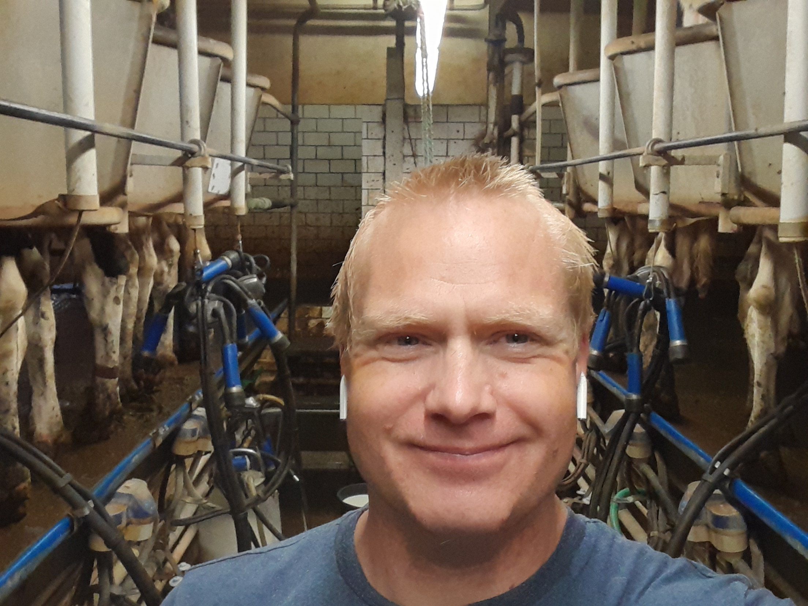
Billede. Ut. i malkegraven.
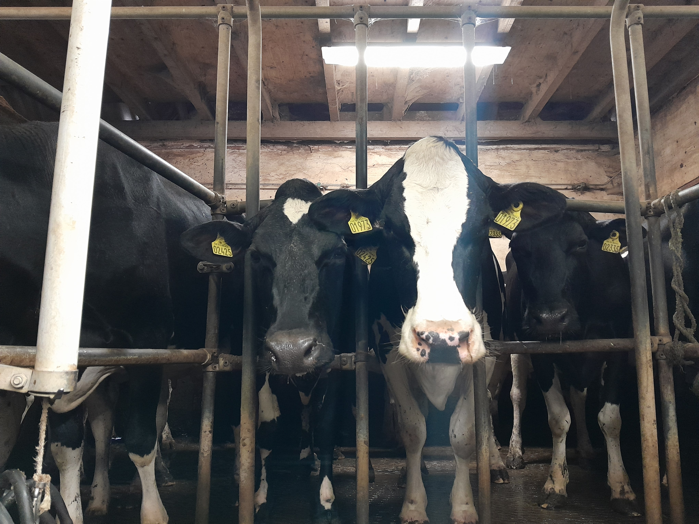
Billede. To af mine tre yndlingskøer stod ved siden af hinanden: Muf (2425) og Kvaj Kvaj (1973).
Cykelturen
Jeg var nødt til at tage cyklen, da kæresten skulle bruge bilen. Det var fremragende vejr, men også kraftigt blæsende. Jeg tog forbi den Daglig Brugs, der lå tættest på gården og der mødte jeg tilfældigvis landmanden med sin søn. Det var lidt pudsigt.
Den tunge hale
Jeg så en mindre, ung ko i gold-stalden i fredags. Hun havde en stor indtørret klump møg siddende omkring spidsen af sin hale. Den var så stor at den gjorde det svært for hende at svinge halen og jage fluer væk og det smertede mig at se. Jeg tænkte på hende hver dag og jeg kunne ikke have det. Der var ikke tid til at fjerne den i fredags, men det var der i dag. Jeg hentede en saks og forsøgte at komme tæt på koen. Det var svært og hun sprang væk og undveg mig flere gange og jeg frygtede at hun ville glide, falde og slå sig.
Forløsning
Endelig lykkedes det at få fat i halen og klippe klumpen af. Det var en rigtig god følelse. Der var andre køer med mindre, men stadig for store klumper og dem fik jeg også klippet af. Jeg ville ønske at jeg kunne gøre arbejdet færdig og klippe dem alle, men i det mindste tog jeg det værste.
Malkningen
Det var ikke så varmt i dag som i går, heldigvis, men stadig lunt. Jeg havde taget strips og tape med så ventilatoren kunne monteres, men manglede en ledning, som jeg måtte tage med i morgen. Det var lidt mærkeligt at der end ikke var en bordventilator i malkegraven, men det var der så snart. Jeg var en smule træt i kroppen efter cykelturen, men ellers gik malkningen godt. Dog pissede og sked rigtig mange af køerne under malkningen, hvilket var irriterende. Når én gjorde det, fik det andre til at gøre det samme.
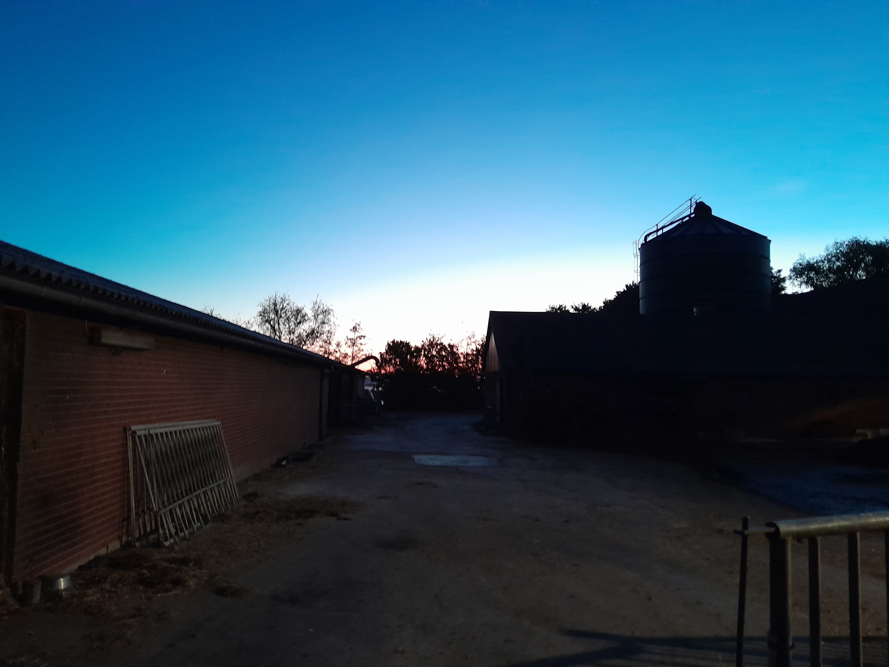
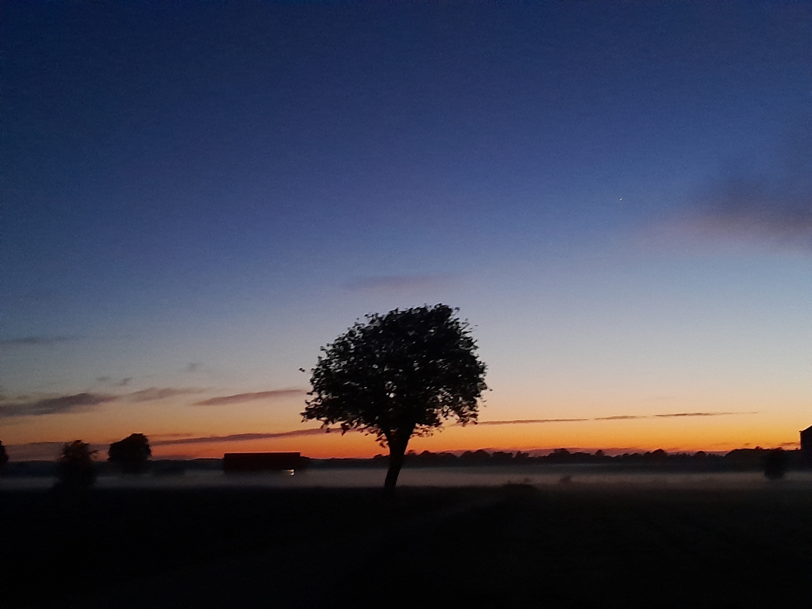
Billeder. Ankomst til gården kl. 3.30 om morgenen. Solen lurede ude i horisonten og disen lå over markerne.
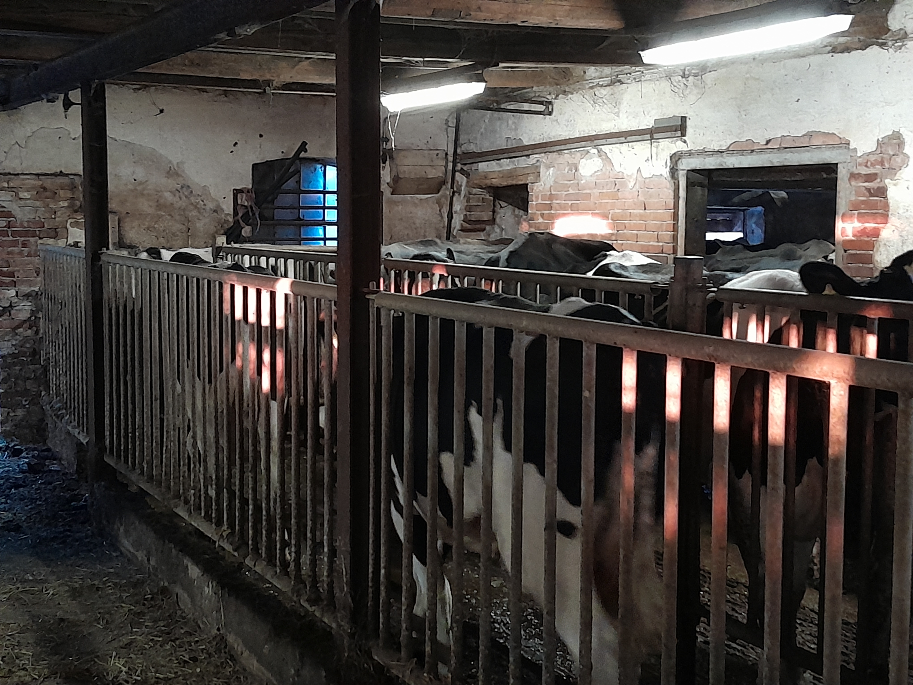
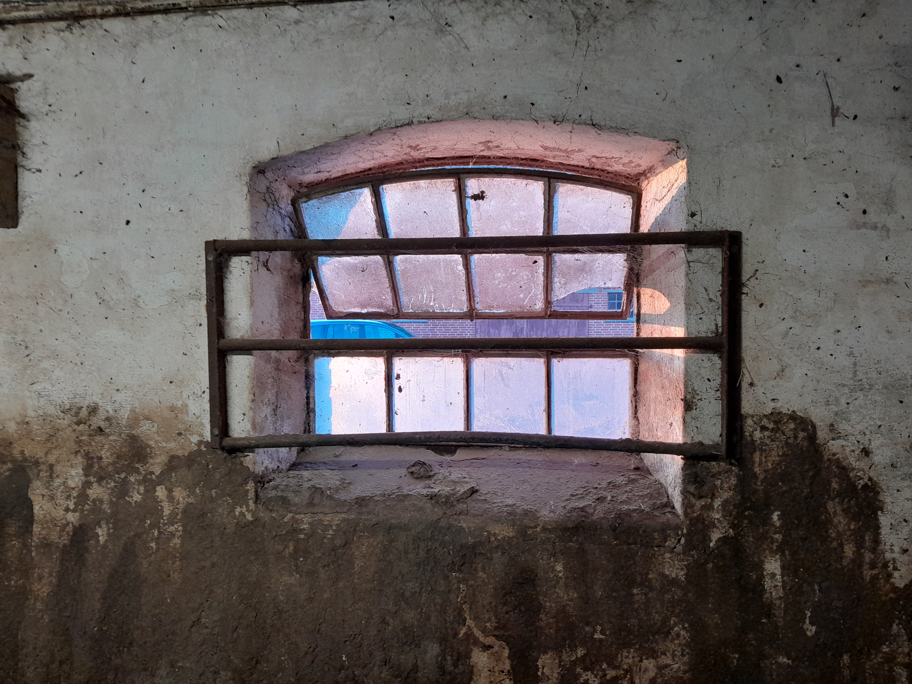
Billeder. Køer på vej tilbage efter morgenmalkningen. Solen stod smukt ind igennem de gamle vinduer i stalden.
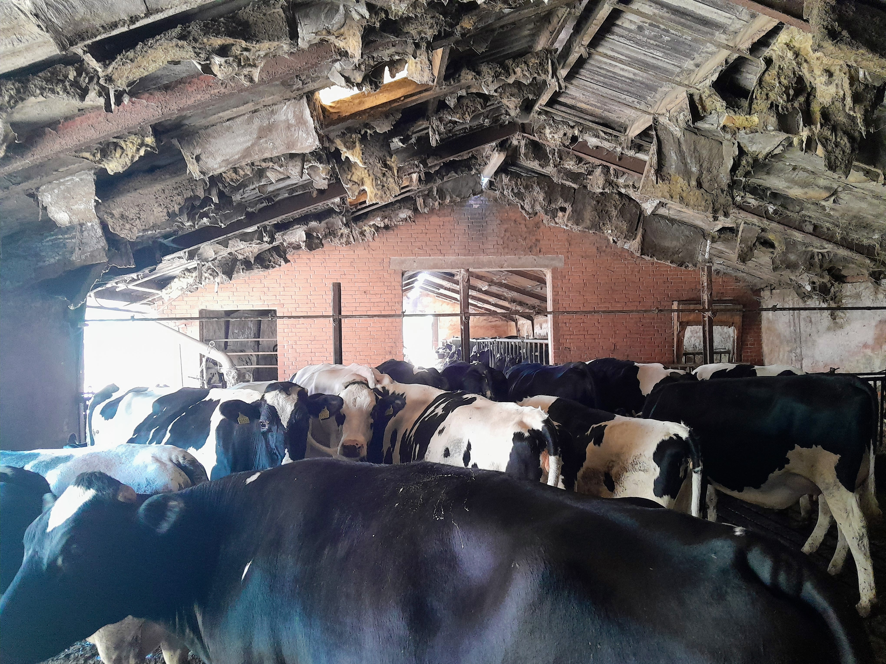
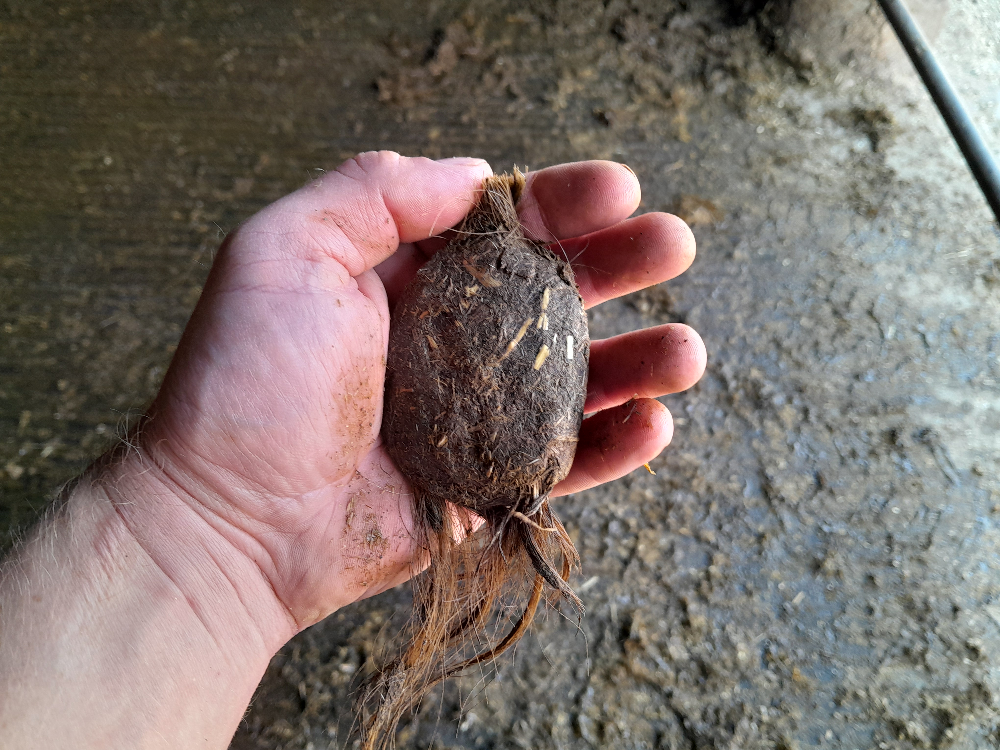
Billeder. Køerne stod tæt i gold-stalden. Jeg fik klippet klumper af manges haler. Jeg var lettet efter det lykkedes mig at fjerne dette stenhårde komøg fra en kos hale.
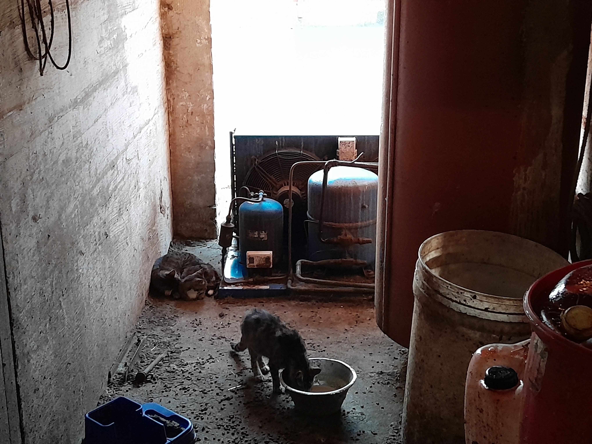
Billede. "Ventilator"-kattene lå og slappede af.
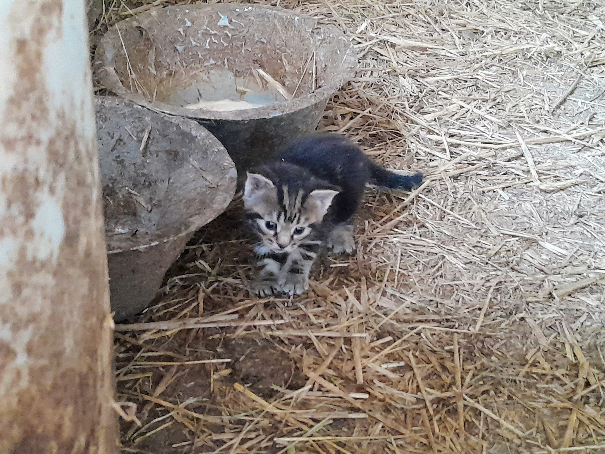
Billede. Den lille kattekilling var ikke bange for mennesker.
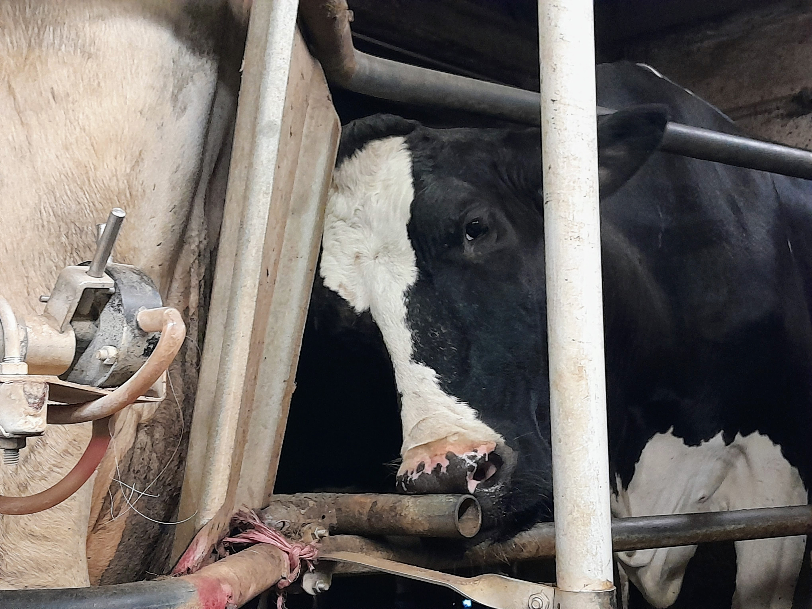
Billede. Koen Channe kiggede træt på mig.


Billeder. Cyklede hjem om aftenen gennem det smukke Vestsjællandske sommerlandskab.
Ikke indlægges alligevel
Både min kæreste og jeg havde skrevet til Overlægen ang. en indlæggelsesdato, og i dag fik jeg et svar fra ham. Udtrapningen kunne foregå lidt mere smidigt, skrev han, jeg skulle ikke være bange for at miste mit arbejde, og vi skulle holde et møde og afttale hvordan det kunne foregå.
Den Almægtige
Det var en fantastisk nyhed fra Overlægen. Så skulle jeg ikke spærres inde alligevel i flere måneder, og dermed undvære min kæreste, Musse, mine venner, familie og min frihed. Det var som at blive benået, og jeg skrev og takkede Overlægen mange gange. Jeg fortalte det til min kæreste og min barndomsven, som jeg mødtes med, men som sidstnævnte sagde, så kunne Overlægen jo finde på hvad som helst og han kunne vende på en tallerken, så det var ikke i fineste orden det hele alligevel. Han sagde, at Overlægen bare havde spillet med musklerne og tvangsmedicineret mig fordi han kunne. Og mi ven havde selvfølgelig ret.
Hos ven
Jeg var stadig helt færdig i kroppen efter arbejdet på gården, men jeg tog alligevel hen til min ven for at hjælpe ham på sit arbejde. Det var hyggeligt som altid, men jeg var også meget træt da jeg kom hjem.
Hos ven
Jeg hjalp min ven igen i dag. De andre ansatte kendte mig efterhånden og jeg sludrede med flere af dem, herunder chefen. Den stod på klargøring af biler, ligesom i går. Det var en hårdt og besværligt arbejde, for flere af bilerne var møgbeskidte, men skulle fremstå som ubrugte, hvorfor der ikke måtte være et eneste fnug i kabinen. Det krævede mange timers slid med tornadoen, støvsugeren, all purpose cleaner, pensel, klud etc. Jeg holdt kun til fem timer i dag inden jeg kørte hjem i det skønne solskinsvejr.
Ko-haler
Jeg var på morgenmalkning i går og ikke sovet efterfølgende, så jeg var faldet relativt tidligt i søvn i går aftes og var derfor nogenlunde veludhvilet inden dagens morgenmalkning. Det var overskyet og køligt, da jeg kørte gennem natten og jeg kunne ikke se den begyndede lyse horisont. Jeg holdt øje med køernes haler og klippede mindre klumper af dem, men der var ikke mange eller store klumper tilbage fordi jeg havde været dem igennem så ofte.
Beskidte køer
Der var fluer i stalden og på køerne, men ikke så mange at det var særligt irriterende. Men mange af køerne var bemærkelsesvist beskidte. Jeg ville ønske at jeg kunne børste og vaske dem, men det eneste jeg havde tid til var at tørre dem af med hænderne, når jeg passerede dem. Jeg havde det ikke godt med det, men jeg vidste ikke om det var normalt for malkekøer. Jeg spulede dog deres klove grundigt i forbindelse med malkningen, hvilket var det vigtigste for at forebygge infektioner.
2204
Den sorte ko med nummer 2204 fortalte landmanden mig var traumatiseret efter hårdhændet behandling af gårdejeren for noget tid tilbage. Hun ville altid sidst ind til malkning og var meget modvillig. Hun løftede rystende sit højre bagben, når jeg nærmede mig hende, selvom jeg var rolig og forsigtig, og jeg havde ondt af hende, så det gjorde ondt i maven. Jeg var meget blid mod hende og tog mig god tid, når det var hendes tur. Jeg aede hende et stykke tid, indtil hun satte i bevægelse.
Adoptation af køer
Jeg ville ønske, at jeg kunne adoptere køer, som 2204, og give dem et godt liv, uden at de skulle producere mælk to gange dagligt hver eneste dag. Mine adopterede køer skulle være ude og græsse hver dag og ligge og nyde tilværelsen. De skulle være nogle stykker, så ingen ko var alene. De skulle have det godt. De skulle ikke arbejde. De skulle bare være køer.
Channes kolde ører
En ko, som landmanden havde døbt Channe, var normalt egenrådig og opsøgende på en anmasende måde. Men i går og i dag havde hun været sidst inde til malkning og opført sig mildt og roligt, nærmest sødt. Landmanden havde skrevet til mig, at hun nok var syg og at jeg skulle være opmærksom på hende og især mærke om hun havde kolde ører. For så var hun syg. Og ganske rigtigt var hendes ører bemærkelsesvist kolde. Men hvad hun i givet fald fejlede var uklart.
Knækket hale og næseblod
Derudover opdagede jeg at en af køerne havde knækket sin hale. Hårene på den var fedtet ind i indtørret blod. Jeg vaskede det væk og så et gabende og stort sår. Hun reagerede ikke som om hun havde særligt ondt i den. Jeg sprayede såret grundigt med zink sulfat spray, som var desinficerende. Det skete nogle gange at køerne trådte på hinandens haler og 500 - 700 kilo på en klov kunne ødelægge det meste. En anden ko opdagede jeg lidt tilfældigt havde blod i hendes næsebor. Det var som sirup i konsistens. Men det blødte ikke aktivt og jeg kunne ikke se hvor det kom fra. Endelig fik jeg kælet med en kat, der var snottet, men sød.
I ambulatoriet
Jeg cyklede til ambulatoriet, hvilket viste sig at være en dårlig ide. Den antipsykotiske medicin gjorde turen ekstraordinært hård, og distancen på lidt over 20 kilometer tog mig over to timer at tilbagelægge. Da jeg nåede frem, var jeg udmattet i en sjælden grad. Bente var forsinket, så mens jeg sad og ventede på hende, udfyldte jeg en tilfredshedsundersøgelse ift. ambulatoriet. Som sandt var, gav jeg dårligt vurdering i samtlige spørgsmål og jeg skrev følgende som fritekst: "Det er et mareridt at være fulgt i ambulatoriet. Det nedbryder mig mentalt og fysisk og er uden moralsk og fagligt belæg."
Bentes mangel på argumenter
Sygeplejerske Bente forsøgte igen at teste mig ift. fejldiagnosen. Hun stillede mig mange spørgsmål, som jeg svarede (rationelt og ikke-psykotisk) på, men mine spørgsmål kunne hun ikke besvare. Eksempelvis spurgte jeg hende, hvilke vrangforestillinger, jeg led af, men det vidste hun ikke, og hun sagde flere gange opgivende, at hun ikke var psykiater. Bente ville så gerne være en overlegn autoritet og hun forsøgte virkelig, men hun fejlede på en pinlig måde.
Ikke mine holdninger
Bente ville så gerne havde at jeg fremkom med nogle vanvittige teorier og opfattelser, som hun kunne skyde i sænk og påstå var udtryk for psykose. Men der var jo ingen. Jeg havde ikke nogen vrangforestillinger om hvordan tingene hang sammen. Jeg kunne igen og igen fortælle hende, hvordan andre - fagpersoner - opfattede mig, hvilket var, at de ikke opfattede mig som spor psykotisk. Jeg nævnte mentalundersøgelsen og de mange psykiatriske overlæger, som havde erklæret at jeg ikke var spor psykotisk, og det kunne Bente ikke sige noget til.
Uforstående sygeplejerske
Jeg prøvede at forklare Bente, at enkelte beskeder til Overlægen, hvor jeg udtrykte min indfølelige frustration over at være svært fattig, ikke var udtryk for psykose. Jeg havde objektivt ingen penge på daværende tidspunkt, kun stor gæld og jeg havde ikke råd til mad eller offentlig transport. At være så fattig så længe ville alle andre mennesker også være frustreret over. Dermed var der ikke noget psykotisk over min utilfredshed. Bente havde svært ved at forstå det, men hun kunne ikke argumentere imod det.
Hos ven
Jeg kørte den lange vej hen til min vens arbejde. Det var blevet temmeligt varmt, men med en svalende blæst. Den stod på klargøring af biler igen, men jeg var ikke motiveret overhovedet, men mentalt udmattet. Jeg rengjorde biler, som jeg aldrig nogensinde havde en jordisk chance for at erhverve mig, BMW, Mercedes, Tesla, som skulle fremstå som nye. Havde min karriere ikke været ødelagt, kunne jeg meget vel have kørt rundt i en af dem nu. Omvendt havde jeg aldrig gået op i biler, så måske ikke alligevel.
Jokede med chefen
Jeg hilste på de fastansatte, talte og jokede med dem og med chefen, som var en vittig fyr. Jeg følte mig hjemme i firmaet og havde fået rutine i arbejdet, men var ikke ansat der. Jeg ville så gerne have et rigtigt fuldtidsarbejde og et akademisk et af slagsen. Jeg interesserede mig ikke for biler, og selv om jeg elskede køerne, så var der ingen fremtid i det arbejde.
Jeg var nødt til at tage det arbejde, der bød sig, men jeg drømte om at være læge.
Jeg var nødt til at tage det arbejde, der bød sig, men jeg drømte om at være læge eller i det mindste at lave noget, der var akademisk udfordrende. Jeg havde skrevet til min advokat i går ang. ophævelse af den modbydelige og livstruende dom og om generhvervelse af min autorisation, men ikke hørt fra hende endnu. Jeg skrev også til Peter Jantzen om den nye udvikling og om hvordan jeg havde det. Jeg var i krise og havde desperat brug for et håb, for at få hjælp til at få livet tilbage. Overlægen var i min optik et monster. Han var ikke egnet som læge eller psykiater og han virkede ikke som om, at han var et rigtigt menneske med samvittighed og moral.
Min bog
Alle modbydelighederne jeg havde været udsat for, var dokumenteret og beskrevet. Jeg ville ikke tie med det. Jeg ville udgive en bog om mine oplevelser.
Årets første svømmetur
Min kæreste og jeg købte pizzaer, som vi tog med ned til stranden sammen med Musse. Vi spiste i den friske vind og selvom det var overskyet, var det lunt. Der var enkelte andre på stranden, men ellers var den øde. Jeg gik ud i det overraskende varme vand og svømmede rundt. Musse peb efter mig inde på stranden, men havde ikke lyst til at blive våd. Min krop var ikke vant til at svømme, så det blev ikke til så længe, men selv den korte tid var helt fantastisk.
Bog udtryk for psykose
Jeg huskede hvad Overlægen havde forsøgt at bilde mig ind: At denne tekst var udtryk for psykose. Idioten havde ikke læst noget af den, hvilket han indrømmede, så det kunne han ikke udtale sig om. Men helt ærligt, hvor i min tekst var der noget psykotisk at læse? Det var jo en dagbog. Der var intet sindssygt ved den. Måske var Overlægens problem at jeg skrev om det, han udsatte mig for?
Ny regering
Endelig kom der en ny regering. De borgerlige havde spillet falliet og Lars Løkke havde givet køb på det, han havde lovet. Mette Frederiksen fortsate i sin tredje periode. For mig spillede det ikke nogen som helst rolle. Med en mulig undtagelse, nemlig at Enhedslisten ad åre ville gøre tandlæge gratis. Det betød faktisk rigtig meget for mig, så det var da positivt.
Voksenlærling
Jeg sendte en ansøgning som voksenlærling inden for produktionsgartnerfaget. Jeg fik ikke ChatGPT til at skrive den for mig, men gjorde det selv. Dermed blev ansøgningen ikke særligt velskrevet og fuldendt, men tilgengæld blev den oprigtig og autentisk. Jeg interesserede mig ikke særligt for produktionsgartnerfaget, men søgte stillingen fordi den var mest realistisk at få og fordi den lå tættest på. Og jeg havde virkelig brug for et fuldtidsarbejde.
Voksenelev
Jeg søgte også en stilling som IT-supporter voksenelev og også denne ansøgning skrev jeg selv. Jeg havde meget mere at byde på ift. denne stilling og det var også noget, jeg faktisk interesserede mig for.
Meningen med min fortælling
Hvorfor var min beretning relevant for andre? Fordi jeg havde været udsat for helt vildt grænseoverskridende oplevelser og vilkår og dokumenteret dem grundigt. Jeg gav indblik i verdner, som var lukket land for langt de fleste, som var spændende at læse om og som de færreste havde beskrevet som jeg. Det var relevant for andre normale mennesker at læse om hvordan mit møde med politi, retsvæsen, retspsykiatri og hjemløshed havde været. Fordi jeg var rask og normal. Mine erfaringer og dokumentation var ret unik. Og relevant. Det krævede dog at jeg fandt en måde at formidle min beretning på, som andre havde lyst til at læse. Det var en meget overvældende opgave.
Hos ven
Den stod igen på klargøring af brugte biler hos min ven. Jeg fik alt for lidt for arbejdet, især når transportudgifterne var trukket fra lønnen, men penge var ikke det vigtigste, det var at være beskæftiget og at tilbringe tid sammen med min ven. Jeg overførte hver måned de fleste af mine penge til min kæreste. Hun havde høje faste udgifter og var afhængig af min indtægt. Jeg var lykkelig for at hjælpe hende med alt, jeg kunne bidrage dem. Hver gang jeg overførte penge til hende, forsvandt min bekymring og angst.
Fluernes Herre
Nu var fluerne for alvor kommet ind i stalden. Køerne brugte deres haler mod dem, men det var ikke effektivt og fluerne sad på køernes halse og rygge. Jeg klippede alle lorte klumper af køernes haler, mens de blev malkede, så de kunne bruge dem lidt lettere, men nu begyndte jeg at spraye dem med fluespray, som vi havde kasser af. Det hjalp faktisk og den kraftige lugt af blomst fra sprayen hang tungt i luften. Mange af køere var stadig ret snavsede og jeg spulede og tørrede dem af i et væk, især deres klove. Det var et stort arbejde med 120 køer. Jeg havde det ikke godt med det, men kunne ikke gøre mere end det.
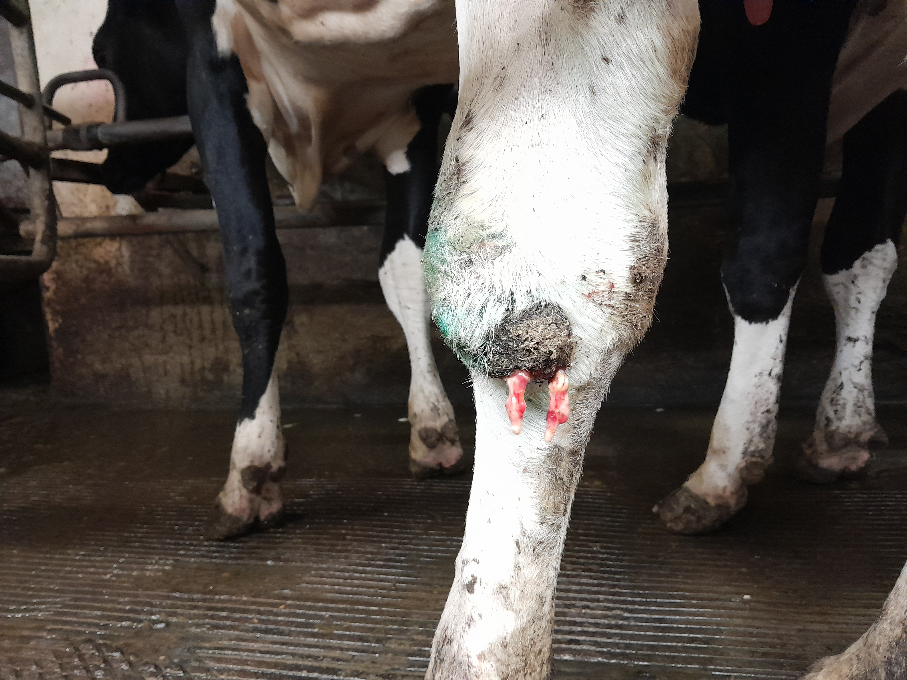
Billede. Pus, der havde presset sig ud af et betændt og hævet sår. Jeg vaskede det og påførte antibiotisk spray på det, men koen sparkede voldsomt, så det var svært.
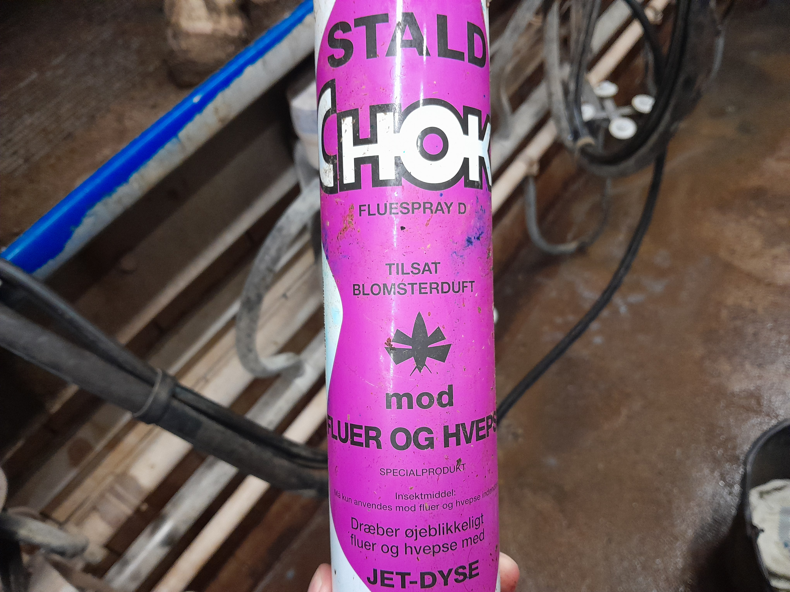
Billede. Denne fluespray begyndte jeg at bruge flittigt af.

Billede. For at behandle betændelse i huden ved klovene påførte jeg antibiotisk salve.
Fluernes fjende
Jeg blev overrasket over hvor mange fluer, der faktisk var i stalden, da jeg mødte ind. Jeg kunne høre at kalvene var urolige allerede på gårdspladsen. Der var en mindre stald til de mindste kalve og nogle bure til de lidt større kalve i malkestalden og begge steder muhede kalvene og var meget urolige. De var alle sammen bogstavlig talt dækket af fluer, luften var tyk af fluer, som satte sig på mig og der sad kager af fluer på væggene, fadene og tremmerne.
Så dø da
Det virkede som om at de stakkels dyr var meget stressede over de satans fluer og jeg fik det helt dårligt ved synet af dem. De led. Pga. myriader af fluer. Nu skulle fluerne fandme dø. Jeg tog en stor dåse "Stald shock" fluespray og gik i krig. Jeg brugte en hel spray hvert sted og alt blev sprayet til. Fluerne døde som fluer. Når sprayen ramte, faldt de simpelthen ned. Jeg nød det. Jeg brugte tre spraydåser til at rense ud blandt kalvene, og det hjalp gevaldigt. Spørgsmålet var hvor længe det holdt, men nu lå kalvene i høet og slappede af, så det var det værd.
Arbejdede gratis
Jeg mødte ind mindst 20 minutter før tid, altså før jeg fik lån for det og tiden brugte jeg på at give kalvene strøelse. Ellers kunne jeg ikke nå det, selv om jeg var hurtig. Så det var mange penge landmanden havde sparet på mig. Derfor havde jeg ikke dårlig samvittighed over brugen af fluespray. Køerne skulle have det godt. Punktum. Under selve malkningen indførte jeg den rutine at jeg sprayede alle køerne og det brugte jeg yderligere to spraydåser på.
Rig gårdejer
Gården var ikke velholdt, alt var slidt, der var ikke ventilatorer til at køle køerne under heden og gårdejeren burde investere mere i driften. Det var ikke fordi manden var fattig. Han ejede 145 hektar jord, havde han fortalt mig. Ifølge ChatGTP havde jorden alene en værdi på 33 til 36 millioner kroner. Så kunne han sagten bruge lidt af pengene på de søde køer. Og fluespray. Jeg kunne virkelig godt lide gårdejeren, men han var også en gnier og det var ærgerligt.
Jeg var meget nervøs før dagens videosamtale med Overlægen. Havde han ombestemt sig? Min kæreste deltog også og ligesom jeg plejede optog jeg samtalen. Både hende fra Kriminalforsorgen og sygeplejerske Bente deltog. Det var en enetale fra Overlægen af. Han sagde, at han nu "pauserede" den antipsykotiske medicin, altså satte den på pause, og at jeg i august måned skulle indlægges i 48 timer til observation.
De ulovlige krav
Men han ville ikke fremover tale om det, han og jeg (altså jeg og alle andre, der kendte mig) var uenige om, underforstået diagnosen og hans fejlmedicinering. Jeg måtte ikke optage noget under indlæggelsen og jeg måtte ikke skrive om den heller. Jeg måtte ikke skrive til nogen myndigheder overhovedet og hvis nogen kontaktede ham ang. mig, var det også et brud på aftalen. Overholdt jeg ikke alt dette, ville han starte den antipsykotiske medicn igen. Overlægen forbød mig altså at tage relevant henvendelse til offentlige myndigheder, hvilket han ikke måtte. Han forbød mig også i at bruge min ytringsfrihed til at skrive om mit forløb og den kommende indlæggelse. Og hvis nogen så sig sur på mig, ville han straffe mig med uberettiget og skadelig medicin.
Et ondt menneske
Overlægen knægtede altså mine helt grundlæggende menneskerettigheder og han truede mig til at undlade at berette om det. Han havde i klar modstrid med virkeligheden tvangsmedicineret mig for noget, han vidste jeg ikke fejlede og han havde gjort det som en straf. Han havde udsat mig for medicinsk fremkaldt svær nedtrykthed i over et halvt år, selvom jeg ikke var spor sindssyg og nu fremstillede han sig selv som ofret. Han var et ondt menneske. Meget modbydelig. Og jeg kom ikke til at tie med hans mishandling af mig. Aldrig. Uanset hvad han straffede mig med.
I almen interesse
Det var i almen interesse at jeg berettede om, hvor groft Overlægen misbrugte sit fag og sin stilling. Befolkningen kunne ikke være tjent med at den slags foregik i Danmark. Alle skulle vide, hvad Overlægen havde gjort og man skulle standse hans klamme overgreb.
Når ingen lytter
Jeg blev ekstra nedtryk hver gang jeg havde med Overlægen og sygeplejerske Bente at gøre. Det var ikke til at holde ud og det blev værre og værre. Jeg var træt af at lide pga. andre. Jeg ville have min lægeautorisation igen, jeg ville ikke malke køer resten af mit liv. Der var ingen forståelse eller reel hjælp at hente nogen steder. Ingen lyttede. Jeg vidste godt hvad det ville ende med. Ikke i morgen, om en måned eller om et år. Men ad åre, på et tidspunkt, mens jeg fortsat rådnede op og intet var sket.
Havearbejde hos ven
Jeg var udkørt mentalt, men havde lovet at hjælpe en ven med sin have. Vi klippede hans store træ og hækken og det var faktisk ret hyggeligt. Det blæste og der kom enkelte kraftige regnbyger, men herimellem skinnede solen varmt.
Havsvømning
Jeg var ved godt mod, da jeg hen ad eftermiddagen nåede hjem, men også træt. Vi tog dog ned på stranden alle tre og gik en tur. Jeg var kortvarigt i vandet, som var køligt, men ikke alt for koldt. Det blæste dog kraftigt, hvilket tog noget af glæden. Smagen af saltvand og duften af tang, krusningerne på bølgerne og følelsen da jeg kom op af vandet, var skønt.
Bogen
Overlægen havde truet mig til tavshed, men han kunne ikke få det hele; han kunne ikke udsætte mig for ulidelig og uberettiget tvangsmedicinering og samtidig slippe for at jeg efterfølgende berettede om det. Forstod han ikke, at jeg i bund og grund var ligeglad med hvad han gjorde mod mig? At mit liv var ødelagt uanset hvad?
Klovbeskærere
Jeg skulle på eftermiddagsmalkning, fordi der var klovbeskærere i dag og i morgen. Det var de to, der også var der i vinters, en ældre og en yngre kvinde, som jeg hilste på. Jeg fik også en sludder med landmanden, som havde assisteret i klovbeskærerenes arbejde. Køerne kom en efter en ind i en boks, hvor de blev fikseret og fik deres klove undersøgt og beskåret. Det skulle ske to gange årligt. En del af køerne havde forbinding om klovene, da jeg efterfølgende malkede dem, men ingen havde alvorlige problemer.
700 kilo kærlighed
Køer var ikke dumme robotter, men havde personlighed og følelser. De var flokdyr, som kunne binde sig til andre køer i form af venskaber, de kunne sagtens huske specifikke personer og de havde en meget veludviklet lugtesans. Især havde de meget udtryksfulde øjne, som afspejlede deres humør, om de var skræmte, nysgerrige eller trætte. De kunne også reagere på deres navn, hvis man konsekvent havde kaldt dem et, hvilket landmanden, gårdejeren og jeg gjorde. Jeg fik straks øje på hende blandt de fem andre køer, der stod og betragtede mig, mens jeg malkede.
Kvaj Kvaj
Hendes måde at stå på og hendes øje, mens hun stod og tyggede. Det var Kvaj Kvaj. Hun havde født 8 kalve og var 12 år gammel. Hun var en ældre dame, som havde ydet en kæmpe indsats livet igennem. Jeg nussede hende altid, når jeg havde med hende at gøre, hun fik ekstra fluespray og jeg spulede hendes klove særligt grundigt ved hver malkning. Jeg elskede at nusse siden af hendes mule og på halsen. Nogle gange lukkede hun øjnene, når jeg gjorde det. Hvis jeg vandt i lotto, ville jeg købe hende fri og sætte hende på græs. Så skulle hun nyde sit otium og aldrig producere noget for menneskers skyld igen.
Meningen med mit liv
Meningen med mit liv var at være læge og få børn. Begge dele var nu umuligt. Det skyldtes primært en person og hendes fejldiagnose. Hun havde nægtet at erkende sin fejl og havde dermed ødelagt mit liv. Det tænkte jeg på næsten hver dag og det åd mig op. Hvordan kunne et enkelt menneske skade mig så meget?
Bogen
Nu havde jeg fået en aftale med et forlag, men endnu ikke skrevet en kontrakt. Jeg ville gøre alt for at min beretning udkom, så alle i Danmark kunne læse om hvad, der var hændt mig - og hvem, der var skyld i det. Det var positivt at nogen lyttede til mig, men det var langt, langt fra nok.
Hos køerne
Jeg elskede køerne, selv når de sked under malkningen og svinede alt til. Jeg knoklede for at de havde det godt, jeg sprayede med Stald Shock. jeg klippede lortekugler af deres haler, og jeg spulede deres klove rene. Jeg nussede med så mange køer, jeg kunne nå og især de faste, 2330, 2425 og Kvaj Kvaj. Hvis jeg kunne tage en ko med hjem, havde jeg gjort det.
Bogen
Det var så utroligt heldigt, at jeg havde svært ved at tro på det, men det lod som om at bogprojektet ville blive en realitet.
Voksenlærling
Jeg måtte uddanne mig og arbejde, indtil jeg kunne få min lægeautorisation igen. Jeg valgte produktionsgartner og talte med en arbejdsgiver forleden om en læreplads hos ham. Jeg aftalte, at jeg i næste uge skulle komme forbi og se stedet og så kunne vi aftale yderligere.
Terpede planter
Jeg forberedte mødet i gartneriet i næste uge ved at læse om hvilke planter, der blev produceret på stedet. Jeg ville ønske, at jeg interesserede mig mere for emnet, men selve det fysiske arbejde skulle jeg nok interessere mig for, og ikke alt behøvede at være en dans på roser.
Afventede journalisten
Jeg havde skrevet et resume at mit forløb til journalistern i går og afventede en tilbagemelding fra hende. Jeg bad til Gud om, at min beretning var relevant og interessant for hende og for andre. Hvis hun accepterede at skrive bogen med mig, kunne hun redde alt, både for mig og min kæreste. Selvom mine bødler fortjente at blive nævnt ved navn, så skulle bogen ikke handle om dem, men om hvordan det var at få mit liv ødelagt af løgne og myndighedsfejl.
Søvnmangel
Jeg havde kun sovet en lille times tid og var dødtræt, da jeg skulle op kl. 2.30. Det var et dårligt tegn.
Kælvningsfeber
Gårdejeren kom forbi under malkningen og bad om en hånd til en ko, der var dårlig med kælvningsfeber. Det var en tilstand, der skyldtes for lavt kalcium i blodet og kunne forekomme, når en ko havde født en kalv og samtidig skulle producere råmælk. Den stakkels ko lå på siden og kunne ikke vende sig, hvilket var farligt, hvis hun lå sådan for længe.
Indsprøjtning
Koen lå i goldestalden og forsøgte forgæves at rejse sig. Hun udstødte nogle brummende lyde og lod til at have det skidt. Jeg gik hen til hende og aede hende nænsomt. Så gav jeg hende en indsprøjtning med smertestillende medicin og gårdejeren fik sprøjtet en mikstur med kalcium ind i hendes mund, som hun heldigvis sank. Herefter brugte han den lille graver til at skubbe hende om, så hun lå rigtigt og vi lavede en lille vold af halm og møg, som hun kunne støtte sig til, så hun ikke faldt tilbage og lå forkert igen.
Ro ved stoppestedet
Eftermiddagsmalkningen var med landmanden, da gårejeren havde et æriende. Vi var hurtigt færdige, men jeg var dødtræt. Jeg havde ikke sovet meget før eftermiddagsmalkningen og jeg var nødt til at tage bussen og gå et ret langt stykke vej til arbejdet. Nu skulle jeg gå distancen igen da vi var færdige. Det tog mig ca. 45 minutter og jeg nåede ikke bussen, som kørte forbi næsen af mig. Jeg ventede derfor ved stoppestedet i 50 minutter til næste afgang.
Der var kraftige byger og jeg var helt ødelagt. Jeg tænkte på køerne, hvordan de havde det og hvad de lavede nu. Jeg fik følelsen af et tilhørsforhold til dyrene og jeg savnede dem allerede. Bussen kørte desværre kun halvdelen af vejen hjem, så jeg måtte vandre i over en halv time, da jeg stod af, indtil min kæreste kunne hente mig i bilen. Jeg var ødelagt i kroppen og utroligt træt.
Bog kontrakten
Så fik jeg tilsendt kontrakten fra forlaget. Jeg ventede med at læse den til i morgen, fordi jeg ikke kunne nå det i dag.
Bingo
Jeg var med kæresten til bingo i det lokale forsamlingshus. Det var hendes nye arbejde, der havde arrangeret det. Der var knapt 90 mennesker i alt og dem, vi talte med var søde og gode til at give os råd. Spillet gik meget hurtigt og det var ikke let at følge med. Vi spillede i fire og en halv time kun afbrudt af en kort pause og det var alt, alt for meget. Jeg var helt ør i hovedet til sidst. Det var godt at vi deltog, men det skulle jeg aldrig prøve igen.
Havsvømning
Det var 16 grader, blæsende og overskyet og ikke oplagt badevejr, men jeg tog alligevel til stranden med kæresten og Musse. Jeg iførte mig våddragt og hoppede i vandet, som trods dragten var temmeligt koldt. I det mindste fik jeg afprøvet våddragten.
Ansøgning
Jeg sendte en jobansøgning afsted vedr. stillingen som kirketjener. Det var mest på min kærestes foranledning.
Samtale med journalisten
Til aften tale jeg med den journalist, der skulle skrive bogen. Hun var sympatisk og vi aftalte et møde.
Møde i Det Psykiatriske Klagenævn
Jeg modtog en sms fra bistandsværgen om et møde i Det Psykiatriske Klagenævn og om mine forventninger til udfaldet. Jeg skrev til ham, at jeg intet havde hørt om noget møde, men at jeg ikke kunne deltage, fordi jeg skulle til møde på gartneriet. Jeg skrev, at jeg var ligeglad med udfaldet af mødet. Jeg vidste, at udfaldet var givet på forhånd, hvorfor det under alle omstændigheder var omsonst for mig at deltage i det. Jeg skrev at han ikke skulle trække min klage tilbage.
Gartneriet
Jeg var fokuseret på rundvisningen på gartneriet. Jeg havde forberedt mig og læst de mange gode informationer på firmaets hjemmeside og den kontaktperson, jeg mødte, var venlig og fortalte mig om arbejdsgangene, mens han viste mig rundt. Det var en god rundvisning, som varede ca. 45 minutter, men bagefter var jeg mentalt udkørt. Vi aftalte jeg skulle sende nogle dage, jeg kunne være på gartneriet som praktikant.
Varmste dag
Det var solskin, ingen vind og fugtigt. Jeg syntes det var alt for varmt, selvom termometeret kun sagde 28 grader. Køerne var også udfordrede og pustede. Stalden var en fugtig sauna og ulidelig for både køer og mennesker.
30 grader i stalden
Det var fugtigt hedt og jeg tænkte, at det ville blive ulideligt i stalden, da jeg kørte hjemmefra. Bilens vinduer var rullet helt ned, men alligevel svedte jeg tran. Jeg mødte som sædvanligt knapt en halv time før, jeg fik løn og gav kalvene og sygeboksen strøelse, klargjorde alt og gik rundt blandt kalvene i sprayede mod fluer, som der var myriader af der. Så gik malkningen i gang. Jeg havde sat ventilatoren til, men det hjalp meget lidt. Det blev virkeligt varmt, 30 grader i stalden, men da luftfugtigheden var meget høj, føltes det som mere.
Fjerne i blikket
Jeg svedte kraftigt og tøjet var gennemblødt. Men det værste var, at køerne led under heden, de stod alle og pustede, altså trak vejret hurtigt og var fjerne i blikket. Jeg skyndte mig virkeligt meget for deres skyld, for at de ikke skulle have det dårligt i et sekund for længe. Der var så fugtigt at der kom kondens på min sodavandsflaske og på min mobiltelefon, så det gik ikke at spule køerne med vand for at køle dem ned. Det en stressende at køernes velbefindende afhang af hvor hurtig jeg var og det var ikke en rar måde at arbejde på.
Da flertallet af køer var malkede, og de resterende ikke stod tæt længere og da temperaturen faldt nogle grader, begyndte jeg at spule køerne med koldt vand. Både deres klove og deres kroppe. Da var alt for beskidte og trængte til at blive vaskede, men det skete desværre ikke normalt på gården. Jeg fattede ikke at man ikke brugte de få penge som fire- fem ventilatorer kostede og monterede dem i loftet af stalden, så der kom luft flow og så køerne ikke led så meget. Det var uforståeligt for mig. Køerne burde have en medalje for at producere så meget mælk, men de blev ikke ordentligt behandlet. De fik ikke lov til at være køer, men var bare fabrikker.
Det var en klassisk og idyllisk og meget varm sommerdag og jeg var helt upbrugt, da jeg kørte hjem. Jeg hentede pizza på hjemvejen til min kæreste og jeg, som vi spiste i haven, mens Musse havde travlt med at holde hendes territorium fri for fugle. Jeg gik i seng kl. 20.15, da jeg skulle igang igen i nat.
Stakkels landmand
Landmanden bad mig om at ringe til hende. Det var vigtigt, skrev hun i sms'en. Hun græd, da jeg fik hende i røret. Hendes mand havde forladt hende. På den fejeste måde og af den nærmest værste årsag. Hun bad mig om at malke de følgende eftermiddage, fordi hun ikke kunne overskue noget som helst. Jeg var helt ødelagt efter de seneste dages malkning, men sagde selvfølgelig ja. Jeg havde virkelig glædet mig til at have fri og arbejdet i stalden var meget udmattende i heden, så jeg fik det dårligt bare af at tænke på mere arbejde nu, men hun havde det værre end mig.
En fej mand
Landmanden arbejdede utroligt meget og hendes job var super fysisk hårdt. Selvom jeg tog hendes eftermiddage, skulle hun stadig malke om morgenen og sørge for fodder til køerne i dagtiden. Hun var nu alene med to børn og et yderst krævende job og hun kunne ikke tillade sig at melde sig syg eller holde fri. Sådan var vilkåret. Hun havde tilmed forsørget sin mand, som nu var skredet. Dere var to sider af en sag, men alene det at svigte sin hustru på den måde han havde gjort, var så usandsyneligt fejt. Hvordan havde han samvittighed til det?
Varme alarm
Der var varslet hedebølge, toppende om tre dage, på lørdag, med hele 34 grader i skyggen. Jeg fik angst af bare at tænke på hvor ulideligt det ville blive i stalden, for landmanden havde qua sin livskrise fået mig til at tage alle hendes eftermiddagsmalkninger i knap en uge. Jeg skrev til hende, at jeg var bekymret for at malke om lørdagen og især bekymret for køernes velbefindende, men hendes råd var bare at drikke rigeligt med vand. Det gjorde mig vred, men jeg skrev bare ok tilbage. Jeg havde selv stort behov for at komme mig efter tre dages malkninger, men fortsatte alligevel straks med vagter for hendes skyld.
Angsten for varmen
Jeg tænkte hele tiden på heden om tre dage og fik hjertebanken og angst. Der var ingen tiltag til at lindre heden for køerne og det havde jeg det utroligt dårligt med. Jeg vidste at jeg selv ville få det fysisk rigtigt dårligt, men det var værre for de stakkels køer. Det var fandme ikke i orden at der ikke var ventilation eller at man tog færre køer ind i den trange stald, hvor de stod som sild i en tønde. Hvorfor sprang man ikke bare eftermiddagsmalkningen over? Det drejede sig kun om en enkelt malkning og de blev malket om morgenen, hvor der var køligt.
Ingen fremtid i landbruget
Når det var normalt at behandle køer, som på min arbejdsplads, så kunne jeg ikke med god samvittighed fortsætte arbejdet. Jeg vidste selvfølgelig at det ingen effekt havde at jeg sagde op, og at køerne fortsat blev behandlet som de gjorde, men jeg kunne ikke holde ud at deltage i det.
Egoisme?
Selvfølgelig skulle jeg hjælpe landmanden når hun var i sit livs krise, da jeg talte med hende i går, løb tårene ned ad kinderne på hende, men andre skulle ikke lide pga det. Køerne især ikke. Det var ingen undskyldning for neglect at man selv havde det skidt. Det var uretfærdigt og benhårdt for hende, men sådan var det desværre. Jeg var kørt i sænk, men tog alligevel hendes malkninger. Det var fair nok. Men køerne skulle altid behandles godt og ikke lide under varmen. Landmanden blev nødt til at stramme sig an og hjælpe med malkningen på lørdag, så vi var meget hurtigere færdige, så køerne ikke led så meget.
Et forvarsel
Solen stod ned fra en klar, blå himmel, og det var 29 grader i skyggen og brandvarmt, men det blæste hendigvis en del. Jeg startede i malkegraven, mens landmanden og gårdejeren lukkede køerne ud. Det betød at jeg ville blive hurtigere færdig, så det var jeg rigtig glad for. Senere kom landmanden ned til mig og hjalp i tyve minutters tid med malkningen, selvom jeg sagde til hende, at hun bare skulle tage hjem. Hun var i en svær krise og skulle ikke arbejde mere end højst nødvendigt.
Rakte tunge
Under malkningen så jeg for første gang et karakteristisk tegn på at en ko havde det svært pga. heden i malkestalden; hun stod og kiggede på mig, men kneb så øjnene sammen og rakte tungen lige ud af munden. Det gjorde mig bekymret. Jeg skyndte mig at spule hende på snuden og benene med vand og hun blev normal igen. Alle køer stod og trak vejret hurtigt i små ryk. Det var også en tegn på at de havde det for varmt.
Magtesløs
Jeg spulede alle køers ben, mens de ventede på at det var deres tur, men det var ikke kun godt, for der blev så fugtigt af vanddampen, der ikke kunne blæse ud, at køerne fik det værre. Jeg skyndte mig alt, hvad jeg overhovedet kunne, for at køerne kom hurtigt igennem og det var meget stressende. Især fordi køerne var sløve og ikke forlod stalden, som de plejede. Jeg var dog rekord hurtig færdig med malkningen, hvilket også skyldtes den hjælp, jeg havde fået. Jeg blev svimmel af varmen, selvom jeg drak rigeligt og løbende gennemvædede min t-shirt med vand.
Frygten
De sidste tre-fire dage var frygten for at malke i morgen steget. Jeg tænkte konstant på, hvor modbydeligt det ville være for især køerne. Jeg frygtde at de ville kollapse og jeg vidste, at de ville lide meget. Det forhindrede mig i at sove, og jeg fik angstanfald i løbet af aftenen. Det var dyreplageri at malkestalden ikke havde ventilation og at køerne stod så tæt mast sammen. Det var frygteligt at tænke på.
Forholdsregler
Det var faktisk til at holde ud at være indenfor i huset, men vi havde også lukket vinduerne, fraset sent om aftenen, og gardierne var for, hvor solen stod ind.
Faktisk farligt vejr
Jeg vågnede om formiddagen med angst og en fornemmelse af, at noget frygteligt ville ske i eftermiddag, at køerne kokm til at lide forfærdeligt og måske dø af heden, og at jeg var helt alene om at malke dem og intet kunne gøre for at lindre deres lidelser. Det var 35 grader i skyggen i byen, hvor gården lå, skyfrit og vindstille, og tilmed fugtigt. Da jeg trådte ud af døren, var det som at blive ramt af en mur af ild. Vejret var mere ubehageligt end jeg havde frygtet og jeg havde det elendigt psykisk, som skulle jeg deltage i en henrettelse.
Varmeste nogensinde
Der var kun den gamle gårdejer og jeg, og da jeg nærmede mig fristalden, så jeg flere køer stod med tungen ude af munden og med savl dryppende ned. Der var helt ulideligt at være selv i deres stald, hvor de mest opholdt sig. Jeg følte dyb frygt og svært psykisk ubehag. Nu skulle de stakkels dyr gennes hen i malkestalden, hvor der hurtigt ville blive endnu mere varmt, de kom til at lide endnu mere og det hele var op til mig og jeg kunne intet gøre.
Frygen som drivkraft
Jeg havde taget fire to liter sodavandsflasker og fyldt dem med vand og lagt i køleskabet. De kom med ned i malkegraven. Jeg gennemvædede både shorte og t-shirt med vand og sprayede med Stald Shock hos kalvene, hvor der var alt for mange fluer og strøede hos dem og så startede jeg. Jeg hørte ikke podcasts som normalt men var fuldt fokuseret på at være så hurtig som overhovedet muligt, som gjaldt det liv og død og det gjorde det nærmest også. Frygten var min drivkraft og jeg havde det så dårligt med hele situationen.
I stalden
Køerne blev gennet ud af deres fristald. Mange drak ivrigt på vej ud. Det var lummert og ulideligt og køerne virkede apatiske. Da de var ude og nu stod mast sammen i den trange malkestald, løb jeg ind i den og ned i graven for at malke. Mange køer stod allerede med tungen ud af munden. Jeg spulede dem, selvom det ikke rigtigt hjalp. Jeg arbejdede så hurtigt og fokuseret, som aldrig før. Køerne skulle malkes og så hurtigt ud. Køerne var disorienterede og mange gik tilbage igen, så jeg skyndte mig op af graven og gennede dem væk og ud af stalden. Hjertet bankede og munden var knastør.
Dårlig af varmen
Jeg arbejdede særdeles hurtigt og blev svimmel af varmen. Jeg tømte løbende koldt vand ud over mig, men det lindrede kun kortvarigt. Der var meget fugtigt i og omkring malkegraven og jeg led svært af varmen. T-shirten blev varm at have på, da det kolde vand slap op, så den røg af og varmen føltes brændende mod huden. Jeg fortsatte dybt fokuseret indtil ca. halvdelen af de 120 køer var igennem. Nu var der for alvor varmt og jeg blev nødt til at gå op af graven og stille mig i åbningen ud mod gårdspladsen, hvor der var en smule træk, mens sugekopperne malkede mælken ud. Ned i grav og skifte og få køerne væk og så op og stå igen.
Fantastisk regn
Endelig var flertallet af køer igennem og temperaturen faldt så meget, at de resterende køer ikke stod med åben mund og tungen ud. Nu kunne jeg også spule dem over med vand uden at det blev varmere, hvilket jeg gjorde i stor stil. Køerne trak stadig vejret hurtigt, men led ikke som tidligere. Jeg kunne sænke tempoet og stressen. Samtisig var skyerne trukket sammen og det var begyndt at regne en smule. Det var fantastisk, for det ville afkøle fristalden, som køerne var gået tilbage til. Gårdmanden kom efter mælk, der var taget fra til kalvene, som han plejde og vi talte lidt om hvordan det havde været.
Svigtet
Lettelsen indtraf, da arbejdet var overstået. Jeg følte dog en stor tomhed også. Det, der var foregået, var forkert. Man skulle have opsat ventilation i stalden og jeg skulle ikke have stået med køerne alene netop i dag. Jeg havde forsøgt at få landmanden til at hjælpe mig, så køerne kom endnu hurtigere igennem og så vi kunne afløse hinanden og slippe for hedeslag, men hun havde en meget vigtig samtale netop i dag og om eftermiddagen, så hun kunne ikke. Jeg følte mig virkelig svigtet og udnyttet. Men det værste var at køerne havde lidt mere end de havde behøvet, hvis vi havde været to. Fordi jeg havde skyndt mig så meget, var jeg tidligere færdig, hvilket betød at jeg fik mindre i løn. Tre timer a 150 kroner og efter skat og trukket benzin fra, var det ingenting. For tre timer i helvede.
Næste gang?
Jeg havde dårlig samvittighed overfor køerne og frygten op til malkningen var slem. Og hvad med næste gang? Der blev jo ikke opsat ventilation, så man gjorde intet for at forebygge en gentagelse. Det var uholdbart. Jeg ville ikke udsætte mig for det igen, så der var ikke andet at gøre end at finde et nyt job.
Lægesamtale
Jeg deltog uden min kæreste til lægesamtalen og sad i laden for ikke at blive forstyrret af Musse, som gerne ville have konstant opmærksomhed. Jeg var både nervøs og spændt på samme tid, fordi det var den første samtale efter at medicinen var pauseret. Nervøs for at Overlægen havde fortrudt og spændt fordi jeg fra nu af var uden den modbydelige antipsykotike medicin og glædede mig til at føle mig som et menneske igen.
Kuskefingre og Venlafaxin
Overlægen spurgte hvordan det gik og jeg fortalte ham at øgningen i den antidepressive Venlafaxin havde haft god effekt uden bivirkninger, at jeg ikke som i de mange foregående måneder var dybt deprimeret, omend stadig meget nedtrykt. Bente sagde at jeg kunne hente yderligere Venlafaxin, når jeg løb tør. Udover det, så var der intet nyt psykisk og min kæreste havde heller ikke bemærket noget. Så spurgte Overlægen om der var noget i vejen fysisk. Jeg sagde, som sandt var, at Duprytrens kontraktur, altså kuskefingre, var tiltagende generende med smerter og føleforstyrelser, men at jeg var skrevet op til operation. Malkearbejdet var årsagen til forværringen. Min mor havde også tilstanden sagde jeg, da Overlægen spurgte om nogen i min familie også havde tilstanden.
Hurtig afslutning
Der var ellers intet at tale om, og så sluttede samtalen, der varede i lidt over 10 minutter. Næste samtale var den 13. juli. Jeg var ikke så psykisk påvirket efter samtalen som ellers, men måtte stadig sidde nogle minutter og sunde mig. Jeg havde optaget samtalen som jeg plejede. Det, jeg selv gik op i, var ophævelse af dommen, genopstart i ADD-medicinen og generjvervelse af min autorisation. Som sædvanlig blev der ikke nævnt et ord om de ting, så samtalen var ligegyldig for mig, men det var altid noget at medicinen nu var sat på pause. Men den kunne altid genordineres, hvis nogen kontaktede Overlæge omking mig, sagde han. Overlægen brugte altså den forfærdelige medicin som en trussel, hvis jeg brugte min ytringsfrihed eller bevægefrihed. Hvis ikke jeg krænkede mine menneskerettigheder, var straffen medicinsk tortur.
Havsvømning
Jeg var ude at svømme, med og uden våddragt. Jeg svømmede en lidt længere tur, for at lidt træning ud af det. Vandet var varmt og vejret var som på en normal, god sommerdag.
Ulønnet praktik
Jeg fik en mail fra gartneren på gartneriet, jeg var blevet vist rundt af. Han foreslog, at jeg enten kunne komme i ulønnet praktik i en uge eller blive ansat som arbejdsmand i foråret 2027. Jeg takkede ham og skrev, at jeg ville tænke grundigt over det og snart vende tilbage. Jeg var stillet 14 dages lønnet praktik i udsigt, så jeg var en lille smule skuffet.
Havearbejde
Jeg gik i gang med at rydde et større bed, med henblik på at der skulle såes græs. Det var en kæmpe, men også meget tilfredsstillende arbejde og jeg blev næsten færdig med det. Planterne og rødderne fyldte 9 affaldssække, som skulle på genbrugspladsen. Min kærestes mor kom forbi og hjalp kæresten med noget andet havearbejde. Jeg sluttede af med at slå græs. Det var dejligt at være fysisk aktiv.
Eksistentiel sorg
Jeg var usædvanlig nedtrykt i dag, primært over at jeg endnu ikke havde generhvervet min autorisation. Jeg var også nedtrykt over den dehumaniserende måde, som især Overlægen havde behandlet mig på siden påbegyndelsen af tvangen. Han var det menneske nogensinde, der havde skadet mig mest.
Besøg af journalist
Jeg var helt ødelagt efter de sidste tre dages malkning, men satte alarmen tidligt, stod op og gjorde rent i hele huset. Min kæreste hjalp til. Jeg havde købt slik og sodavand og stillet det parat til samtalen, som journalisten havde varslet nok ville vare fire timers tid. Hun ankom i bil lidt over 10.00 og inviteret ind. Hun var høj, mørkhåret, havde et venlig smil og roligt gemyt. Først satte vi os alle tre og talte om løst og fast sammen, indtil det blev tid til det egentlige interview.
Udsuget mentalt
Journalisten og jeg satte os op på første salen, hvor jeg havde gjort parat. Hun tog en diktafon og PC frem og jeg tog min egen PC op, hvor hendes spørgeramme lå. så startede vi. Jeg talte i over en time, mens journalisten stillede opfølgende spørgsmål. Det var super hårdt mentalt at gennemgå det forfærdelige forløb igen i detaljer og jeg havde ikke talt så meget rigtig, rigtig længe. Vi holdt pause og min kæreste kørte ned og hentede sandwich til os. Så fortsatte vi endnu en time, holdt pause og gentog det.
Vellykket samtale
Da klokken blev tre og jeg var mentalt udsuget og nærmest komatøs, holdt vi for denne gang. Vi aftalte at tales ved løbende indtil næste samtale skulle finde sted i septemer. Vi tog afsked og det havde været en rigtig god samtale, men jeg var så udmattet at jeg faldt i søvn umiddelbart efter hun var kørt, klokken 16. Jeg følte mig tom og opbrugt og udmattet i en sjælden grad, men også en tilfredshed over, at det var gået godt.
Aflyst praktik
Jeg fik en mail fra gartneren ang. praktikdagene. Fra 14 dages lønnet praktik til nu tre dages ulønnet praktik. Det virkede åbenlyst som om man ikke var interesseret i at have mig, og da jeg ovenikøbet skulle havde samtale med Overlægen en af de foreslåede dage, skrev jeg og aflyste praktikken.
Have-hygge
Jeg lagde ud til formiddag med at rydde bedet, jeg var gået i gang med, men havde kun energi til en halv times aktivitet. Om aftenen var jeg blevet friskere og nu var det dejligt solskinsvejr, omend blæsende. Jeg satte hegn op i haven, så Musse havde et større areal at boltre sig på.
På cafebesøg
Der var en borgerdrevet cafe i den nærliggende kystlandsby, hvor man kunne drikke kaffe, spille brætspil, læse aviser og møde andre i lokalområdet. Der var også strikke, skrive og reperationsaftener engang i mellem. Vi kørte derned, men der var desværre lukket. Min kæreste og jeg fokuserede på at lave noget hyggeligt sammen, og det kunne sagtens være mindre ting.
Stresset af landmanden
Landmanden var begyndt at skrive sms'er til mig igen, eksempelvis ville hun høre hvad jeg lavede og hvordan jeg havde det. Det var irriterende, men jeg var nødt til at svare hende. Hun skrev også flere gange og ville have mig til at tage flere vagter. Jeg var meget udkørt, så jeg var nødt til at sige nej for en gangs skyld. Det var stressende at skulle afvise hende og hun vidste at jeg var presset.
SMS fra bistandsværgen
Modtog en SMS fra bistandsværgen, hvor han spurgte mig om jeg havde læst klagenævnets afgørelse, samt om jeg fik jobbet. Jeg havde skrevet til ham at jeg skulle til samtale på gartneriet forleden. Jeg svarede ham ikke. Han havde intet egentligt gjort for at hjælpe mig, og jeg var ligeglad med afgørelsen, som jeg ikke havde læst, da jeg vidste at det var et afslag på forhånd.
Til fødselsdag
En bekendt, der boede i landsbyen havde en søn, der havde fødselsdag. Min kæreste, Musse og jeg var forbi med en gave til ham. Vi blev der et par timer.
I den lokale café
Min kæreste og jeg kørte ned i nabobyens café, som havde åbent. Der var få mennesker, men vi talte med de to søde frivillige, der bestyrede stedet, vi købte kaffe og sodavand og satte os ved et bord på terassen i solen.
Havearbejdet
Jeg satte resten af hegnet til Musse op om eftermiddagen. Jeg var træt og uden motivation og ville bare sove.
Hvad nu?
Jeg måtte finde en læreplads et andet sted eller et rigtigt arbejde. Det var udmattende at søge hele tiden og det eneste jeg ville var at være læge, men jeg havde intet valg. Det overskud, jeg ikke havde, skulle jeg bruge på at søge arbejde eller uddannelse, og jeg var ikke spor intereseret i nogen af delene. Jeg måtte også finde materiale til journalisten, som var ghostwriter på bogen. Jeg var nedtrykt og modløs og levede et meningsløst liv, hvor alt var en anstrengende kamp, men der var intet alternativ.
Svømning
Jeg var ude i bølgerne to gange i dag. Om formiddagen alene og om aftenen med en bekendt og hans søn.
Mail til advokat
Jeg skrev en mail til advokaten ang. generhvervelse af autorisation. Jeg skrev, hvad hun skulle have for det.
Mail til Kriminalforsorgen
"Kære A
Beskæftigelse er det allervigtigste for mig. Jeg elsker malkejobbet, men det er for hårdt for mig i længden, selvom det er deltidsarbejde og der er ingen fremtid i det for mig.
Jeg gør alt, jeg kan, ift. at søge beskæftigelse, og jeg har efterhånden søgt talrige stillinger uden held (senest dyrepasser og kirketjener), men min alder og manglende erfaring er en hindring.
Jeg forsøgte at få en læreplads som produktionsgartner, og blev stillet 14 dages lønnet praktik i udsigt, men så skiftede man pludseligt mening og skulle ikke bruge en lærling alligevel.
Det slog mig noget ud. Det er en umulig kamp at finde et rigtigt job eller læreplads, så jeg ville høre, om du måske har mulighed for at hjælpe mig?
Har I et netværk af virksomheder i kommunen, som du kan kontakte ift. om de skulle være interesseret i at få mig som voksenlærling?
Jeg har stor erfaring med at passe og pleje patienter og har aldrig fejlbehandlet nogen. Men min straffeattest står i vejen for at få et arbejde i kommunen som tilkaldevikar, hjemmehjælper, plejer, sosu elev etc.
Kan du måske hjælpe mig og tage kontakt til kommunen og høre, om de ikke er søde at give mig en chance? Jeg er særdeles fagligt og erfaringsmæssigt kvalificeret og jeg har et normalt funktionsniveau.
Mit gennemgående problem er, at der er så stor diskrepans mellem hvad der står i mine papirer og så virkeligheden. Det er utroligt ødelæggende for mig. Det eneste, jeg vil, er jo at arbejde, og der er intet ved mig som person, der er en forhindring for det.
Jeg vil være dig meget taknemmelig, hvis du kan og vil hjælpe mig. Det er så vigtigt for mig at have noget at lave.
Rigtig god weekend.
Venligst,
Kjeld."
Arbejde i laden
Jeg ryddede op i laden på første sal og gik i gang med at lægge gulvtæppe deroppe.
Lægesamtale
Jeg havde forberet hvad jeg skulle sige og jeg lavede åndedrætsøvelser før samtalen for at tøjle min nervøsitet. Lyden var så lav at jeg måtte læne mig tæt ind til telefonen. Overlægen, sygeplejersken og hende fra Danmarks Fængsler deltog. Sidstnævnte havde svaret mig i morges på min mail og foreslået at vi skulle tale om det til samtalen. Overlægen spurgte hvordan det gik. Jeg svarede at der ikke var markante forbedringer, men at uoverkommelighedsfølelsen på arbejdet var aftaget, at min kæreste og landmanden begge syntes jeg virkede gladere.
Ingen hjælp
Jeg fortalte om den mislykkedes læreplads på gartneriet og spurgte hende fra Danmarks Fængsler, om hun måske kunne hjælpe ift. til læreplads eller kommunen. Hun svarede, at det kunne hun ikke. Jeg sagde, at jeg nu satsede på at blive diætist, men at det krævede at jeg blev genopstartet i min ADD medicin. Overlægen kommenterede det ikke. Jeg aftalte med sygeplejersken at jeg kunne hente ny antidepressivmedicin den 22. juli kl. 12.30 og så var mædet slut.
Overlægen:"Hvordan det står til"
Kjeld:"Jeg har ikke oplevet en en markant bedring endnu, men det jeg har oplevet og som jeg mener, er et et tydeligt tegn på, at medicinen langsomt forsvinder fra kroppen, det er, at den her uoverkommelighedsfølelse, som jeg har, når jeg er på arbejde, at den er aftaget. Min kæreste siger, jeg har fået sådan mere ansigtsmimik og min chef, som jeg arbejdede sammen med i går, hun sagde spontant til mig, at det var som om, jeg virkede gladere. Og så har jeg for første gang i år været nede og svømme forleden dag. Det er jo sådan, at fysisk aktivitet har været utrolig vigtig for mig, og det har jeg været forhindret i, i det sidste halve år. Men jeg var nede at svømme og det var kun fem minutter, men det var virkelig lækkert og jeg håber virkelig at det er noget, jeg fortsætter med at gøre, altså havsvømning, det er det er virkelig virkelig godt for mig, også mentalt. Jeg har ikke oplevet noget negativt."
Kjeld:""
Kjeld:""
Kjeld:""
Arbejde og uddannelse
Mit største fokus var på arbejde eller uddannelse. Qua min straffeattest og nuværende behandlingsdom var de fleste døre lukkede, men realiteten var, at jeg intet fejlede og havde et normalt funktionsniveau, samt en høj moral og ansvarsfølelse, så det var grotesk at jeg blev forhindret i at tjene mine egne penge. Jeg skrev til advokaten ang. autorisationsgenerhvervelse forleden, men havde intet hørt fra hende. Nu overvejede jeg at søge ind som sundhedshjælper med voksenelevløn, da arbejdet med køerne var alt for belastende i længden.
Meningen med livet
Meningen med livet var at være læge og få børn. Det sidste var nu en umulighed. Det første var det eneste, jeg havde tilbage, og jeg nægtede ikke at være læge igen. Det havde jeg fortjent at være og jeg havde kæmpet benhårdt for at blive det, men Styrelsen for Patientsikkerhed havde frataget mig min autorisation samt nægtet at lade mig generhverve den på et forkert grundlag. Jeg var ligeglad med hvad folk tænkte om det. Jeg ville have den igen.
Eftermiddagsmalkning
Jeg havde taget en ekstra eftermiddagsmalkning for landmanden, selvom jeg absolut ikke havde lyst til det. Hun forventede at jeg stod parat til at arbejde, når hun ville have det, udover mine faste vagter.
Hækkeklipning
Jeg hjalp min ven med at klippe hæk for én, han kendte. Det var 28 grader i skyggen og uden en sky på himlen. Jeg hentede min ven, som havde alle redskaberne parat, og så kørte vi ud til der hvor der skulle klippes hæk. Det var et ældre én plans typehus med en velholdt have og ejeren bød os velkommen. Jeg blev kortvarigt misundelig på hende, fordi hun havde alt det, jeg engang drømte om. Jeg samlede grene og blade op i affaldssække, mens min ven klippede hækken. Jeg havde kasket og solcreme på, men blev alligevel brændt af den skarpe sol. Sveden stod af mig og arbejdet var ret hårdt. Efter fire timer var vi færdige. Jeg var helt ødelagt og forbrændt, men jeg havde brug for de beskedne penge, jeg fik for arbejdet. Sådan burde det ikke være med den uddannelse, jeg havde. Det gjorde mig trist til mode og jeg følte ikke, at det havde været det værd.
Mail til Det Psykiatriske Klagenævn
"Kære Det Psykiatriske Klagenævn
Jeg skal hermed anke seneste afgørelse til Det Psykiatriske Ankenævn.
Jeg skal oplyse, at jeg var forhindret i at få Det Psykiatriske Ankenævns afgørelse prøvet i retten.
Jeg kontaktede fem advokater/advokathuse, men alle nægtede at føre sagen, idet jeg ikke kan bekoste deres salær.
Således er min ret til effektive retsmidler krænket. Desuden er jeg forhindret i at føre vidner og fremlægge dokumentation for, at jeg ikke var psykotisk.
Jeg skal venligst bede Ankenævnet forholde sig til, at ingen af mine pårørende har oplevet mig være psykotisk, at jeg ikke har lidt af vrangforestillinger og derfor ikke opfylder kriterierne for enkel paranoia, samt at flere psykiatriske overlæger har afkræftet denne diagnose.
Venlig hilsen."
Mail til Det Psykiatriske Klagenævn
"Kære Det Psykiatriske Klagenævn
Jeg skal supplerende oplyse, at følgende retspsykiatriske overlæger har afkræftet, at jeg skulle lide af enkel paranoia:
Kim Balsløv
Hans Raben
Peter Worm Jantzen
Jeg skal gentage, at Overlægen udelukkende begrundede diagnosen enkel paranoia med enkelte sms'er og mails, jeg sendte til ham.
Indholdet af disse var ikke psykotisk, men omhandlede den svære økonomiske nød, jeg led på daværende tidspunkt. Der var således tale om indfølelige bekymringer og ikke vrangforestillinger.
Man kan ikke stille en psykosediagnose på baggrund af førnævnte. Det er i givet fald en alvorlig fejl, men det var ikke desto mindre det, som Overlægen gjorde.
Overlægens fejldiagnose har dybt alvorlige konsekvenser for min fremtid. Jeg er i gang med at generhverve min lægeautorisation, og det er qua fejldiagnosen umuligt. Derfor kan jeg ikke acceptere den.
Jeg kan heller ikke acceptere en fejldiagnose, som er i så åbenbar modstrid med virkeligheden. Intet i min adfærd kan begrunde, at jeg skulle være psykotisk, og ingen af mine pårørende har nogensinde oplevet mig psykotisk.
Skulle der være den mindste tvivl om, at jeg er psykisk normal, så kræver jeg at blive undersøgt grundigt, så mistanken kan afkræftes igen.
Jeg håber, at Ankenævnet er klar over, hvor katastrofalt det er for min fremtid, hvis man blåstempler Overlægens fejldiagnose.
Venlig hilsen."
Fede larver
Fluerne var tiltagende irriterende og talrige og jeg brugte 1 - 2 staldshock sprayflasker per malkning. Nu begyndte der også at dukke mange fede, klamme fluerlarver op, som faldt ned på gulvet og ormede sig afsted. Jeg trådte på dem, når det var muligt, men brugte ikke sprayen mod dem. Når jeg mødte til eftermiddagsmalkning, startede jeg med at spraye i kalvestalden, hvor der var flest fluer. Når køerne kom over til malkning, spulede jeg ud over køernes rygge, hvor fluerne sad, så de røg ned på det smattede underlag. Herefter sprayede jeg hver eneste ko med staldshock. Det virkede udmærket, men der måtte findes bedre løsninger end at bruge så mange dåser. Landmanden havde advaret mig om, at der senere på sommeren kom en anden type flue, som også stak køerne (og menneskerne). Ekstrem hede og stikkende fluer, det var nærmest som den ene plage afløste den anden. Efteråret og foråret måtte være de bedste årstider for køerne.
Store stakkels ko
En stor, sort ko befandt sig i sygeboksen. Hun haltede kraftigt på højre bagben og skulle kun malkes om morgenen, idet hun ikke producerede særlig meget mælk og havde slapt yver. Hun rejste sig med meget besvær og haltede ind og stod parat til at få sat sygekopper på. Det så voldsomt og smertefuldt ud og jeg kunne ikke holde ud at se på det, så jeg trak 12 ml smertestillende Dinalagen op i en sprøjte og stak kanylen ind i hendes baglår, mens hun blev malket.
Sparkede kanylen væk
Hun sparkede imidlertid så hurtigt og kraftigt tilbage at kanylen røg af sprøjten, og så kunne jeg intet gøre. De næste to dage blev hun dårligere og var ikke i stand til at rejse sig op i sygeboksen. Jeg skrev selvfølgelig løbende til landmanden om koens tilstand, og hun mente at den havde skadet sit kronled og måtte aflives. Den store, sorte ko kiggede på mig med sine store øjne. Hun var tavs og lå sammenkrummet som en hund i boksen.
Skar i hjertet
Jeg aede hende forsigtigt og det skar mig i hjertet at se hende lide uden at kunne gøre noget. Hver gang jeg mødte ind, sprayede jeg meget mod de fluer, der sad på hende, så hun ikke blev irriteret over dem, jeg gav hende masser af hø hun kunne gumle på, samt gav hende vand i en spand, som jeg hjalp hende med at drikke af. Jeg kunne ikke acceptere, at hun havde det sådan. Enten skulle hun behandles massivt eller også skulle hun aflives straks.
Gav hende smertestillende
I dag var det sidste malkning i denne omgang og koen havde stadig ikke rejst sig. Hun havde desværre møvet sig hen til tremmerne i sygeboksen, hvor der ikke var noget strøelse hun kunne ligge på og hendes mule hvilede hun på en af de vandrette tremmer. Jeg aede hende og mærkede hende på ørene, som var kolde, hvilket var et dårligt tegn. Det gjorde så ondt på mig at se hende ligge direkte på stengulvet. Jeg trak nu 18 ml smertestillende op i sprøjten og nu lykkedes det mig at give hende det uden hun bevægede sig. Da jeg så hende noget tid efter, havde hun gudskelov bevæget sig ind på det bløde underlag igen.
Lang tur
Da malkningen var færdig, sagde jeg farvel til gårdejeren og skrev til landmanden ang. koens tilstand. Så gik jeg afsted. Min kæreste skulle bruge bilen hver søndag eftermiddag, så jeg var nødt til at gå ca. 45 minutter til det nærmeste stoppested. Det var et hårdt arbejde at malke og halvanden time i hastig gang kunne mærkes i mine fødder, som gjorde ondt. Jeg måtte finde et knapt så fysisk hårdt arbejde.
Den stakkels ko
Jeg vågnede først lidt over kl. 13 efter at have sovet siden kl. 22 i går. Jeg havde været så udmattet efter de tre dage med malkning og min krop føltes nedslidt. Jeg skrev en SMS til landmanden og spurgte hende hvordan den halte ko havde det. Hun svarede at den ikke havde fået det bedre og at den skulle aflives. Det gjorde mig ked af det, men den skulle ihvertfald ikke lide. Det, der gjorde mig særligt ked af det var, at den ikke blev aflivet straks. En ko, der ikke kunne rejse sig i flere dage og som var halt og man var sikker på skulle aflives, skulle da ikke vente på det. Den skulle ikke lide uden grund. Stakkels, stakkels, søde ko.
Træning og hækkeklipning
Jeg trænede bryst, triceps, mave og lænd i dag. Efterfølgende stod den på hækkeklipning. Der var meget hæk omkring den store have, så det tog et godt stykke tid, men det var rart at være aktiv og at få det gjort.
Efter tvangen
Jeg var efterhånden begyndt at mærke effekten af at den antipsykotiske medicins virkning aftog og det var vidunderligt. Det var især noget, jeg kunne mærke den sidste uges tid. Den invaliderende uoverkommelighedsfølelse, der havde plaget mig i det sidste halve års tid, var mærkbart aftaget. Jeg havde mere overskud fysisk, mentalt og socialt og både min kæreste og landmanden havde fortalt mig, at jeg virkede gladere. Jeg kunne nu varetage diverse opgaver i hjemmet, såsom rengøring, unden at det krævede al min viljestyrke og kræfter, jeg kunne nyde smagen af mad, samt at lytte til musik. De kraftige selvmordstanker var også aftaget betydeligt og jeg var ikke nedtrykt og modløs, som tidligere.
Klar fejlbehandling
Det var ubetinget fejlbehandling at Overlægen havde tvangsmedicineret mig med antipsykotisk meddicin. Det var tortur. Tortur hver dag i månedsvis. Nu havde jeg det betydeligt bedre på alle planer og jeg havde ingen psykotiske symptomer. Det var endnu et bevis på at medicinen havde været unødvendig. Hvis jeg havde været psykotisk, skulle de psykotiske symptomer blusse op igen, nu hvor jeg ingen medicin fik. Men der var selvfølgelig ikke nogen. Overlægen havde med forsæt fejlbehandlet mig. Det burde få konsekvenser.
(Smalltalk om det ustadige vejr.)
Sygeplejerske:"Hvordan er du kommet herned i dag?"
Kjeld:"Som jeg plejer, med bil."
Sygeplejerske:"Med bil?"
Kjeld:"Ja, jeg er parkeret ovre ved sikringen."
Sygeplejerske:"Men så får du også lidt motion. Men du har da nogle gange har du da har du da været på cykel?"
Kjeld:"Ja. Det var mest var det sidste år."
Kjeld:"Jeg har været ude at svømme flere gange siden vi talte sammen sidst. Så det er den motion, jeg får. Og så jobbet. Det giver jo også lidt motion."
[..]
Kjeld:"Altså, jeg vil gerne tale med Overlægen omkring forsigtig genopstart i Concerta. Det er det eneste, jeg har hjerte. Og så vil jeg gerne fortælle,, at det går yderligere rigtig godt."
Sygeplejerske:"Ja. Nu er der den her indlæggelse, der er planlagt, ikke?"
[..]
Sygeplejerske:"Men det går godt? Jeg kan godt skrive det?"
Kjeld:"Ja. Det går fantastisk. Altså nu er selvmodstankerne helt væk. Nedtrykiden er væk. Angsten er væk. Hvad er der mere? Jeg sover næsten lige så meget, som jeg har gjort hidtil, altså, jeg sover ret meget, 10 timer, 12 timer."
Sygeplejerske:"Og er der mere?"
Kjeld:"Maden begynder at smage bedre nu, og jeg har ikke den her ustoppelige appetit."
Sygeplejerske:"Har du overskud til at træne igen?"
Kjeld:""
Kjeld:"Nej, ikke træne, men svømme. Jeg prøver at gøre det mindst en gang om ugen. Det er min motion."
Sygeplejerske:"Ja?"
Kjeld:"Ja. Det er helt fantastisk. Altså, nu er det som om at få livet tilbage. Det sidste halve år har været det værste i mit liv. Og også for min kæreste."
[..]
Sygeplejerske:"Og så ses vi efter jeg er tilbage fra ferie, ikke?"
Kjeld:"Jamen, så må du jo have en rigtig god ferie."
Besøg på en virksomhed
Jeg havde fra vejen set et banner for en virksomhed, der søgte voksenlærlinge. Jeg så på nettet, at det drejede sig om tekniske isolatører. Det interesserede mig overhovedet ikke, men jeg var nødt til at søge en lærlingeplads. Det bedste var at møde op på virksomheden, vise sit ansigt og stille nogle kloge spørgsmål. Jeg havde slet ikke lyst, men jeg kunne mærke at jeg ville blive meget nedtrykt hvis jeg ikke gjorde det alligevel, så jeg kørte fordi virksomheden på vej hjem fra ambulatoriet. Klokken var lidt over 14, og der var mennesketomt, da jeg trådte ind i bygningen. Det eneste kontor med aktivitet gik jeg hen til. Der sad en yngre lidt spinkel, mørkhåret mand. Jeg spurgte om jeg kunne spørge ham om lærlingepladsen, men han var it-medarbejder, vidste ikke noget om emnet og foreslog mig at vende tilbage i morgen, for alle andre var gået hjem for i dag. Jeg takkede for oplyningen og gik igen.
Gåtur med Musse
Jeg gik også tur med Musse i dag. Jeg gik tur med hende hver dag om morgenen, også når jeg kom hjem efter morgenmalkning, og turen var en meget vigtig daglig rutine for mig. Det var vigtigt at vi altid gik turen og helst på omtrent samme tidspunkt. Det var ikke en lang tur, vi gik, for Musse var ikke så god til at gå i et stabilt tempo, hun stoppede hele tiden op, når hun havde fået færten af en spændende duft eller set noget interessant, hun ville undersøge. Jeg kaldte vores faste tur for "snusetur". I dag gik jeg også en eftermiddagstur med hende, hvilket enten jeg eller min kæreste gjorde nogen gange, og det var et mål for os at Musse skulle luftes to gange om dagen.
Hos landmanden
Landmanden spurgte, om jeg ville klippe hendes hæk, idet hendes voksne søn havde fået trykket sine ribben forleden af en ko på den bedrift, han arbejdede. Det ville jeg gerne og jeg var også lidt nysgerrig omkring hvordan hun boede. Jeg fik adressen og kørte afsted. Hun boede ikke langt fra gården på en grund, hvor der var et nogenlunde velholdt, beskedent parcelhus, samt en faldefærdigt hus med brædder for vinduerne og ødelagt dør, en stor garage med mange traktorer og andet materiel, et værksted og en mindre tidligere staldbygning. På grunden stod der flere smadrede biler, en gammel mejetærsker og en gymmiged.
Ondt i skulderen
Jeg skulle bare klippe hækken, ikke samle grene op. Hækkeklipperen var benzindrevet og ret tung. Jeg blev hurtigt syret helt til i skulderen, så jeg måtte klippe hækken i etaper. Det hjalp at klippe toppen da jeg kunne stå på ladet af en traktor, som landmandens søn kørte. Jeg holdt en pause og sad og drak en sodavand sammen med landmanden og sønnen og så blev jeg vist rundt på grunden. Det faldefærdige hus havde falmet tapet i 70'er stil på væggene og det samme med gardinerne. Der var resterne af en slags ovn, samt en flot gammel brændeovn. I et af rummene hang et portræt af en ung Dronning Margrethe og Pris Henrik, hvilket var lidt spøjst, så jeg tog et billede af det. Mine skuldre var helt smadrede, da jeg efter et par timer var færdig og kørte hjem.
Psykisk
Det var fantastisk ikke at blive tvangsmedicineret og jeg kunne tydeligt mærke den positive effekt i krop og sind, men jeg var samtidig modløs og følte at mit liv var meningsløst og spildt. Jeg kunne ikke slappe af og nyde tilværelsen, jeg tænkte hver dag på at blive læge igen og jeg savnede mit hver, som var det en, der stod mig meget nær, der var død. Jeg interesserede mig ikke rigtigt for noget, men var tvunget til at blive voksenlærling inden for et fag, jeg ikke havde lyst til at arbejde i og det var ovenikøbet umuligt at finde en elevplads. Teknisk isolatør? Det lød som det kedeligste i verden.
Savnede sociale medier
Jeg savnede at være på de sociale medier og jeg savnede at have ytringsfrihed. Det var absurd at jeg skulle frygte at blive tvangsmedicineret, hvis jeg fortalte min historie og nogen af mine bødler fandt ud af det. Det var ikke en retsstat værdigt, men sådan var det, når jeg ingen retssikkerhed eller patientsikkerhed havde. Jeg gik imidlertid ikke væk og holdt ikke min mund, uanset hvad.
Vaskning af gavl
Jeg tog først til træning og da jeg vendte hjem, stod den på afvaskning af gavlen på laden. Det var en høj gavl, så jeg måtte bruge en teleskopstang på 5 meter, og børsten blev dyppet i en rodalonopløsning. Jeg kunne virkelig mærke gårdsdagens arbejde i skuldrene i dag, så arbejdet var ret anstrengende.
Mail til advokaten
Jeg var ekstra fortvivlet over min situation og manglende svar fra mine henvendelser til min advokat, så jeg skrev igen til hende og bad hende om hjælp til domsophævelse og til generhvervelse af autorisation.
Mail til PJ
Jeg skrev også til retspsykiatrisk overlæge PJ og tiggede ham om hjælp. Jeg skrev engang imellem til ham og opdaterede ham om min situation, men jeg hørte aldrig noget igen. Jeg havde flere gange skrevet til ham, at hvis han ikke ville have mine mails, så skulle han blot sige til og jeg ville aldrig kontakte ham igen.
På havnecafé
Min kæreste ville så gerne ud at spise med mig, og vejret var nogenlunde godt med solen, der kiggede frem engang i mellem, så hun bestilte bord på en cafe, der lå tæt ved havnen. Det var udendørs spisningen foregik og der var en lækker buffet og aukustisk livemusik, samt en hyggelig stemning. Der var både børn og hunde blandt gæsterne og det burde være en super skøn aften. Men jeg var mere nedtrykt og opgivende end normal, fysisk og mentalt udmattet og jeg havde virkelig ikke lyst til at være der. Det var synd for min kæreste, der tydeligt kunne mærke det på mig og jeg var vred på mig selv over at jeg havde det på den måde.
Havearbejde
Jeg havde ingen motivation til noget og var trist og sur, så jeg tvang mig til at klippe græs i haven. Det var lummert og overskyet, men tørt. Det var en ret stor have, så det tog noget tid og bagefter havde jeg det lidt bedre.
YouTube Shorts
Jeg var på det seneste røget ind i doom scrolling på YouTube Shorts. Det var skræmmende så afhængighedsskabende det var og jeg blev nærmest tryllebundet af de korte videoer og kunne sidde i flere timer og glo. De fleste videoer handlede om arbejdet på gårde, om traktorer og især om køer. Jeg så også mange videoer med sjove hunde.
Ansøgning af elevplads - tandklinikassistent
Der stod ikke noget om, hvorvidt der var tale om en voksenelevplads eller ej, og jeg ville under alle omstændigheder ikke få stillingen, men jeg søgte alligevel de to stillinger, der var slået op.
Tilbagemelding - tandklinikassistentelev
Jeg fik en hurtig tilbagemelding fra begge tandklinikker, jeg havde skrevet til og spurgt om de havde brug for en vokselelev. De havde de ikke. Jeg takkede for svaret. Det drænede mig med alle de mange afslag.
Tibagemelding - retshjælpen
Jeg fik også en tilbegamelding fra Københavns Retshjælp, som jeg havde skrevet til i går vedr. hjælp til generhvervelse af min autorisation. Svaret var, at de ikke kunne hjælpe mig, med mindre jeg mødte fysisk op. Desværre skulle jeg i givet fald til København, hvilket var ret dyrt og jeg orkede det ikke.
Gulvtæppet
Jeg brugte nogle timer på at lægge gulvtæppe på ladens første sal. Det var ikke helt let og det var hårdt for knæene.
At rådne op
Jeg var utrolig modløs og opgivende. Jeg havde intet at foretage mig, som jeg var interesseret i og jeg var ikke i godt humør. Det var synd for min kæreste at hun skulle trækkes med mig. Jeg savnede meningsfuld beskæftigelse og jeg savnede at kunne være på de sociale medier. Jeg var meget isoleret og lærte ingen nye mennesker at kende. Jeg måtte bare fortsætte med at søge elevpladser og arbejde, men jeg var ikke motiveret for nogen af delene.
Brug for hjælp
Jeg havde desperat brug for hjælp til at komme ud af dommen og til at generhverve min autorisation. Jeg kunne ikke holde tilværelsen ud.
Hunden Tiny
Jeg mødte en ældre kvinde ved stoppestedet, som jeg havde mødt engang tidligere og talt med. Hun havde en sort Grand Danois hanhund på 12 år. Han havde mange grå hår i pelsen og var rigtig sød. Jeg kunne huske detaljer fra sidste samtale, så vi fik endnu en god samtale indtil min bus kom.
Koen 2520
Jeg fik en besked fra landmanden om, at 2520 var blevet skudt. Jeg blev ret ked af det, selvom det var godt at hun ikke led længere. Jeg havde gjort alt, jeg kunne for hende på arbejdet i går, givet hende spande med vand, givet hende ekstra strøelse af hø, sprayet ekstra mod fluer og jeg havde aet hende forsigtigt for at berolige hende. Hun var så sød og hvor ville jeg ønske, at hun var kommet sig. Jeg syntes det var så uretfærdigt og trist at hun havde lidt i flere dage og at hun måtte aflives.
Godt det ikke var mig
Jeg var lykkelig for at det ikke var mig, der skulle gøre det. Jeg holdt utroligt meget af køerne, især dem, jeg plejede at nusse. Jeg kunne aldrig arbejde med kødkvæg eller andre dyr, der skulle slagtes og spises. Malkekøerne kunne man have et forhold til, man kunne lære dem at kende og omvendt. Køerne var nysgerrige og søde og hvis de var trygge ved én, så fik man et slik med deres meget ru tunge. Man kunne også ae dem på halsen og kinden og de kunne gnide deres hovede mod ens krop. Køerne lugtede af hø og det var ikke en ubehagelig lugt. De kunne godt lugte af våd gødning ud af munden, men det var heller ikke slemt.
Mast af en ko
De kunne være yndefulde på deres egen specielle måde, men de kunne også være farlige, især hvis de blev bange og masede sig forbi og pressede én ind i staldens væg. Det skete ofte, når jeg skulle lukke første hold af køer, der var blevet malket ud og derfor var nødt til at gå igennem stalden, hvor de resterende stod. Det var nærmest umuligt at skubbe en 700 kilo tung ko fra sig, når den passerede mig så tæt på, at jeg ville blive mast og enkelte gange kom jeg faktisk lettere til skade, når jeg blev mast hårdt mod væggen. Jeg blev også ofte mast mellem to køer, men det var ikke helt så slemt, da deres kroppe var lidt bløde.
Andre farlige situationer
Andre farlige situationer var, hvis en ko trådte mig over foden. Deres klove var meget hårde og de vejede mange hundrede kilo. Det var heldigvis kun sket en enkelt gang, men selvom jeg havde sikkerhedsstøvler på, gjorde det utroligt ondt. Andet, jeg havde oplevet lidt oftere var, at koen ved siden af mig gled og sparkede sit ene ben ud og ramte mig. Det gjorde også ret ondt. Køerne kunne også finde på at skubbe til en med deres store hoved og så fløj man afsted. Til gengæld bed køerne ikke så hårdt, hvis de begyndte at gumle på ens tøj og fingrene kom heller ikke til skade, hvis de kom ind i munden på en ko, for de havde kun tænder i undermunden.
Mur-arbejde
Jeg skulle slibe det yderste lag af husets mur i dag. Først en presenning som underlag og som barriere mod naboen, så de ikke fik for meget sten støv blæst ind hos dem, og så igang med en slibemaskine. Denne var dog ikke fremragende til mange dele af væggen, især omkring vinduerne, så jeg måtte supplere med en mejsel, som jeg skrabede maling og gammel mørtel af med. Jeg havde beskyttelsesbriller og maske på, men det fine, hvide støv fandt alligevel vej gennem dem og det meste af kroppen var farvet hvid af støvet. Jeg rådnede op, uden meningsfuld beskæftigelse, så det var udmærket at have sådanne opgaver.
Ville bruge min lange uddannelse
Det var en katastrofe, at jeg ikke måtte eller kunne bruge min lange uddannelse og kliniske erfaring til noget som helst. Jeg savnede lægefaget hver eneste dag, og selv det at arbejde som social- og sundhedsassistent ville være fantastisk. Jeg havde undersøgt muligheden for at få merit til uddannelsen, men det kunne jeg ikke. Også det var grotesk, for jeg havde tusindevis af timers erfaring med plejeopgaver. Hvorfor var det danske system så rigidt?
Realkompetancevurdering - SSH uddannelsen
Jeg skrev til studievejlederen på ZBC i dag med henblik på at få foretaget en såkaldt realkompetancevurdering. Det var noget, jeg skulle bruge som voksenelev før jeg kunne starte på uddannelsen.
Mur-arbejde
Jeg tog til træning og da jeg kom hjem gik jeg i gang med at fjerne det yderste lag mur på husets front. Det var et hårdt og beskidt, men også tilfredsstillende arbejde.
Kontakt til SD
SD var en person, der stod mig nær, som havde hjulpet mig meget, da jeg holdt til på Amager og som jeg havde haft tæt kontakt til tidligere, men ikke havde hørt fra længe. Jeg tog mod til mig og skrev til ham på Messenger og han svarede.
Mur-arbejde
Det var omkring 30 grader i dag og jeg rendte svedende rundt i haven og sprøjtede mod ukrudt. Derefter stod den igen på murearbejde, mere specifikt sad jeg og hakkede gammel mørtel af brugte mursten, som skulle bruges til at lappe forskellige steder i muren. Det var ikke hårdt, men jeg var alligevel klistret af stenstøv og sved, da jeg var færdig.
Realkompetancevurdering - opfølgning
Jeg fik et svar fra studievejlederen, men ikke et jeg kunne bruge til særligt meget, så jeg mailede et uddybende spørgsmål til hende.
Til middag hos landmanden
Jeg prøvede at få hende til at lægge middagen en dag jeg havde fri, for jeg vidste at det blev hårdt, men forgæves, så det blev i dag efter eftermiddagsmalkningen. Jeg var allerede dødtræt, fordi jeg ikke havde sovet mere end et par timer og pga. middagen ville jeg heller ikke få mange timers søvn i nat. Desuden forventedes det at man drak alkohol til middagen, hvorfor jeg ikke kunne køre hjem, så jeg tog mit festivaltelt, liggeunderlag og sovepose med.
Medister og flødekartofler
Hjemme hos landmanden var hendes to drenge og en veninde, og gårdejeren kom kort tid efter. Der var øl, vodka og Små Bats, samt Rød Aalborg og der stod medister, flødekartofler og pastasalat på bordet. De syv katte, der boede i huset kom nysgerrige forbi og ville kæle og der var en hyggelig stemning. Landmandes hus bar præg af at det var 40 år gammelt og at der ikke var gjort noget for at forny inventaret siden det blev bygget. Der var billige og gamle møbler, slidte tæpper og intet prangende udover måske TV'et, men der var rent og ordentligt. I et smalt glasskab stod drengenes porkaler fra bilræs og fodbold.
Traktor Youtube
Midisteren smagte godt, men flødelartoflerne var ikke lige min smag. Der blev drukket rigeligt under middagen og snakken gik. Jeg fik især talt med veninden og landmanden om læst og fast. Begge drenge drak alkohol og det gjorde jeg også, men ikke så meget som dem. Dog ramte den mig hårdt, fordi jeg var så træt. Landmanden prøvede at få mig til at tale om min tid som læge, men jeg havde ikke lyst til at mindes dengang jeg var lykkelig, så jeg fik skiftet emne. Efter middagen satte vi os i sofaen, der blev stillet slik og chokolade frem, flere øl og så sad vi og så Youtube videoer om traktoren og om gamle dage på landet. Det var gårdejeren og den ældste søn, der bestemte hvad vi skulle se og det var faktisk interessant.
Pinlig samtale
Klokken passerede 22, og jeg fortalte om min plan med teltet. Dels var jeg for fuld til at køre bil og dels skulle jeg op inden længe og malke, hvorfor det ikke kunne betale sig at køre hjem. Gårdejeren var tydeligvis ikke meget for min ide med at slp teltet op ved hans gård og det var pinligt for mig at prøve at overtale ham, men landmanden fik presset på, så han gik med til det. Jeg syntes det var småligt af ham. Kunne han ikke sætte sig i mit sted? Troede han at jeg ville være spritbillist? Heldigvis var gården få hundrede meter fra landmandens hus, så jeg kunne gå hen til den.
Teltning
Det var nu helt mørkt og det regnede. Jeg fandt en sted med højt græs ved gårdspladsen og slog teltet op. Det selvoppustelige liggeunderlag var punkteret, så jeg lå på det hårde underlag og jeg kunne ikke strække mig ud fordi teltet var så lille. Det var også småkoldt. Jeg kunne mærke at jeg havde drukket en del alkohol, men jeg havde alligevel svært ved at falde i søvn og jeg skulle allerede op få timer senere. Da alarmen lød, havde jeg kun sovet en time og jeg var stadig småfuld. Gårdejeren kom ud fra hovedhuset ikke mange meter fra teltet og han havde drukket en del mere end jeg og han så ret kvæstet ud og sagde ikke meget. Så gik vi igang med at malke.
Undsluppen ko
Jeg var i stort søvnunderskud pga. middagen i foregårs, så jeg var utroligt uoplagt, da jeg efter et par timers søvn skulle afsted på eftermiddagsmalkning. Desværre måtte jeg cykle, da kæresten skulle bruge bilen og da der ingen bus gik. Solen skinnede heldigvis og jeg havde medvind. Tæt på gården lå nabolandmandens marker. Nogle af vores køer gik på græs hos ham, så jeg vidste hvem han var. Da jeg passerede køerne på marken, så jeg at en af dem var sluppet gennem hegnet og stod og græssede i vejkanten. En billist havde standset ved den og kvinden i bilen fortalte at hun havde ringet til landmanden, som var på vej.
Høst
Man var begyndt at høste på de fleste marker i området og maskinerne havde travlt. Mange steder var man færdig og høet lå i store firkantede baller spredt rundt på markerne. Det var et skønt syn. De marker som gårdejeren havde, var endnu ikke høstet, men det skulle de snart, fortalte han mig, da jeg mødte ind. Det var ikke os selv, der høstede, men nogle fra en maskinstation, som ejede de store maskiner.
Presset af landmanden
Landmanden forstod tilsyneladende ikke, at det var ret hårdt for mig at ændre min døgnrytme hver eneste uge og at det slid meget på mig at omstille kroppen. Hun skrev næsten hver uge og bad mig arbejde ekstra og jeg havde utroligt svært ved at sige fra. Da hun skrev, netop som jeg cylede hjem helt ødelagt og træt, og spurgte om jeg kunne tage to ekstra vagter i september, skrev jeg at det kunne jeg desværre ikke. For gårdejeren skulle opereres i håndleddet og kunne ikke arbejde i seks uger og jeg havde allerede accepteret at arbejde dobbelt så meget i hele perioden af den årsag. Nu ville jeg ikke mere. Landmanden var sød, men hun forventede at jeg stod parat til at springe afsted, når hun forlangte det og til en ringe løn. Hun udnyttede mig og det skulle begrænses.
Træning
Cyklede til træning, hvor den stod på ryg, biceps, mave og lænd.
Presset af landmanden
Jeg var så udmattet, at jeg sov fra tidligt i går aftes til lidt over kl. 12 i dag. Kort efter skrev Landmanden til mig og bad mig om at komme på arbejde hele ugen, idet der skulle høstes. Blodtrykket steg og hjrtet sank ned i maven på mig. Jeg havde lige glædet mig til at slappe af og komme mig efter de sidste tre dages knokleri, og så ville hun have mere ud af mig. Jeg skrev, at det faktisk var ret hårdt at skifte døgnrytme hver uge og at jeg var helt færdig. Jeg skrev også at lønnen var lav (jeg havde ingen kontrakt, fik ingen feriepenge, penge ved sygdom, tillæg eller andet), samt at det var hårdt at skulle stå til rådighed hele tiden.
Fra glæde til frustration
Jeg skrev, at jeg kunne tage to malkninger i løbet af ugen, men kun for deres skyld. Hun svarede, at det var hårdt at arbejde i landbruget og at hun ville finde på noget. Fint nok. Landmanden arbejdede hårdere end nogen andre, men hun stod jo også til at overtage gårdene og jorden, når Gårdejeren trak sig tilbage. Hun fik sikkert også en bedre løn end jeg. Jeg blev udnyttet for min arbejdskraft og det var helt i orden. Jeg var god til opgaven, jeg ydede en maksimal indsats og arbejdede gratis hver gang der var eftermiddagsmalkning, og til en ringe løn, så jeg var god til prisen, men jeg ville ikke misbruges. Landmandens konstante pres fik mig til at hade jobbet, hvilket var ærgerligt.
Ikke-svar fra studievejlederen
Jeg havde skrevet til studievejlederen på SSH uddannelsen ang. om min erhvervserfaring talte, da den var over 4 år gammel, men det kunne hun ikke svare på. Hun skrev intet brugbart, så hun var spild af tid.
Opkald til advokaten
Jeg havde stadig intet svar fået fra advokaten, så jeg tog mod til mig og ringede til hende. Hun svarede ikke og ringede ikke tilbage.
Presset af dokumentation
Journalisten skrev en lang liste over dokumentation, jeg skulle skaffe til hende. Det var meget overvældende, og jeg stressede en hel del med at finde frem til det, hun ville have. Jeg arbejdede intenst i flere timer, men kunne alligevel kun finde en mindre mængde af det, hun efterspurgte. Samtidig var det meget ubehageligt for mig at genopleve det, jeg læste.
Mere ubehagelig dokumentation
Jeg var meget stresset over at skulle finde så meget dokumentation frem, men det var bydende nødvendigt. Journalisten var heldigvis meget forstående og beroligede mig med at jeg ikke skulle stresse over det. I går drejede dokumentationen sig om min korrespondance med Kollegialt Netværk og psykiateren med tilknytning dertil, der hed SJB. I dag var det dokumentation for mit forløs hos Københavns Kommune. Jeg blev virkelig nedtrykt over at blive konfronteret med materialet og det tog hårdt på mig.
Mursten og træning
Jeg cyklede til træning og trænede bryst, triceps, mave og lænd og da jeg kom tibage fortsatte jeg med at banke gammel mørtel af mursten til muren. Det var 29 grader og jeg svedte i solen, men det var vigtigt arbejde.
Presset af landmanden
Jeg fik dårlig samvittighed og skrev til landmanden, at jeg got kunne arbejde torsdag og fredag, og det var hun glad for. Hun skrev også at hun og gårdejeren var meget tilfredse med mig og at jeg endelig skulle sige til hvis noget trykkede mig. Jeg svarede at det stressede at hun hver uge bad mig arbejde ekstra og at det var som om jeg skulle stå til rådighed hele tiden.
Opkald fra Styrelsen for Patientklager
Styrelsen for Patientklager ringede til mig, fordi de havde slået klagerne fra min kæreste og min far sammen til en enkelt. Man ville derfor høre om man skulle informere min kæreste eller min far ift. sagsbehandlingen. Jeg sagde, at de skulle kontakte min kæreste.
Kontaktede læge J
Jeg kunne ikke finde læge J på nettet, men jeg havde et gammelt mobilnummer til ham. Jeg skrev en sms til det og spurgte, om han stadig var på det. SMS'en blev modtaget, men jeg fik ikke noget svar.
Optagelser fra 2017
Jeg fandt lydoptagelser af min dagbog, jeg havde indtalt i 2017 og lagde dem i fællesmappen på Drive til journalisten. Hun havde efterspurgt flere optagelser fra perioden.
Psykisk
Jeg var svært nedtrykt og opgivende både i går og i dag. Det var meget traumatiserende at genopleve perioden 2015 - 2017, som havde været den værste.
Ekstraarbejde
Jeg skulle på ekstramalkning i dag, fordi der var travlt med høsten. Jeg havde ikke særligt meget lyst til det, men det var nok sundt at bestille noget, så jeg ikke gik i mine egne, depressive tanker.
>Udkast til første kapitel!
Jeg modtog en mail fra journalisten, da jeg cyklede på arbejde. Den indeholdt udkastet til første kapitel. Jeg læste det med blandet spænding og nervøsitet, men det var heldigvis rigtig godt skrevet. Jeg skulle svare på nogele kommentarer, journalisten havde skrevet i margen af teksten og det gjorde jeg da jeg kom hjem fra arbejde om aftenen.
Oprydning fra murearbejde
Jeg cyklede til træning og da jeg kom hjem, fyldte jeg 14 affaldsposer med affald fra muren med mørtel og gamle mursten og en masse støv. Det var stressende at muren gik i gang med at hamre og banke fra morgenstunden og fortsatte indtil tidligt på aftenen og havde gjort det hver dag i et par uger nu. Det var dog bydende nødvendigt, da muren havde revet enkelte steder.
Dokumentationsarbejde
Jeg brugte en del tid på at finde og tilskære lægesamtaler fra 2017 med psykiater LBJ og lægge dem op i fællesmappen til journalisten. Det var en befrielse, at hun lyttede dem igennem og at jeg slap for det. Jeg kunne ikke holde ud at lytte til de arrogante overlægesvin, så det var fantastisk at hun gjorde det og jeg ville ønske at nogen havde gjort det for mig for længe siden.
En snert af efterår
Der blæste en kølig vind de seneste dage, og der var generelt blevet koldere, især om natten, når jeg kørte på arbejde. Dagene var aftaget med et par timer og mann kunne ikke længere se de orange røde daggry i horisonten halv fire om morgenen, når jeg ankom til gården. Det var snart tid til at skifte shorts og t-shirt ud med bukser og trøje, eller nok snarre den blå keddeldragt, når jeg var på morgenmalkning. Om dagen kunne der stadig blive omkring 25 grader varmt, men det lakkede mod enden med det lune sommervejr.
Køer elsker efterår
Køerne havde det generelt bedre med det koldere efterårsvejr og det var også mere behageligt i malkegraven for os. Fluerne forsvandt først helt til jul, sagde landmanden, så jag skulle ikke glæde mig for tidligt. Til september kom der en ny type fluer, der stakt køer og mannesker, sagde hun, og de var mest irriterende. Til morgen malkning var der koldt og dampen steg op fra møddingen, lagde jeg mærke til. Jeg var trist over at sommeren kørte på hæld, især var det ærgerligt at dagene blev kortere.
Den døde ko
Jeg havde fået en sms fra landmanden, hvor hun skrev at en af køerne havde rigtigt ondt i maven og ikke kunne rejse sig. Jeg skulle give hende en indsprøjtning med smertestillende medicin og se, om det hjalp, så hun kunne blive malket. Da jeg kom over i fristalden for at genne køerne over, var der en sort ko, der ikke rejste sig. Hun lå som om hun sov dybt med hovedet liggende over jernstrmmen, der adskildte hendes bås fra naboens. Hun trak ikke vejret og mulen lå og hvilede på underlaget. Jeg gik helt hen til hende. Øjnene var halvt åbne og hun trak ganske rigtigt ikke vejret. Hun var også kølig og reagerede ikke på at jeg prikkede hårdt til hende. Jeg fik en klump i halsen og det sveg bag øjnlågene. Hun var død. Jeg aede hende forsigtigt på kinden. En en af andre køer kom hen og snusede til hende. Jeg blev ked af det og tænkte på om hun havde lidt meget. Stakkels ko.
Et godt koliv?
Jeg tænkte på hvordan hendes livsbane havde taget sig ud, fra da hun var nyfødt kalv med usikre ben, der ledte efter sin mor, til ung kvie og til at hun selv fik en kalv og blev rigtig ko. Hvor meget mælk hun havde produceret i sit liv og på hvor hårdt det mon havde været for hende. Havde det været et godt ko liv? Måske Jeg brød mig ikke om den måde køerne blev passet på. De var i stalden hele livet og kom aldrig på græs. Når de fik en kalv blev den taget fra dem efter få timer. Det virkede helt forkert. Min eneste trøst var, at køerne trods alt havde hinanden. De var aldrig alene. Men det var ikke et rigtigt koliv de havde.
Frygten for indlæggelsen
Mursten fra gårmanden
Vi manglede mursten til renoveringen af muren og der var ingen steder man kunne hente brugte gratis. Jeg tænkte om gårdmanden mon havde nogle liggende og spurgte ham i går. Det havde han heldigvis, men de lå på hans anden gård. Vi aftalte at jeg kunne hente nogle af dem i dag. Gårdmandens anden gård bestod af et stort gråt hovedhus som var flankeret på hver side af en stor ladeagtig bygning. I begge stod der nye og gamle traktorer, som gårdmanden havde temmelig mange af. Der var også en grisestald på grunden, som dog ikke havde været brugt i over 20 år. Et kærstepar med barn havde lejet sig ind i hovedbygningen. Grunden lå på en bakke og der var en flot udsigt udover markerne og gårdene. To korte allér førte fra vejen hen til gårdspladsen og det var et meget idyllisk sted.
Sten i laden
Gårdmanden førte mig gennem den ene store bygning, hvor vi måtte sno os mellem forskellige traktorer ned til enden, hvor der lå en bunke gamle mursten, jeg måtte tage af. Gårdmanden kørte igen og jeg flydte mursten i traileren. Da jeg forinden spurgte ham hvad han skulle have for det, rynkede han brynene og viftede afvisende med hænderne. Det var virkelig sødt af ham at hjælpe os. Jeg tog et billede af stenene i traileren og sendte det til ham, så han kunne se hvor mange jeg havde taget. Desværre viste det sig at murstenene ikke var særligt gode, da jeg kom hjem. En del manglede stykker af stenen eller var uens i formen og de fleste sad der hård cement på, som var meget svær at banke væk. Måske kunne de ikke bruges, men det var alligevel virkelig sødt af gårdmanden.
Træning mv.
Jeg var meget træt efter malkningerne i går, men kørte alligevel til træning, hvor den stod på ben, mave og lænd. Jeg lyttede til en lydbog som handlede om en mand, der havde været i Sirius patruljen, og den var rigtig interessant. EJeg skulle senere finde mere materiale frem til journalisten, som jeg også skulle aftale næste interview med. Jeg burde også se på jobs eller uddannelse, selvom det virkede omsonst.
Unaturlig træt
Jeg sov ikke godt, og var ikke udhvilket, da jeg måtte stå op tidligt, fordi håndværkeren skulle ind og se. Jeg gik tur med Musse, som sædvanlig og tog derefter til træning, men jeg var ved at falde i svøvn i træningslokalet. Om eftermiddagen kørte jeg en tungt læsset trailer med affald fra muren på genbrugspladsen. Håndværkeren arbejdede hver dag, hele dagen og hamrede og savede i ét væk. Huset lignede lort, fordi vi måtte rykke rundt og håndvreren havde skåret et el-kabel over, så vi ikke kunne vaske tøj. Jeg fyldte traileren op igen og fyldte flere poser med affald fra muren og så bankede jeg gammel mørtel og cement af mursten. Min kærestes mor kom forbi og det var en stor hjælp og hyggeligt, men også noget, der udmattede mig. Dertil kom at en af min kærestes veninder også kom forbi. Det var kaotisk og stressende, selvom det også var hyggeligt.
Svar fra læge J
Jeg modtog svar fra J i går aftes, og lå og spekulerede over, hvad jeg skulle skrive til ham. Hans svar var heldigvis positivt. Jeg skrev igen til formiddag og sendte også et selfie af mig fra malkegraven, hvor man kunne se køerne i baggrunden. Jeg ville gerne have kontakt til J igen, men jeg havde ikke mentalt overskud til mange og lange SMS'er.
På genbrugspladsen
Jeg var på genbrugspladsen i går med affald fra muren og jeg kørte afsted til den igen i dag med mere affald. Håndværkeren skulle indsætte et stort vindue i muren,, havde min kæreste besluttet. Måske var det en god ide, men jeg var imod fordi jeg frygtede at noget ville gå galt og fordi det sled mentalt på mig med den daglige larm fra arbejdet. Jeg ville egentlig gerne lære at lave det arbejde, håndværkerenn udførte, men jeg måtte nøjes med at rydde op efter ham. Det var sådan set også fint nok, bare jeg havde noget at lave.
2506 - Den Beskidte Ko
Den Beskidte Ko var som sædvanlig sidst til malkning og nu havde hun lagt sig på gulvet i stalden, hvor køerne stod og ventede på at blive malket. Hun hvilede hovedet på det beskidte gulv og så tomt ud i luften. Hun havde kager af indtørret møg siddende på sig og på ydersiden af den ene knæ var der en hævelse på størrelse med en håndbold. Hævelsen var kronisk og opstået fordi hun havde ligget og presset knæet direkte ned mod gulvet. Hun var såkaldt rilleligger og lå på gulvet i fristalden og sov, modsat de andre køer, der havde en bås.
Skar i hjertet
Jeg haavde det dårligt med at Den Beskidte Ko lå på gulvet. Nu lå hun også på gulvet i malkestalden og nægtede at rejse sig. Jeg talte til hende, råbte til hende og gav hende et klast på bagen, men lå bevægede sig ikke. Jeg mærkede på hende ører, som heldigvis var varme, da det i modsat fald kunne indikere at hun var syg. Jeg satte mig på hug og aede hende og krammede hendes store hovede. Hun regerede sløvt på berøringen og jeg blev bekymret. Hun drejede halsen og hovedet, så de lå langs med kroppen, ligesom en hund, der folder sig sammen til en halvvirkel, når den skal sove. Hendes tilstand skar mig i hjertet. Hun havde måske ondt? Yverbetændelse? Jeg gav hende en indsprøjtning med 10 ml smertestillende, gik og da jeg vendte tilbage 5 minutter senere, var hun gudskelov rejst sig igen.
Særbehandling
Den Beskidte Ko havde det nu fint og blev malket uden problemer og hun havde ikke yverbetændelse. Hun var den ko, jeg kærede mig mest om og som jeg gav en ekstra god pleje. Jeg var ekstra omhyggelig med at spule hendes klove helt rene, så hun ikke fik betændelse i dem, hun fik ekstra fluespray og hendes patter blev ekstra grundigt aftørret og desinficeret. Jeg aede hende og gav hendes krammere og hun snusede til mig og slikkede mine arme. Jeg sagde til gårdejeren i dag at jeg syntes det var synd for hende, om der ikke var en bås ledig til hende, men gårdejeren mente, at hun selv valgte at sove på gulvet. Jeg spurgte, om det ikke var fordi hun var nederst i hierakiet og der ikke var båse nok, men det var gårdejeren ikke klar over.
Behandl hende ordentligt!
Den Beskidte Ko skulle fandme behandles ordentligt. Der var jo for mange køer i forhold til båse og hvorfor skulle Den Beskidte Ko ligge i møg og urin hver dag? Det kunne da ikke være fordi hun havde lyst til det. Man skulle ikke have flere køer end der var båse til. Længere var den ikke. Men kunne der ikke gøres noget ved det, så måtte Den Beskidte Ko komme over i goldestalden, hvor der var meget bedre vilkår og halm, som køerne lå på. Ellers måtte køerne skiftes til at have en bås. Jeg ville skide på deres hieraki, jeg ville gerne sørge for at Den Beskidte Ko steg i hakkeordnen, så hun fik ordentlige forhold.
2330 - Den Hvide Ko
En af mine fem yndlingskøer var 2330, eller Den Hvide Ko. Hun var som altid meget opsøgende, når jeg var ovre i fristalden for at genne køerne hen til malkestalden, hun kom hen til mig og snusede og slikkede mig, når jeg skrabede møg ud af båsene og oft fulgte hun med mig på midtergangen fra bås til bås. Det var både rigtig sødt og lidt irriterende. Når hun var til malkning nusede jeg hende altid indtil det blev hende tur. Hun var en stor, flot og selvsikker ko, og hvis der stod andre køer i vejen for hende, når hun ville hen til mig, skubbede hun dem bare til side. Landmanden fortalte mig, at hun som kalv var meget lille og skravlet og at hun og gårdejeren i sin tid ikke troede at hun ville overleve.
Nærmest apatisk
Den Hvide Ko var nu kommet over i goldestalden og det lod ikke til at passe hende. Da vi skulle rense og strø i goldestalden i eftermiddag, så jeg hende stå med store udspilede øjne og med et lette apatisk udtryk i ansigtet. Det var som om hun ikke genkendte mig til at begynde med, men da hun fik snust til min hånd var det som om hun huskede mig og hun nussede forsigtigt min arm med mulen. Jeg sprayede hende ekstra meget med fluesprayen, aede og nussede hende og det gjorde lidt ondt at se hende på den måde. Hun så dog sund, rask og ren ud og goldestalden var mere skånom end fristalden, men måske savnede hun de køer, hun kendte derfra.
Alternativ rute
Der var vejarbejde på den store landevej, så jeg var nødt til at køre en alternativ rute til gården. Den gik ad mindre snoede veje, der bugtede sig gennem det bakkede landskab, og ruten var billedskøn. De første gange jeg kørte den, brugte jeg GPS, men jeg lærte den hurtigt, så det ikke var nødvendigt. Vejen gik igennem flere landsbyer og især en af disse havde en stor, hvidkalket og smuk kirke. Der var intet liv og ingen trafik, ikke lys i husene i landsbyerne eller i gårdene langs vejen, men jeg var meget opmærksom når jeg kørte, især om natten, fordi der altid var en del dyr - hjorte, harer og katte især - der pludseligt kunne springe ud på vejen. Jeg kunne mange gange se lyset fra bilens lygter reflektere i øjnene på dyrene langs vejen. Om dagen var der ren landidyl med solskin og nyhøstede marker, som halmballerne lå ud over med mellemrum.
Musse syg
Det, der tog al min opmærksomhed, som jeg tænkte på konstant og som bekymrede mig så meget, at det gjorde ondt, var, at Musse var blevet syg. Hun var ligesom en datter og min kæreste og jeg var utroligt kede af det. Musses hale hang ned og hun havde skreget, da jeg på et tidspunkt havde løftet hende op, som jeg plejede. Hun kunne logre med halen, men kun mens den hang ned og helst ikke. Det tydede på at hun havde ondt i ryggen, men andre lidelser kunne ikke udelukkes. Hun kom til dyrlægen, som ikke umiddelbert mente at der var noget med ryggen, hun tog en urinprøve på Musse, som var normal og udskrev noget smertestillende medicin. Jeg følte mig dybt magtesløs.
Ryggen eller ej
Musse havde gudskelov ingen neuroligiske udfald, hun gik, spiste og tissede normalt, men det var tydeligt at hun havde ondt. Jeg frygtede at hun havde fået såkaldt IVDD, som var en ryglidelse, som ramte især gravhunde og som kunne invalidere dem. Jeg bad til Gud om at det ikke var det, Musse led af og at hun måtte blive rask. Jeg bad til at jeg fik det, Musse led af og at hun i stedet blev rask. Min kæreste og jeg observerede Musse konstant og alle ændringer i hendes adfærd blev noteret. Vi undersøgte om forsikringen dækkede en rygoperation og hvis der skete en forværring, ville vi straks få hende til dyrlæge og opereret, koste hvad det ville. Vi ville gøre alt for hende. Tilstanden havde været omkring en uge og den smertestillende medicin havde en vis effekt. Hendes tilstand var stationær, og der var gudskelov stadig ingen neuroligiske symptomer.
Indlæggelsen
Jeg skulle som aftalt indlægges på psykiatrisk afdeling i Vordingborg fra den 18. til 20. august til observation efter den antipsykotiske medicin var ophørt og det havde fyldt rigtig meget de sidste uger, men nu overskyggede Musses sygdom alt. Indlæggelsen var nu ligegyldig, alt handlede om Musse.
Ingen tøjvask
Det elkabel, som håndværkeren havde skåret over, var stadig ikke reperaret, så vi kunne stadig ikke vaske tøj, så jeg var nødt til at vaske tøjet i hånden. Det var især vigtigt at jeg fremstod soigneret ved indlæggelsen.
Forberedelse til indlæggelsen
Det var stadig Musse og hendes tilstand, der tog mit altoverskyggende fokus. Hun havde gudskelov ikke fået nye symptomer. Hver gang jeg så hende gå normalt, følte jeg stor lettelse, men når hun ikke ville hoppe op i sengen, fordi hun havde ondt, begyndte frygten at brede sig i mig.
Jeg sad i bussen til Næstved Station og skrev. Det var mørkt, gråt og regnfuldt vejr. Jeg var stået op en time før afgang, gået i bad, barberet mig og takket taske. Jeg var ikke nervøs som sådan, det eneste jeg tænkte på, var Musses helbred. Jeg havde vasket tøj til indlæggelsen i hånden i foregårs og i går og det var heldigvis tørt til morgen, idet tørretumbler og vaskemaskine stadig ikke kunne bruges pga. det defekte elkabel. Det vigtigste var at udvise normalitet. Jeg var ganske vidst normal, men jeg måtte være sikker på at skære det ud i pap, så personalet ikke overså eller misforstod det.
At udpensle normalitet
Udseenet var vigtigst i forhold til at udpensle hvor normal, jeg var. Tøj og sko var nøje udvalgt og det samme var det, jeg havde i min taske. Jeg demonstrerede at jeg var i stand til at overskue hvad jeg havde behov for under den to dages indlæggelse, og det gjaldt også hygeijneartikler. Jeg havde klippet mig for nylig, så håret var fint, så jeg gik i bad og barberede mig, så alt var upåfaldende. Det blev regnvejr og med temperaturer på omkring 20 grader, så jeg fokuserede på bukser og bluser, frem for shorts. Jeg pakkede dog træningstøj og sko for en sikkerheds skyld.
Et traume
Selvom jeg ikke var særligt nervøs for indlæggelsen, påvirkede den mig stadig negativt. Den lå som en stor, sort sky over mig og gjorde mig nedtrykt. Jeg havde især pga. seneste indlæggelse udviklet et svært traume for psykiatriske afdelinger og selvom denne indlæggelse var meget kort og ikke handlede om tvang, så var den alligevel meget ubehagelig for mig. Men værst var det at være adskildt fra Musse, som jeg tænkte på konstant. Jeg havde derfor ikke overskud til at gøre det, der gav point i psykiatrien, som var at være social med de andre indlagte, at spille bordtennis og lægge puslespil. Det var et stort problem, for det kunne og ville blive mistolket som tegn på psykisk sygdom. Det var derfor vigtigt, at jeg fortalte personalet om det som det første.
SMS fra landmanden
Mens jeg sad i bussen fik jeg en sms fra landmanden. Hun ønskede mig held og lykke med indlæggelsen. Det var virkeligt sødt af hende og jeg takkede hende og spurgte hvordan køerne - eller tøserne, som vi kaldte dem for - havde det. De havde det godt, bortset fra en enkelt ko, der havde et dårligt ben og måtte slagtes. Landmanden var vokset op i Vordingborg og jeg skrev til hende, at det måtte betyde held for mig, hvilket hun var enig i.
Ankomst Vordingborg
Jeg stod af var toget på Vordingborg Station og tog bussen til Oringe. Da jeg var fremme efter fem stop, var der en time til at jeg skulle møde ind i den akutte modtagelse. Jeg gik derfor en tur i området, før jeg begav mig ind på det psykiatriske hospitals matrikel. Der lå enkelte bygninger af nyere dato, men mest ældre bygninger langs den buede vej, der gik en smule opad og jeg kom hen til den akutte modtagelse, hvor døren var låst, hvorfor man skulle ringe på. Jeg blev lukket ind og gik hen til skranken og præsenterede mig til sygeplejersken, der kom ud til mig. Hun forstod ikke helt hvad jeg skulle, men hun fik mit cpr-nummer og jeg tog plads i venteværelset. Der sad kun en enkelt anden person, en yngre kvinde, der så anstrengt ud. Efter et kvarters tid kom der to uniformerede betjente ind i venteværelset og jeg fik straks angst, men det var heldigvis ikke mig, de var kommet efter og de gik snart igen. Efter yderligere noget tid, kom en yngre, kvindelig ansat i følgeskab med en ung fyr, der var iført hætte trøje med hætten slået op. Han begyndte at vrøvle på engelsk og lød tydelig psykotisk. Endelig kom psykiateren ud, gav mig hånden og præsenterede sig.
Lægesamtale
Psykiateren var en lille, godt bygget mand med sparsomt hår og mørkt, gråsprængt kort fuldskæg. Han var iført jeans og en pink poloshirt og smilede venligt til mig. Vi gik ind i et tilstødende samtalelokale og satte os. Han fortalte, hvad han havde talt med overlægen omkring mig og sagde, at planen var 48 timers indlæggelse til medicinfri observation på en åben afdeling, hvor jeg måtte være i aktivitetscentret og have tre timer udgang på matriklen og nærområdet (som inkluderede Vordingborg centrum) dagligt. Han understregede at jeg ikke måtte optage på afdelingen og jeg lovede ham at jeg ikke ville gøre det. Herefter stillede han mig de obligatoriske standartspørgsmål og lyttede mig på hjerte og lunger. Der blev ikke flere lægesamtaler, sagde han og jeg kunne tage hjem i overmorgen.
Psykiateren:"Goddag, jeg hedder Psykiater".
Mig:"Goddag."
Psykiateren:"Kom du med."
Mig:"Jo tak."
Psykiateren:"Nå, men du kommer her i den her i henhold til den her aftale jeg lav med Overlægen."
Mig:"Ja."
Psykiateren:"Til 48 timers indlæggelse. Er det ikke korrekt?"
Mig:"Jo det er korrekt."
Psykiateren:"Og jeg er jo chef her."
[..]
Mig:"Du har jo stoppet i antipsykotisk virkende medicin for seks uger siden eller sådan noget?"
Psykiateren:"Jo, jeg tror faktisk jeg fik det sidste gang for to måneder siden."
Afdelingen
Så var samtalen slut. Mens han fulgte mig over på afdelingen (S3-40), småsnakkede vi om områdets historiske betydning. Han virkede utilpas og talte hurtigt, men var venlig nok. På vejen viste han mig aktivitetshuset, som han var lidt stolt over at de havde, for den slags havde man sparet væk andre steder. Vi gik ind i en af de gamle bygninger og op ad trappen til første sal, hvor afdelingen lå. Ud fra personalekontoret kom en midaldrende kraftig dame ud, hilste venligt på mig og bød mig velkommen. Psykiateren gik igen og jeg blev vist ned til min stue. Den var rummelig og lyset kom ind fra de store vinduer. Der stod en seng, en lille bord med to stole, et skab og en sjovt udseende reol af plastik. Der var et bad og toilet til stuen, som var stort. På væggen hang en opslagstavle. Sygeplejejersken så til mens jeg pakkede mine ting ud, og det var den visition, der var. Heldigvis. Jeg lagde mine ting på plads og så var der frokost.
Rundvisning
Der var kun to andre patienter til frokosten, som jeg hilste venligt på. Ingen sagde noget under spisningen. Så kom en anden ansat hen til mig og præsenterede sig. Hun hed S og ville vise mig rundt kort tid efter. Afdelingen bestod af to længere gange, der mødtes vinkelret på hinanden. Min stue (64) var i den modsatte ende af indgangen. Der var sanserum, tv-stue og spisestuen, samt en kondicykel og et bordtennisbord. Sygeplejersken skulle måle mine værdier og mit blodtryk var 128/90 og i øvrigt normale. Hun og jeg small-talkede undervejs og hun var venlig. Der var også en have tilknyttet afdelingen, som jeg gik ned i. Der mødte jeg en mandling patient, som jeg talte med. Han fortalte om afdelingen, som han syntes var udmærket. Årsagen til at han var indlagt, var at han havde fået en hashpsykose. Han kunne ikke holde ud at være på sin stue, sagde han, men han havde fået det bedre siden ankomsten. Han virkede også flink og relevant at tale med.
Fælles gåtur
I aftenvagten kom en aktivitetsmedarbejder på afsnittet og en af de aktiviteter, hun tilbød, var en fælles gåtur kl. 15.30. Jeg var den eneste, der ville ud at gå, så medarbejderen og jeg gik afsted. Ruten var en sti, der gik i en halvcirkel mellem matriklen og vandet, og som førte os igennem en lille skov. Mens vi gik, fortalte hun om omgivelserne og om stedet og vi fik talt om løst og fast på turen. Der var en god kemi mellem os og det var en hyggelig tur, selvom jeg var træt. Hun fortalte, at hun var opvokset i Vordingborg og at en del af naturområdet, vi gik i tidligere var en losseplads. Vi gik en udviddet tur og hun viste mig bl.a. gartneriet, kapellet og gravpladsen, samt et særligt godt pæretræ og et valnøddetræ, som var på området. Turen varede en time og jeg svedte en smule, da vi vendte tilbage på afdelingen igen, hvor jeg takkede hende for turen.
Musses dyrlægebesøg
Min kæreste var til dyrlæge med Musse og hun sendte mig løbende information og billeder fra undersøgelsen. Musse blev ultralydscannet og fik taget blodprøver og begge dele var normale. Hun blev også røntgenfotograferet, men uden at være i fuld bedøvelse, så optagelserne blev ikke helt lige, hvorfor det var svært at udtale sig om bl.a. hofternes tilstand på dem. Men derudover viste det ikke noget unormalt, måske bortset fra en lille knogleflig ved halen. Musse fik også en indsprøjtning med smertestillende medicin, som skulle have effekt i en måned. Undersøgelsen varede i omkring halvanden time og kostede 8000 kroner. Heldigvis kunne vi få refunderet det meste fra forsikringen. Medicinen havde rigtig god effekt, fortalte min kæreste, og Musse virkede helt normal og meget aktiv, da de var kommet hjem.
Aftensmad
Nu var klokken kvart i seks og der var aftensmad. Den ældre, venligt udseende kvinde og manden fra tidligere sad ved bordet og vi talte lidt sammen. Kvinden ville gerne have været med på gåturen, sagde hun, for hun skulle øve sig i at være mere social. Jeg spurgte manden fra tidligere om han havde været ned i Netto til aften, men det havde han ikke. Vi spiste mest i tavshed. På et tidspunkt kom en ældre dame hen og satte sig og de to kvinder talte om ECT, som den ældre dame skulle have i morgen. Da jeg var færdig, sagde jeg tak for mad, som jeg havde været vant til på de andre afdelinger, og manden fra tidligere sagde, at det skam ikke var ham, jeg skulle takke.
En sten fra hjertet
At Musse havde det bedre gjorde, at der faldt en sten fra mit hjerte og jeg kunne slappe lidt mere af. Jeg savnede hende og min kæreste virkeligt meget og jeg tænkte hele tiden på dem. Nogle andre, jeg tænkte på, var køerne. Hvordan havde de det mon? Hvad lavede de netop nu? Klokken var kvart over seks om aftenen, så det måtte betyde, at fleste køer var tilbage i fristalden efter malkning. Her ville de spise og drikke og så lægge sig til at sove i deres båse. På nær Den Beskidte Ko, som måtte nøjes med gulvet. Jeg savnede også køerne, jeg savnede at kigge dem i deres store, sorte øjne, at nusse dem og at de kom hen og snusede til mig.
>Dehumanisering
Alle var søde og venlige, både personale og patienter, men bare det at være indlagt på en psykiatrisk afdeling gav mig flash backs til forrige rædselsfulde indlæggelser i retspsykiatrien. Alene det at være på afdelingen betød at man blev anset som syg og det var jeg ikke. Jeg hadede alt ved psykiatrien og min indlæggelse var unødvendig og ren proforma. Det vidste Overlægen naturligvis udmærket. Psykiateren jeg havde talt med sagde, at han var Overlægens chef og han var mere normal og menneskelig, hvilket jeg var glad for. Jeg var dødtræt og ville helst bare sove, men klokken var ikke engang syv om aftenen og det var vigtigt at jeg var så normal som muligt og viste mig i fællesmiljøet, så personalet kunne se, at jeg var normal. Jeg orkede det ikke, men der var aktivitet kl. 19.00 i tv-stuen, hvor man kunne tegne eller lægge puslespil. Jeg overvejede at deltage, men besluttede mig for at det var for latterligt. Jeg gik i stedet hen til personalekontoret og sagde det som det var, at jeg var dødtræt og på vej i seng.
I seng
En midaldrende mørkhudet kvinde med tydelig accent hilste på mig, da jeg kom hen til kontoret. Jeg fortalte hende at jeg ville gå i seng, fordi jeg havde været på natarbejde i weekenden og stadig var meget træt. Hun smilede til mig og sagde, at man som standart tjekkede de indlagte tre gange hver vagt, og at hun også ville kigge ind til mig med mellemrum. Jeg smilede tilbage og sagde, at det var helt fint, men indvendigt forbandede jeg den åndssvage og unødvendige ordning, som var en meget forstyrrende invassion af mit privatliv. Jeg sagde godnat til den ansatte og gik ned på min stue og ringede til min kæreste. Musse havde det heldigvis stadig fint og jeg sagde godnat.
Aften, nat og morgen
Jeg lå og så YouTube Shorts indtil kl. 20 og prøvede at falde i søvn, hvilket lykkes inden kl. 21. Jeg opdagede ikke at aftenvagten tilså mig, men jeg vågnede en enkelt gang, da nattevagten kom på tilsyn. Jeg vågnede mange gange i nat, hvilket mest skyldtes at dynen var for varm. Netop da jeg stod op kvart over seks i morges, kom nattevagten ind til sidste tjek og jeg hilste på hende. Jeg gik i bad, soignerede mig og gik hen til spisestuen, hvor kaffeautomaten stod. Der var en ældre, lidt slidt udseende mand i færd med at trække kaffe, og jeg hilste på ham. I spisestuen hang en reol, hvor der var et udstillet diamond paint billede og nogle perleplader. Psykiatri Classic. Herefter gik jeg tilbage til min stue og skrev. Jeg skrev også med min kæreste, ønskede hende godmorgen og sendte nogle billeder af afdelingen til hende. Der var morgenmad kvart i otte og fra kl. otte kunne man hente morgenmedicin.
Plan for i dag
Min plan for i dag var at gå på udgang til Vordingborg i de tre timer, jeg havde tilladelse til. Fordi jeg var underlagt en foranstaltning, skulle man kunne komme i kontakt med mig på mobilen. Fint nok. Aktivitetsmedarbejderen kom også i dag og jeg ville gerne gå en tur med hende igen, hvis det var muligt. Jeg overvejede at gå ned i aktivitetscentret og lave en gave til min kæreste. Jeg ville gerne give hende noget, men det var bare så infantilt og åndssvagt at lave en perleplade eller et armbånd, som gik man på fritidshjem.
Livet på afdelingen
Manden med hashpsykosen havde fortalt mig, at dagene på afdelingen føltes rigtig lange. De fleste indlagte var sjældent ude i fællesmiljøet og man så dem mest, når de skulle have kaffe, ryge eller til måltider. Jeg havde indtil videre set otte patienter, men kun enkelte gange for de flestes vedkommende. Af indlagte havde jeg også set to yngre kvinder og en yngre mand, men kun kort hilst på dem. Folk var ikke sociale. Måske var det fordi afdelingen var for såkaldt affektive lidelser, altså depression, angst, ocd etc.
På udflugt
Jeg meddelte min kontaktperson S, at jeg gik en tur til Netto, jeg sagde at jeg var at træffe på mobilen, hvis der var noget og S gav mig et udprint af Google Maps med forskellige gå-ruter indtegnet. Jeg brugte dog appen og gik afsted. Netto lå 20 minutters gang fra Oringe, men der lå også en Lidl ved siden af den, som jeg gik ind i i stedet for og købte bananer og energidrikke. Bagefter gik jeg gennem et industrikvarter og ned til Sydhavnen. Ved molen lå en bibliotek, der desværre havde lukket, så jeg satte mig på en bæk, spiste og drak og kiggede ud over vandet, indtil jeg gik videre. Det var mørkt, gråt og overskyet og mit humør afspejlede vejret.
Søde får
Jeg gik på den brede mole langs vandet, indtil jeg kom til selve havnen, som jeg passerede og fortsatte ind på det grønne område. Der var højt græs, spredte buske og træer og inden for indhegningen på den ene side af grusstien gik får og græssede. På den anden side af det grønne område lå området hvor psykiatrien lå. Jeg gik op af den græsbeklædte bakke forbi gartneriet og kapellet, samt aktivitetscentret og nåede til sidst tilbage til afdelingen, hvor jeg meldte min ankomst til personalet, der sad på kontoret. De smilte og sagde, at de ville sige til S, at jeg var tilbage. Jeg bestilte frokost og gik ned på min stue og skrev og slappede af, samt sendte billederne, jeg havde taget til min kæreste.
Et uvelkomment besøg
Pludselig bankede det på døren, min kontaktperson stak hovedet ind og sagde, at jeg havde besøg. Jeg var totalt uforstående, for hvem skulle det dog være? Det viste sig at være min kære bistandsværge, F, som var blevet kontaktet, fordi jeg var indlagt og lige ville hilse på mig, fordi han var på vej til et besøg et andet sted, og Vordingborg var på vejen. F var en ældre, kraftigt bygget, lav mand med gråstrængt fuldskæg og det lange hår sat i en hestehale. Han var solbrun og i godt humør. Han spurgte mig om indlæggelsen og jeg forklarede ham hvad rationalet var. Jeg havde intet at sige til ham i ørvigt og hver gang jeg havde med ham at gøre, var det en smule nedværigende. Han kunne intet tilbyde og det var en ulækker joke at jeg i det hele taget skulle have en bistandsværge, som om jeg var syg eller retarderet. Han vidste ikke at jeg havde et arbejde, så det var godt at samtalen kom ind på det emne. Jeg brød mig ikke om at han var her, og det kunne han måske fornemme, selvom jeg var høflig, så han smuttede hurtigt igen. Jeg ville dog gerne have været hans visit foruden.
Frokost
Jeg var nødt til at demonstrere at jeg havde normale sociale egenskaber, så jeg gik ind i tv-stuen, hvor den gamle dame sad og strikkede, mens hun så tv. Det var TV2-Charlie. Først sagde hun ikke noget, men så sagde hun pludseligt at jeg gerne måtte skifte kanal, hvis jeg ville. Jeg takkede venligt for tilbuddet. Så var det frokost og jeg gik ind i spisestuen, hvor manden med hashpsykosen og den midaldrende kvinde kom og satte sig. Jeg talte med førstnævnte om at han havde været i træværkstedet og sidstnævnte fortalte mig om at hun var psykotisk og så tegn, tal og symboler overalt. Disse havde en særlig betydning for begivenheder i hendes liv. Hun var stille og rolig og det var lidt mærkeligt at høre hende tale om sin sygdom. Efter frokost gik jeg tilbage til stuen.
Fælles gåtur
Aktivitetsmedarbejderen kom igen på afdelingen og arrangerede fælles gåtur. Vejret var klaret op og solen skinnede fra en næsten skyfri himmel. Den midaldrende dame, M, deltog og vi gå alle tre afsted. M var en sympatisk person og god at tale med og snakken gik mellem os alle på turen. Vi talte om løs og fast, især om naturen og dyrene på området, som talte harer, dådyr og får. Vi gik ned på samme sti som i går, og var inde på gartneriet og se os omkring. Der var alskens forskellige blomster og planter, eksempelvis et fignetræ, agurker i drivhus, chilli, solsikker mv. Herefter gik vi gennem skovområdet og ind i plantagen, som var tilknyttet Oringe. Der var en blåplads omgivet af frugttræer. Der voksede forskellige æblesorter, pærere, brombær, ferskener og blommer, og vi smagte på sagerne. Så gik vi tilbage til afdelingen igen, og vi svedte alle. Det tog omkring en time og jeg var mentalt træt bagefter.
Opkald til kæreste
Jeg ringede til min kæreste og talte med hende et stykke tid. Jeg savnede hende og Musse rigtig meget. Sidstnævnte havde det heldigvis stadig godt, så det var rigtigt godt at høre.
Aftensmad
Der deltog en yngre mand, jeg ikke havde set tidligere til aftensmaden, foruden de tre sædvanlige og aktivitetsmedarbejderen spiste også med. Der blev ikke sagt meget under måltidet. Det var vigtigt for mig at demonstrere normalitet, og måltidsetiketten var en del af det, så jeg sagde høfligt tak for mad, da jeg havde spist færdig. Jeg var generelt meget høflig og opmærksom når jeg talte med både personale og indlagte og viste hele tiden at jeg kendte de sociale koder, som det normale menneske jeg var.
Udskrivelse!
Jeg faldt i søvn omkring kl. 21 i går og sov stort set uafbrudt til kl. 7 i morges. Jeg gik i bad, klædte mig på, redte sengen, ryddede værelset op (det var hurtigt gjort) og pakkede min taske. Ud i spisestuen og vente på at det var muligt at få morgenmad og herefter hen til kontoret og forhøre mig om udskrivelse. "Ved I hvornår jeg kan tage hjem?", spurgte jeg venligt den kraftige, yngre kvinde, J. "Hvad mener du, når du siger det?", svarede J udtryksløst. Hun havde røde kinder, som havde hun lige været ude at løbe. "Planen var, at jeg skal udskrives til formiddag", sagde jeg. "Jeg venter på at Psykiateren ringer. Når han har gjort det, kan du få lov til at gå", lød svaret. Jeg håbede ikke at man var så smålig, at jeg kom til at vente i over to timer, så udskrivelsestidspunktet var identisk med indlæggelsestidspunktet.
Meningsløs indlæggelse
Det havde været en utrolig kedelig og meget meningsløs indlæggelse. Spild af sengepladser og ressourcer. Det var så tydeligt for enhver, at jeg var normal, at det ikke burde være nødvendigt. Den eneste årsag til den var, at Overlægen på papiret skulle have sin ryg fri. Det havde ihvertfald intet med faglighed at gøre. Jeg var ikke psykotisk før den antipsykotiske medicin og jeg var ikke psykotisk efter den var ophørt.
Psykiateren ville ringe
J kom forbi min stue, mens jeg sad og skrev. "Psykiateren vil ringe til dig kl. 10. Herefter kan du udskrives", sagde hun med et smil. Jeg smilede tilbage og takkede for oplysningen. Han ringede da også og vi fik en kort og udmærket samtale. Jeg sagde høfligt farvel til personalet, der sad på kontoret og takkede for denne gang. Jeg gik ned til Vordingborg station, og tog hjem. Jeg var utroligt mentalt udmattet, da jeg var tilbage, og det var fantastisk at se min kæreste og Musse igen. Jeg opdagede, at jeg desværre havde glemt at aflevere min nøglebrik. Hvis de ringede fra afdelingen og spurgte efter den, ville jeg sende den med posten, ellers ville jeg nok ikke foretage mig noget.
Musse i bedring
Det bedste ved at komme hjem, var at se at Musse var i bedring. Hun udviste ikke smerteadfærd, og halen logrede meget bedre, selvom den ikke var helt oppe. Blodprøverne og ultralydscanningen var normale og der var ikke noget usædvanligt at se på røntgenbillederne med sikkerhed.
Havearbejde
Jeg var mentalt udmattet, men fysisk rastløs og havde brug for at foretage mig noget, så først støvsugede jeg og så gik jeg i gang med et større havearbejde, hvor jeg fjernede en masse ukrudt og udviddede det hegn, der forhindrede Musse i at løbe væk.
Cykling til træning
Jeg cyklede til træning, men var ikke rigtigt i humør til det. Angsten ramte mig på vejen og jeg tænkte på at jeg var tvunget til at tale med Overlægen igen snart. Det var psykisk nedbrydende, som en stort sort sky, der konstant hang over mig og ødelagde alt i min tilværelse.
Tøjvask og havearbejde
Ellers var hverdagen som den plejede. Jeg fortsatte havearbejdet, herunder at sætte hegn, og vaskede og hang tøj op. Der var solskin og det var lunt sensommervejr.
Træfældning
Først bundtede jeg grene fra det store træ midt i haven. Jeg var i går stået på en stige og med en lille kædesav påsat en to meter lang stang havde jeg skåret de nederste grene af det enorme træ. Det blev til mange tykke bundter. Senere fældede jeg et middelstort træ et andet sted i haven og også grenene herfra blev klippet af og lagt i en stor bunke. Efter arbejdet, som tog flere timer, værkede det i lænden og nakken. Jeg skulle tidligt i seng, fordi jeg skulle på morgenmalkning kl. 2.30.

Billede. Træfældning.
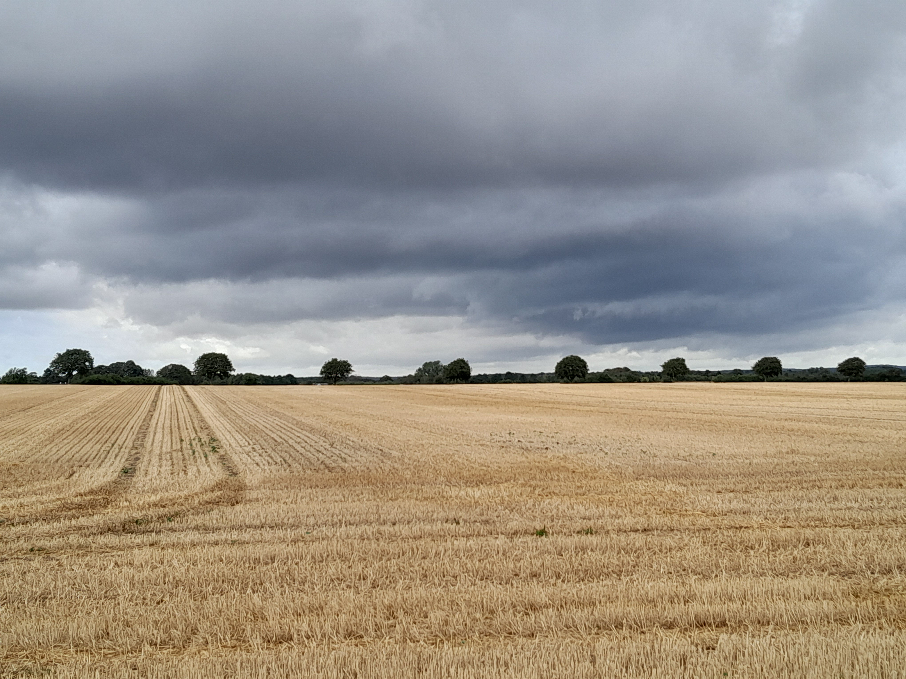
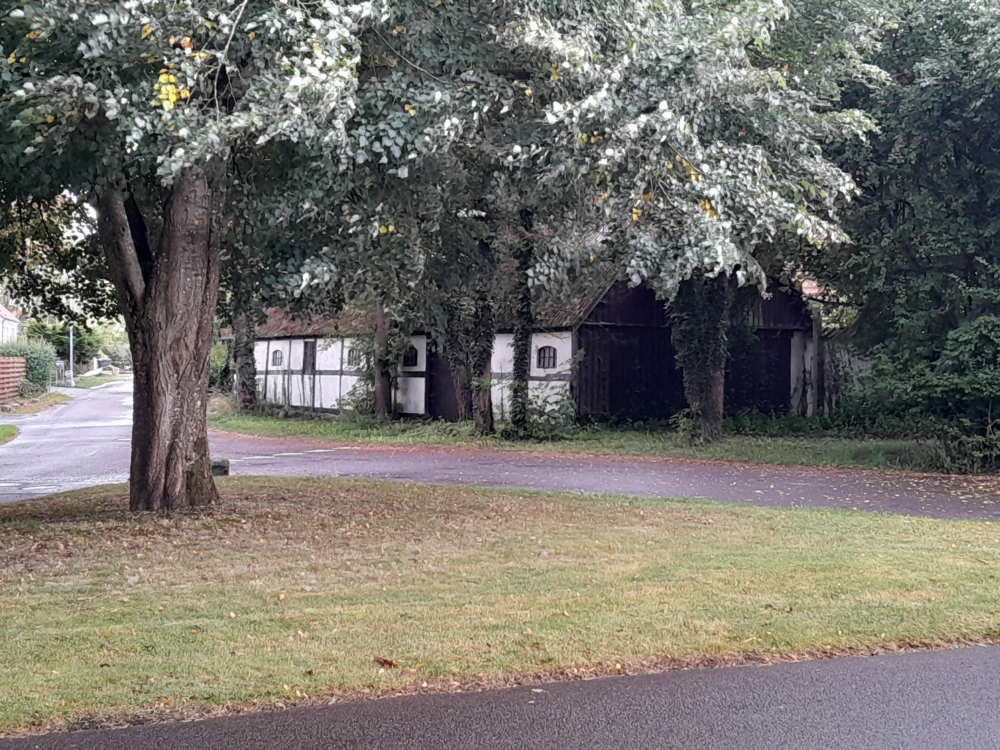
Billeder. På vej til arbejde.
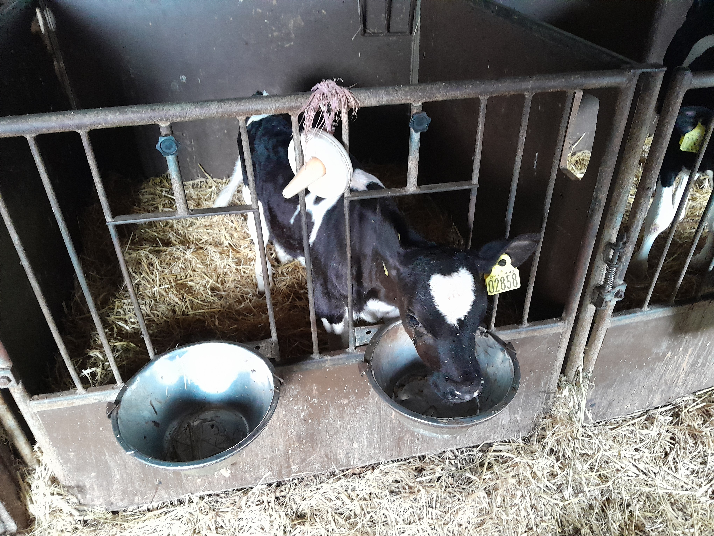
Billede. En sød kalv.
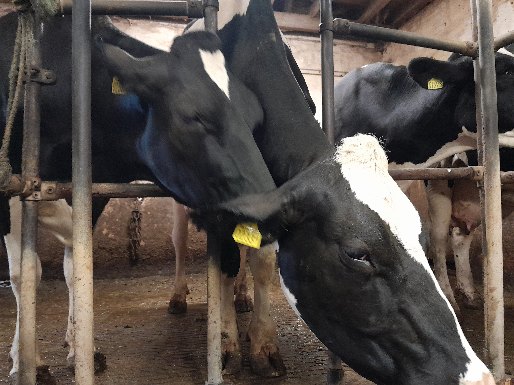
Billede. En ko, der slikker en anden ko i øret.
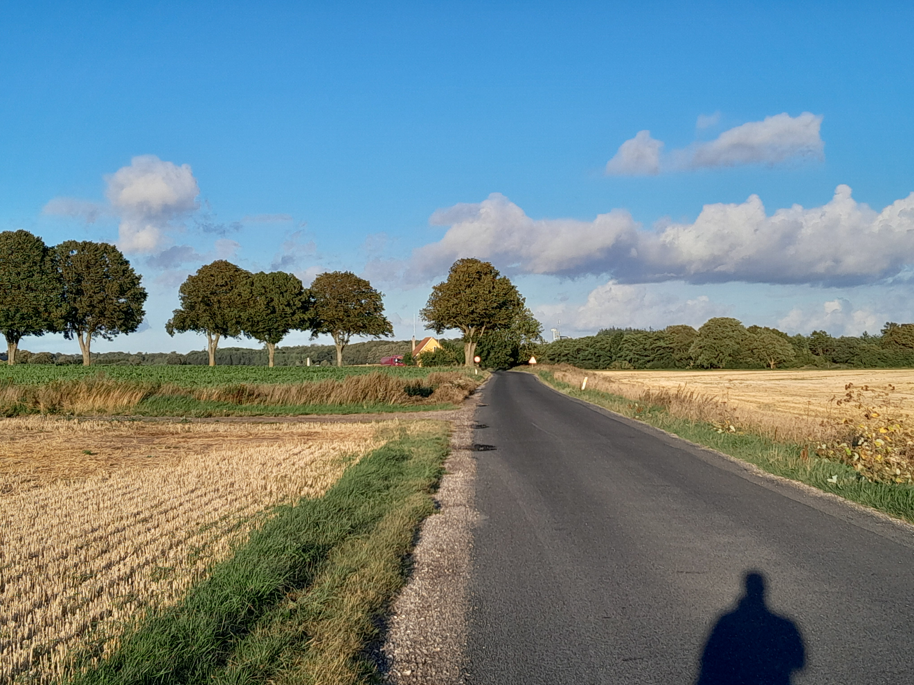
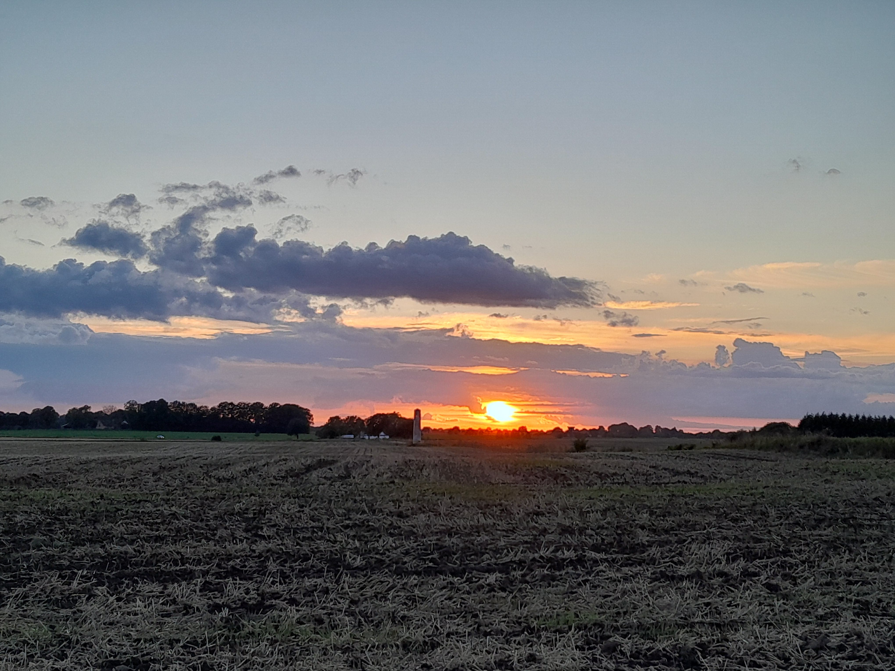
Billeder.
Mere træfældning
Jeg fældede et mindre træ i går og bundtede grenene og et lidt større træ blev fældet i dag. Det var en ret stor have og det krævede meget tid og mange kræfter at vedligeholde den, så min kæreste besluttede at mindske bevoksningen i den, så den var lettere at holde. Der var rigeligt med træer, så nogle af dem skulle væk. Det var sjovt at arbejde med den store og den lille kædesav, samt det redskab, der skar grenene over og jeg kunne godt lide den del af arbejdet, men at bundte de mange grene efterfølgende var lidt kedeligt.

Billede. Træfældning.
At beskæftige sig
Jeg kunne ikke holde ud at gå og ikke foretage mig noget meningsfuldt, når jeg ikke malkede, så det var rigtigt godt for mig at være aktiv i haven. Jeg savnede dog i den grad mere intellektuelt udfordrende arbejde, og jeg vidste ikke hvad det så kunne være. Jeg planlagde at tage et online landmandskursus, men skulle finde det rette først. Jeg sørgede for at have små opgaver i løbet af dagen, lige fra de rutineprægede til de mere specielle.
Musse
Jeg havde taget en flaske og skåret hul i proppen, så der kun kunne komme højest et stykke tørkost ud ad gangen, og så fik Musse sin mad i den. Hun baksede rundtmed flasken til den var tom og det var god aktivering og motion for hende. Jeg havde også pakket hendes mad ind i et viskestykke og foldet det sammen og så skulle hun selv folde det ud og spise maden. Hun skulle udfordres lidt hver dag, så hun ikke kedede sig. Gudske tak og lov havde hun det fortsat bedre, selvom halen ikke var på højkant endnu.
Kontakt til gammel ven
Min gamle ven, som jeg havde skrevet til, og som havde svaret mig, havde jeg skrevet en lidt længere besked til, samt sendt et billede, men jeg havde ikke hørt fra ham igen.
Svar fra advokaten
Jeg fik svar fra advokaten forleden. Hun undersøgte stadig hvordan man skulle søge om generhvervelse af min autorisation og hun spurgte, om hun skulle søge dommen ophævet nu. Jeg svarede at jeg lige ville vente til efter næste samtale med Overlægen og vendte tilbage.
Håndværkeren
Håndværkeren havde nu renoveret hele forsiden af huset og var i gang med det sidste på gavlen. Det var stressende for mig med hans larm, men han var dygtig og effektiv og det skulle jo gøres. En af min kærestes veninder kom igen i dag og hjalp hende med at male vinduesrammer.
PTSD af Overlægens mishandling
Selvom jeg havde det meget bedre efter den antipsykotiske medicin var ophørt, var jeg stadig modløs, opgivende og angst hver dag. Jeg kunne ikke overskue så meget og tænkte hele tiden på om Overlægen planlagde et nyt overgreb. Efter min mening var han det værste menneske, jeg havde mødt og jeg kunne ikke begribe at han var så sadistisk.
Fire dages malkning
Morgenmalkning søndag var min sidste vagt og eftermiddagsmalkning torsdag den første. Der var en enkelt ko i sygeboks, som havde ondt i sin ene klov og haltede. Der var bestilt klovbeskærer til hende, så hun ventede bare og blev aflastet imens. En af de andre køer haltede også, så hende sendte jeg i sygeboks. Hun brød sig ikke om det, selvom hun ikke var alene i den og hun brølede hjerteskærende meget længe og forsøgte at komme ud, men hun skulle aflastes i det bløde hø, så det var nødvendigt.
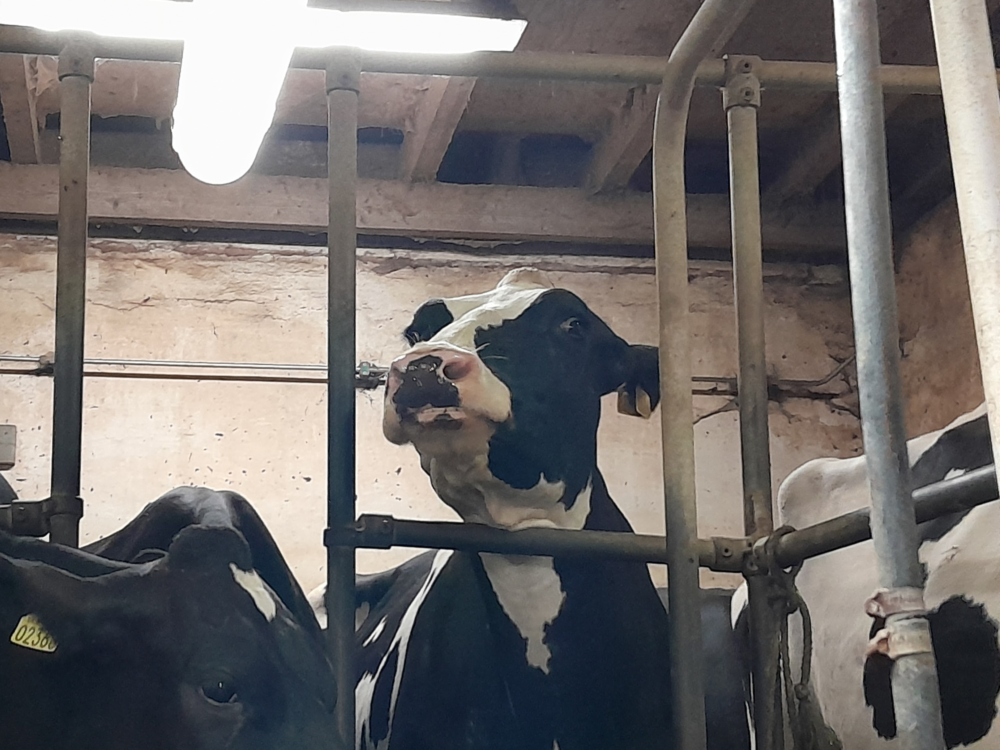
Billede. En sjov ko.
Kæle med kalvene
Til eftermiddagsmalkningerne mødte jeg som sædvanligt ind 20 til 30 minutter før tid og strøede i sygeboksen, altså fyldte hø ind til de to køer, som var i den. Jeg fyldte den store balje i sygeboksen op med vand, og jeg sprayede de to køer med fluesprayen. Jeg aede forsigtigt den urolige ko, og lod hende slikke på min arm, hvilket lod til at aflede hende lidt. Så gik jeg ind til kalvene og sprayede mod fluer hos dem. Der var flest fluer derinde, fordi stalden lå direkte op til møddingen og på hver kalv sad adskillige sorte fluer, og der fløj en sværm af fluer rundt omkring dem. De irriterede kalvene og skulle derfor dø. Jeg brugte en hel spraydåse, hvilket hjalp. I båsen med de ældre kalve var der særligt en, der var legesyg. Når jeg gik ind til dem, kom hun nysgerrigt hen til mig og slikkede mine hænder og tøj og nappede i mine ærmer. Når jeg vendte ryggen tilhende, sprang hun frem og bankede sit hovede ind i min bagdel og lår, så jeg fløj frem.

Billede. En ko i sygeboks.

Billede. Kalvestalden.
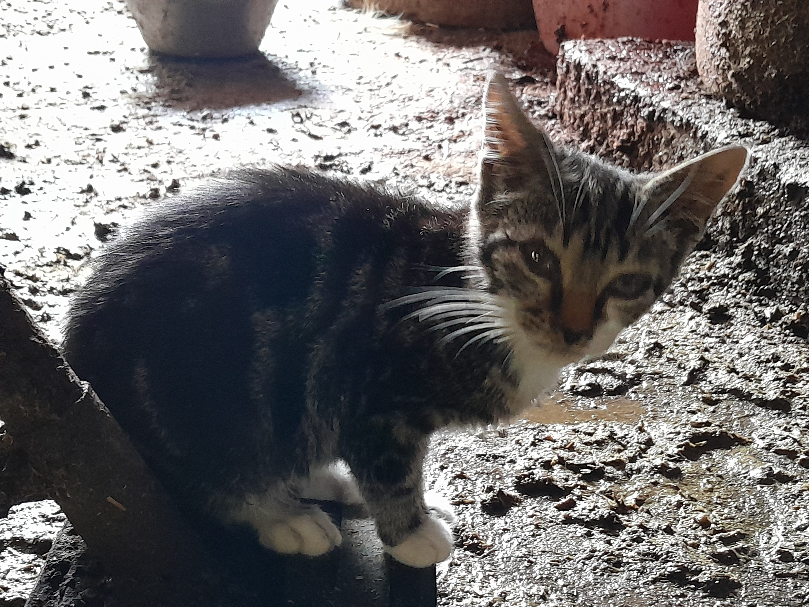
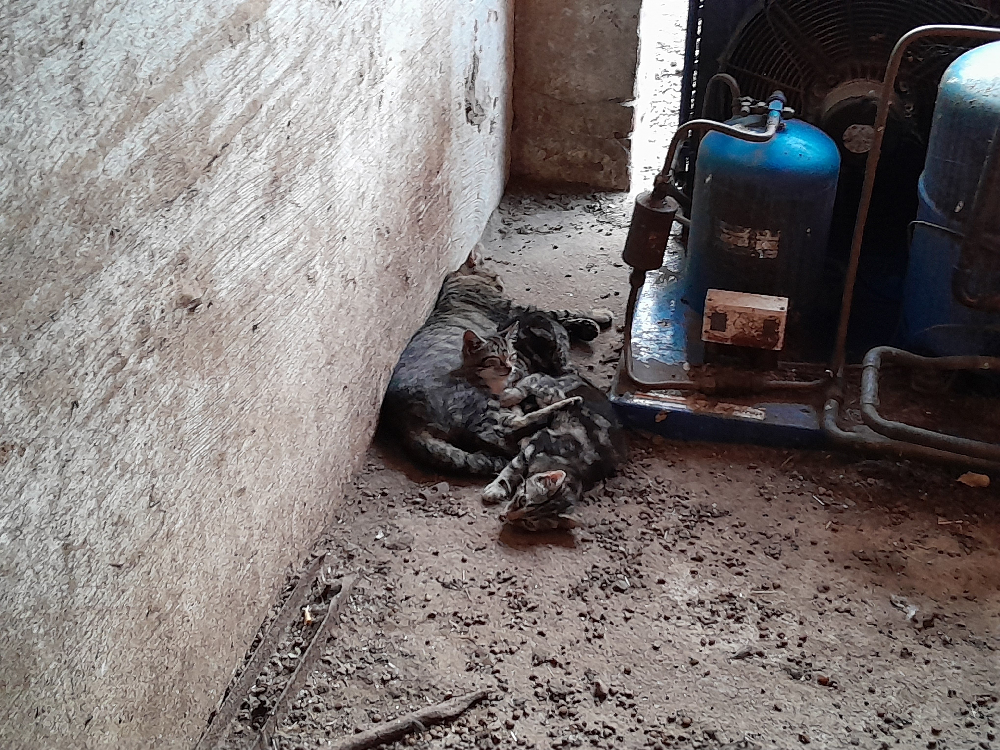
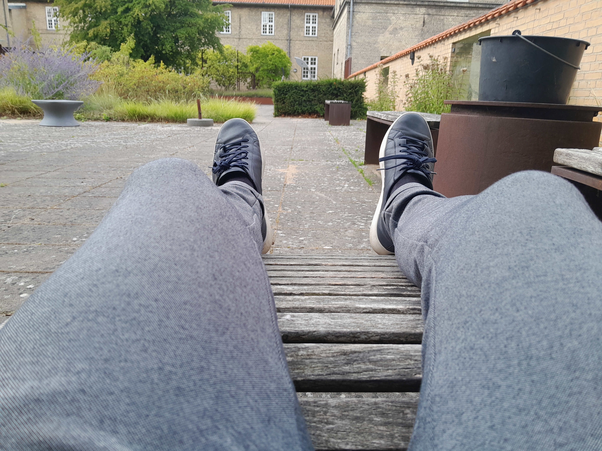
Billeder. De søde staldkatte.
Hos goldkøerne
Jeg var også forbi goldkøerne for at spray dem. Jeg rensede og strøede hos dem en enkelt gang i løbet af mine arbejdsdage, og havde ikke med dem at gøre ellers, men der var også fluer på dem og det irriterede dem tydeligvis. De slikkede og kradsede med klovene på kroppen, hvor fluerne sad, og ofte gik der spasmer gennem musklerne på deres kroppe, hvis det kløede ekstra meget, og det kunne jeg ikke have. Så jeg mødte ind før og gik ind og sprayede dem. Jeg nussede også 2330, som snart skulle kælve, og derfor var blevet rykket ind i goldestalden.
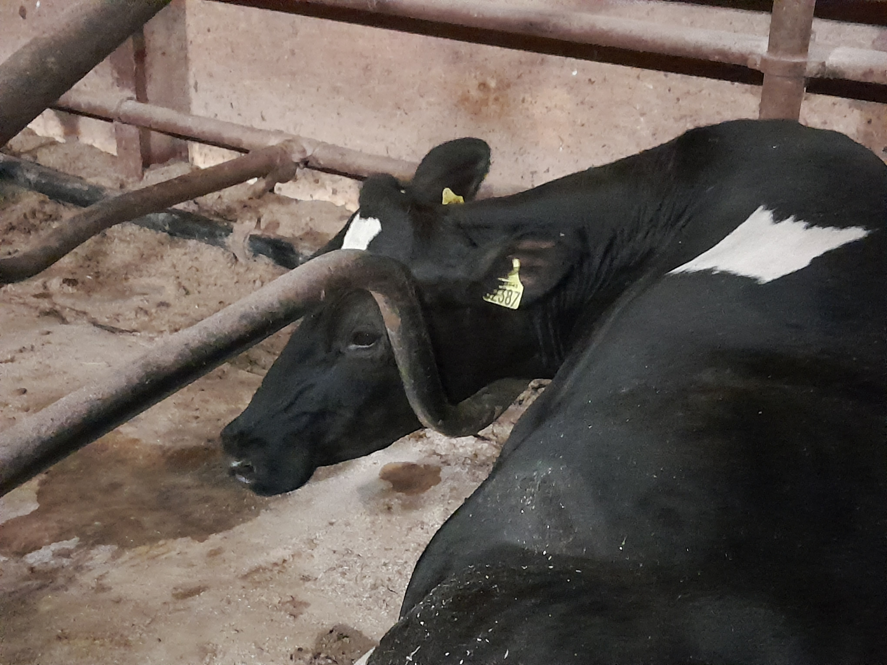
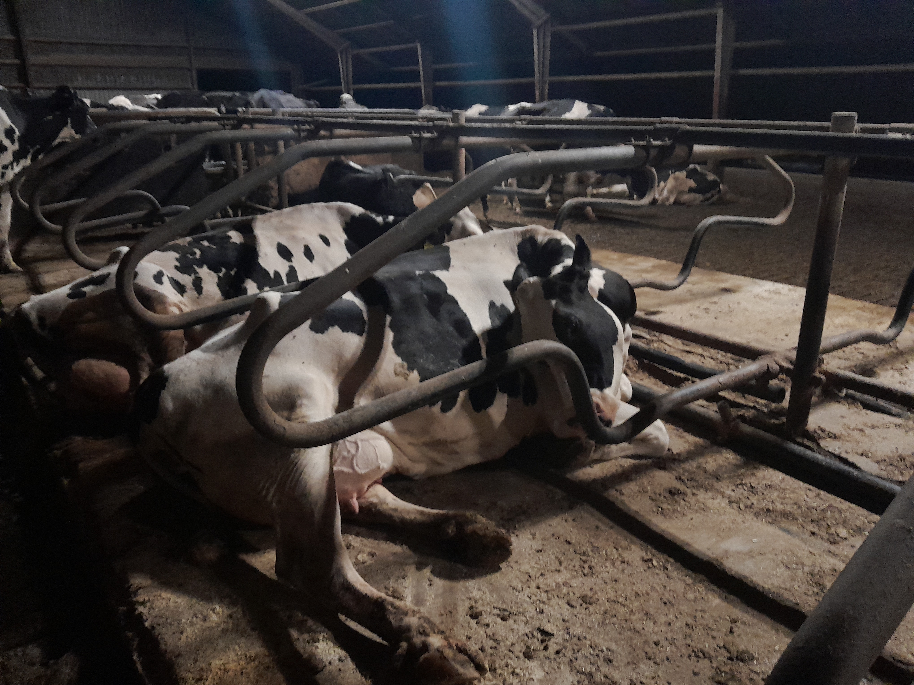
Billeder. Søvnige køer.
Hos tyrene
Nogle af de køer, jeg syntes det var meste sybd for, var de to tyrer, som stod i deres egen stald og brølede. De havde hvert sit bur og der stod de så hele dagen, hver dag. Det virkede ikke som et godt liv, og også de havde fluer. Jeg havde intet at gøre med dem, men i det mindste kunne jeg måske gøre det mindre slemt for dem, hvis jeg sprayede dem mod fluer, hvilket jeg så gjorde. De var begge meget kontaktsøgende, så jeg stod også og nussede dem og lod dem slikke og nappe mig.
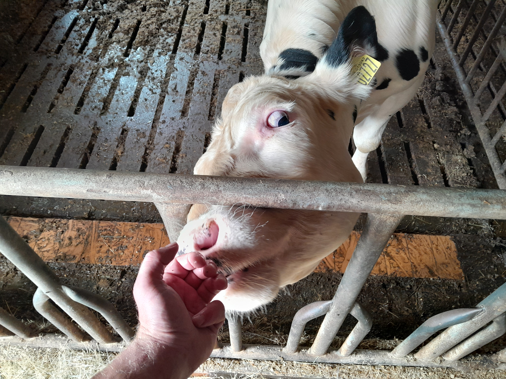
Billede. Hos de to søde tyre.
Banan snack
Jeg ville gerne gøre noget ekstra godt for køerne, så jeg havde forsøgt at tage godbidder med til dem, men erfarede hurtigt at de ikke var interesserede i den mad, jeg ville forkælede dem med. Jeg havde forsøgt med kiks, boller, æbler og brunkager, blandt andet, men uden held. Jeg forsøgte nu med en banan. Den var skrællet og jeg rakte den frem mod nogle køer, der ventede på at blive malket, som snuste til den, men som ikke var interesserede. Jeg lagde bananen ned på gulvet foran dem og så spiste en af køerne den, men lavede hurtigt en sjov grimasse, som havde det været en sur citron. Det var ikke et hit heller.

Billede. Køerne stod i kø.
Grankoglerne
Min kæreste skulle til at lave juledekorationer, så jeg spurgte gårdejeren om jeg måtte tage grankogler, der lå på jorden ved siden af laden med hjem. Det måtte jeg gerne. Efter de to sidste morgenvagter gik jeg således rundt i det regntunge vejr og samlede kogler. Det blev til to bæreposer med dem.
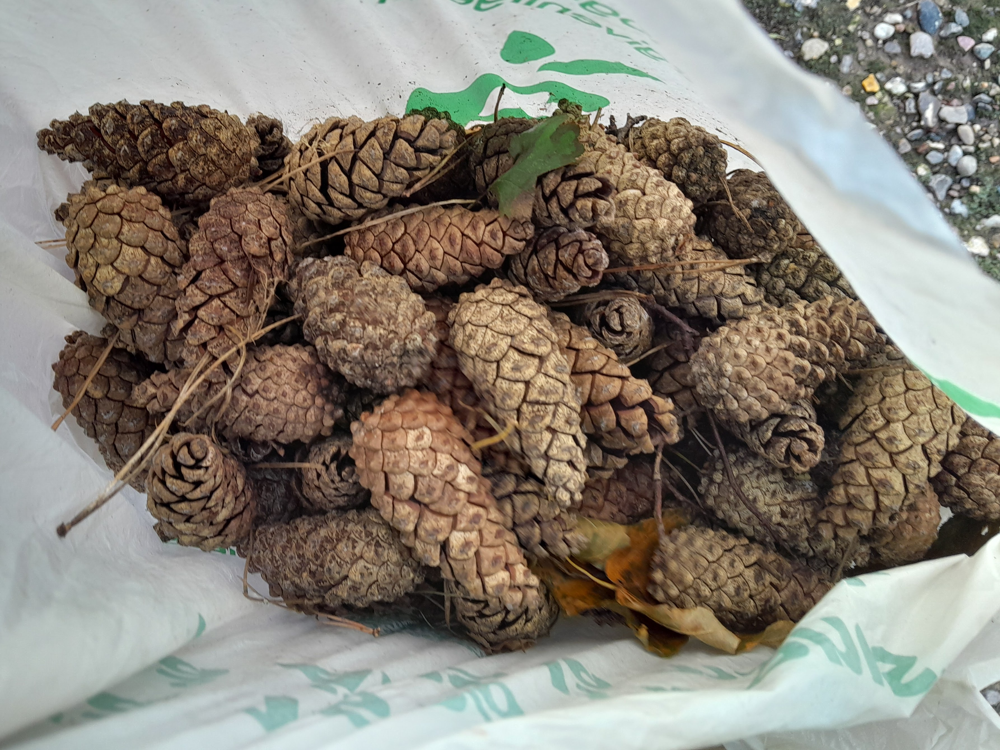
Billede. Samlede grankogler til juledekorationer.
Musses fødselsdag
Det var Musses fødselsdag i dag og vi havde købt gaver til hende, som min kæreste havde pakket ind, men uden tape og bånd, så hun selv kunne pakke dem op. Hun blev ellevild og fik let indholdet af pakkerne ud. Det var to forskellige pivedyr, samt en slags dounat af brusk omvilket med noget, der lignede tørret bacon. Det var skønt at se på. Senere legede jeg med hende med de nye gaver i haven.
Årsdag
Det var også min kærestes og min årsdag i dag. Hun havde købt et par flotte vintersko til mig og jeg havde inviteret hende på middag på en lokal pæn resturant.
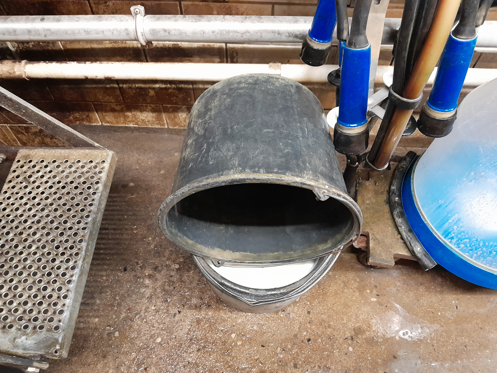
Billede. Fejring af årsdag.
Landmands demo
Der var traktordemonstration med utilfredse landmænd ved Christiansborg i dag. Jeg skrev for sjov til landmanden og spurgte hende om hun og gårdejeren deltog, hvilket hun svarede at hun ikke gjorde, men at hun støttede sine kolleger fuldstændigt.
Havearbede
Jeg gik tur med Musse to gange i dag og mellem de to ture bundtede jeg de resterende grene fra træet i haven.
Meddelelse om lægesamtale
Jeg fik også en meddelelse om lægesamtale i dag. Den var via video og skulle finde sted den 7. september.
Regnvejr og skybrud
Det havde regnet meget og længe de sidste fire dage og til formiddag kom der en regnbyge, der mindede om et skybrud. Det var ikke kun kedeligt og gråt, og forhindrede mig i at arbejde i haven (og Musse ville heller ikke gå den sædvanlige tur, men kun lige ud for at tisse), men huset fundament kunne også tage skade af vandet, da afløbet ikke kunne magte mængden af det. Desuden gjorde renoveringen af husets facader at nedløbsrøret var erstattat af store baljer og dem brugte jeg en del tid på at tømme. Vejvæsenet havde i starten af sommeren lavet en lille vold af asfalt ved vejen, så vandet derfra nu blev ledt ned i kloarken, og det havde heldigvis hjulpet meget.
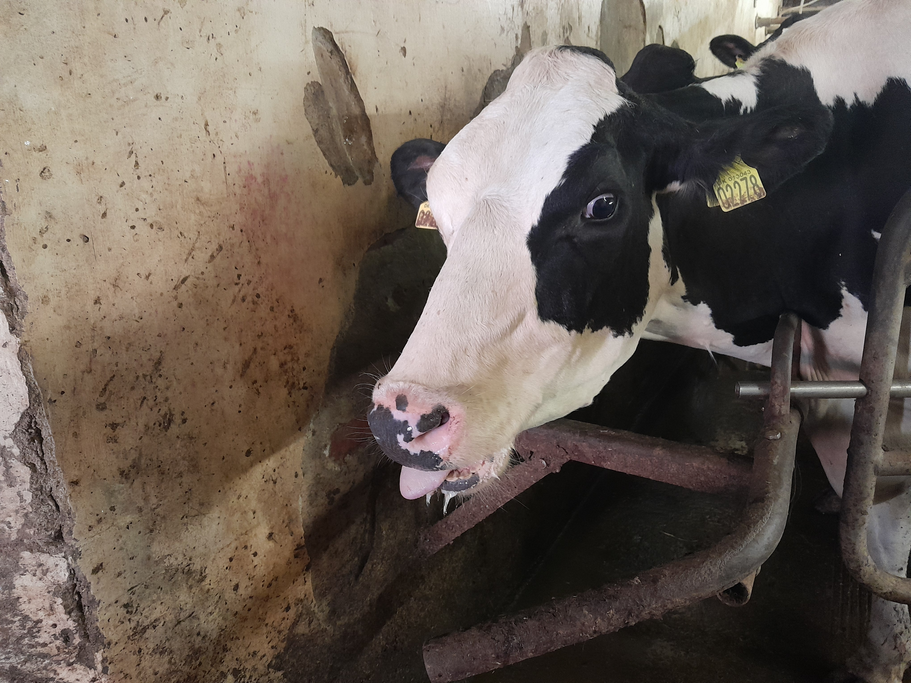
Billede. En uartig ko.
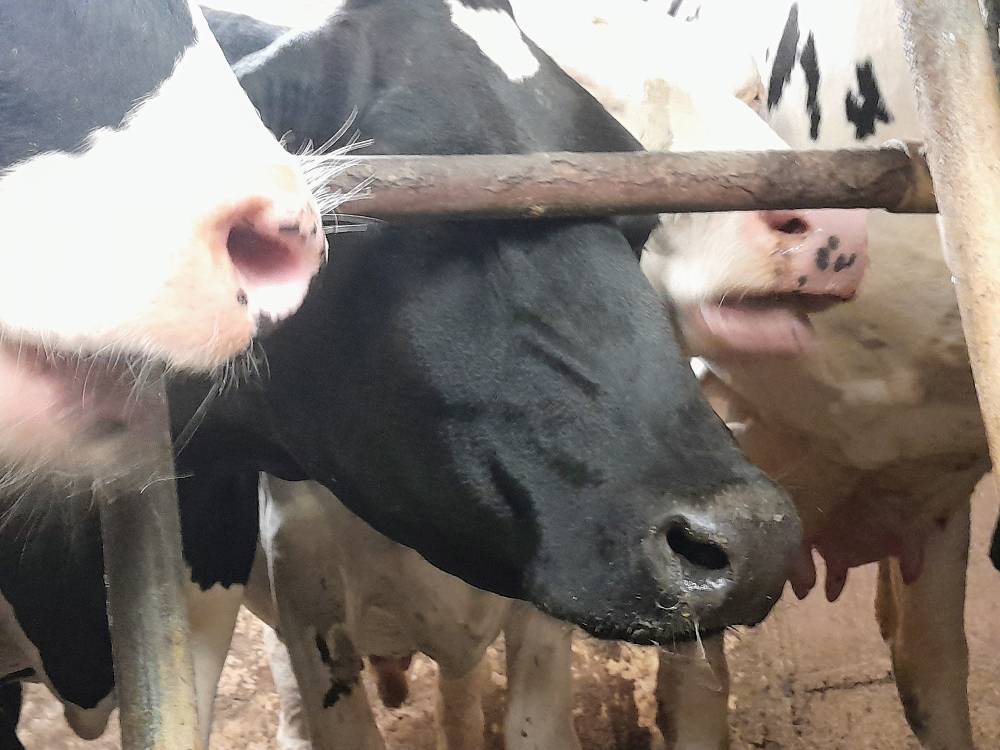
Billede. Koen stod og småsov.
Lægesamtale mandag
Der var planlagt videomøde med Overlægen, sygeplejersken og hende fra Danmarks Fængsler på mandag. Jeg havde i forrige uge skrevet til afdelingen vedrørende de skeks uger, hvor jeg qua gårdejerens operation skulle arbejde hver dag, samt bedt om at blive genopstartet i Concerta, så jeg havde en chance for at tage en voksenlærlinge uddannelse, så det var måske agendaen på mødet. Jeg ville i særdeles høj grad også have dommen ophævet, men var usikker på, om det var det rette tidspunkt at fortælle Overlægen om det på. Han var i min optik et følelsesmæssigt meget ustabilt menneske, smålig og sadistisk, og hvis jeg vovede at bede om ophævelse af dommen, ville det sandsynligvis fornærme ham og være kontraproduktivt. Som altid frygtede jeg lægesamtalerne og forventede det værste. Det var en form for psykisk vold.
Om det kommende arbejdsskema
Jeg var blevet enig med landmanden om, at jeg stod for morgenmalkningen hver dag i de seks uger, gårdmanden var uarbejdsdygtig efter operationen for karpaltunnelsyndrom, men alligevel skrev hun i foregårs og lavede det om, så jeg skulle malke om eftermiddagen hver anden uge. Det betød at jeg skulle kæmpe hver uge med at ændre min døgnrytme og det var både unødvendigt og ikke det, vi havde aftalt. Jeg blev en smule vred og skrev og spurgte hvorfor hun nu havde ændret vores aftale. Hun kom med et vævende svar, og jeg skrev at jeg ikke var sikker på at jeg kunne klare arbejdet i givet fald. Det endte med at hun lavede det om til det, vi havde aftalt. Jeg var stabil, effektiv og dedikeret (billig) arbejdskraft, og jeg stod altid til rådighed. Hun var afhængig af min hjælp i de seks uger. Alligevel mente hun bare at hun kunne skalte og valte med mig efter forgodtbefindende, uden nogen hensynstagen. Det var meget belastende.
Lægesamtale
Der var lægesamtale i dag og sygeplejerske Bente og min kæreste deltog begge. Som sædvanligt var det via videolink og jeg optog samtalen. Overlægen så karikeret positiv ud og spurgte hvordan jeg havde det. Jeg svarede, at jeg havde det markant bedre uden selvmordstanker, at uoverkommelighedsfølelsen var væk, og at jeg bedre kunne varetage mit arbejde og huslige opgaver. Malkearbejdet var fysisk meget hårdt og der var ingen fremtidsmuligheder i det. Dog kunne jeg stadig ikke fokusere på at læse bøger og det ville umuliggøre, at jeg tog en uddannelse som landbrugsassistent. Jeg bad derfor om at blive genopstartet i Concerta. Det nægtede Overlægen og han nægtede også at forklare mig hvorfor, udover at det var noget, som Retslægerådet havde bestemt. At jeg var yderst grundigt udredt og havde fået medicinen i seks år uden nogen problemer, var han ligeglad med.
Domsophævelse
Jeg bed så om at få dommen ophævet, men det ville Overlægen heller ikke diskutere. Det var op til dommeren, sagde han. Det var selvfølgelig løgn, da dommerne altid dømte efter hvad psykiaterne dikterede. Jeg sagde til ham at det var modbydeligt at være underlagt en unødvendig behandlingsdom, at jeg konstant frygtede nye overgreb og at jeg gerne ville have min ytringsfrihed og bevægefrihed tilbage. Han sagde, at han ville være sikker på, at jeg var integreret i samfundet igen med stabile forhold og et arbejde, og jeg sagde at det jo var tilfældet nu.
Modløs igen
Min kæreste bekræftede hvad jeg havde fortalt Overlægen, men han var ligeglad. Samtalen var så ydmygende og jeg var så nedslået og modløs bagefter, at jeg bare sad og kiggede ud i luften, ude af stand til at bevæge mig. Min kæreste krammede mig, men det hjalp ikke rigtigt, selvom det var sødt af hende.
Mail til advokaten
Jeg skrev straks efter samtalen en mail til min advokat, hvor jeg bad hende om at søge om ophævelse af dommen. Jeg var ligeglad med om jeg tabte, bare jeg havde en minimal chance for at vinde, gav det mig håb til at fortsætte livet. Jeg hadede Overlægen, hans umyndighedsgørelse og arrogance så intenst, at jeg ikke kunne rumme det. Han fastholdt mig i et helvede, og der var ingen verdens grund til det. Overlægen havde definitivt ødelagt mit liv. Han mishandlede mig. Og jeg holdt mig i live indtil videre, men der kom jo en dag, hvor jeg ikke kunne holde det ud længere, og så..
Seks ugers arbejde
Gårdejeren var blevet opereret for kaepantunnelsyndrom og måtte ikke bruge hånden i seks uger, hvorfor jeg måtte varetage morgenmalkningen i perioden. I dag var første dag. Selve malkningen var hurtigt overstået, men en kæmpe bunke med afgrøder, der var dækket med sort plastik, skulle der lægges gamle bildæk på. Dækkene skulle ligge op til hinanden, så der skulle bruges rigtig mange dæk til opgaven. Det skulle gøres omkring midddag, så jeg fik ingen søvn og måtte tilbage til gården igen.
Billede. Råmælken fra en nykælver blev taget fra og givet til den nye kalv.
Tillykke Kvaj Kvaj!
Landmanden fortalte mig, at Kvaj Kvaj var fyldt ni år i går. Hun var en af de ældste køer på gården. Jeg gav hende ekstra kæl og kram, da det blev hendes tur til at blive malket. Hun var så sød og hvis jeg havde råd, havde jeg købt hende, så hun kunne græsse på en frodig mark resten af sit liv og aldrig mere producere mælk til mennesker.
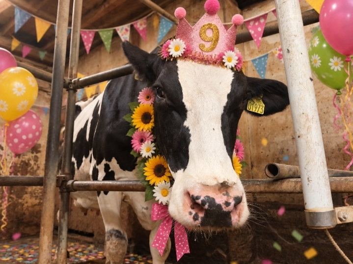
Billede. Tillykke Kvaj Kvaj!
Råddent foder
Landmanden og jeg stod på den store bunke, mens hendes søn kom kørende i gummigeden med dæk. Hun og jeg lagde dem til rette og sønnen kørte mange læs til os. Fordi det var en ikke-rutineagtig opgave, havde Landmanden taget øl med til os. Da arbejdet var overstået, gik vi alle tre ind til Gårdejeren, der sad i sin stue og så videoer på YouTube om traktorer, og så drak vi øllene og sludrede om hans operation og om arbejdet på gården. Herefter var sønnen og jeg ude ved en anden bunke foder, hvor afdækningen blev taget til side og så skovlede vi det øverste lag sorte, rådne fodder væk. Arbejdet kunne mærkes i lænderyggen efterfølgende.
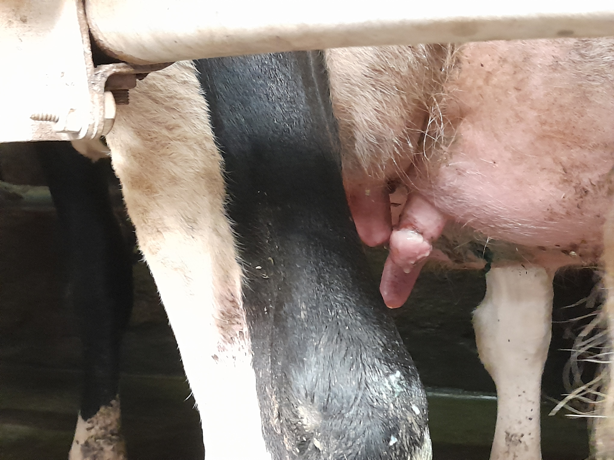
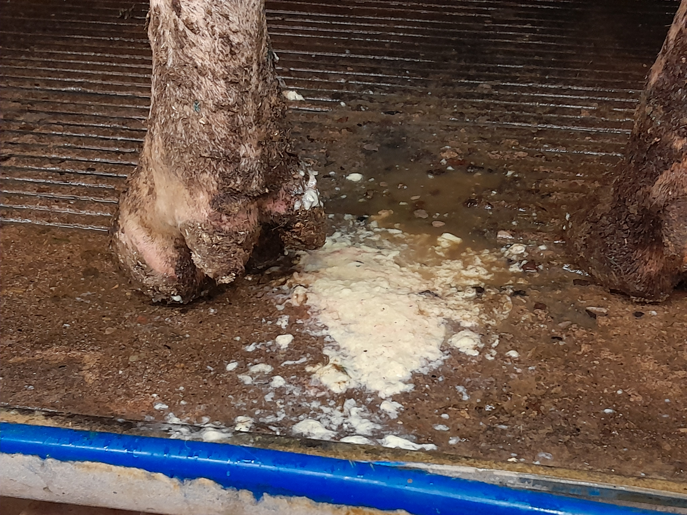
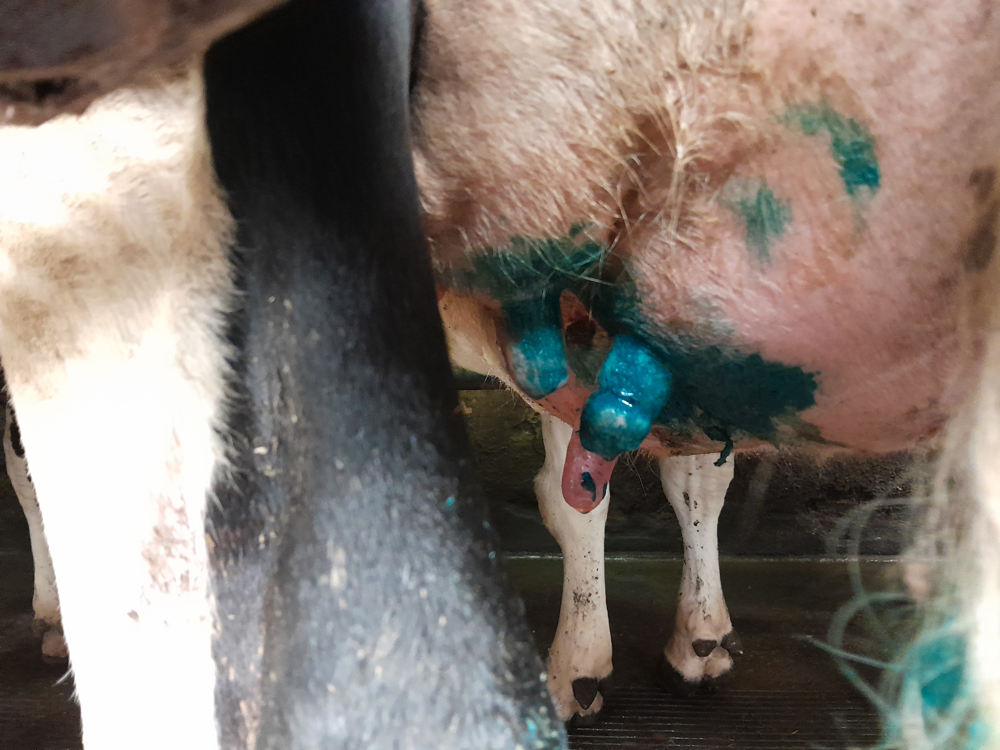
Billeder. En af patterne var skadet, den klumpede mælk løb ud ad siden, og den var inficeret. Jeg vaskede og smurte den med antibakteriel salve.
Den syge killing
Det var sent på eftermiddagen, jeg var dødtræt, solen skinnede, og det var lunt. Ude på gårdspladsen så jeg en skravlet, lille killing, der bare sad stille. Det var usædvanlig adfærd, så jeg gik hen til den. Det stakkels kræ havde tykt, gult pus omkring begge øjne og indtørret snavs ved næsen. Den så dehydreret ud med en tør tunge, og den reagerede sløvt, da jeg forsigtigt tog den op. Jeg spurgte Landmanden om hun var klar over killingens tilstand. Det var hun, sagde hun, killingen havde været syg i nogle dage, de andre katte havde udstødt den, den var holdt op med at drikke og den havde nok ikke langt igen.
Dilemma
Kattekillingen var i mellemtiden krøbet hen til udluftningen til en maskine, som blæste varm luft ned på den. Jeg kunne slet ikke holde ud at se det lille dyr, som havde det så dårligt. Landmanden havde syv gårdkatte, som hun havde taget til sig, når de var blevet syge, hun ville ikke risikere at killingen smittede dem, så hun ville ikke have killingen hjem til sig. Gårdejeren heller ikke, hans holdning var, at ingen dyr skulle ind i huset, men hørte til udenfor. Musse ville ikke acceptere en killing, så vi kunne heller ikke tage killingen hjem og pleje den. Jeg vidste ikke hvad jeg skulle gøre. Jeg besluttede mig for at jeg ville made killingen med mælk i en strøjte, når jeg vendte tilbage om natten. Landmanden havde vasket den i ansigtet, sagde hun, men ikke givet den noget at drikke.
Katteinternatet
Der var et katteinternat på egnen, men jeg var ikke sikker på at de ville modtage en dødsyg killing, så det blev ved tanken. Jeg tænkte meget på killingen, da jeg kom hjem og talte med min kæreste om den. Hun var tæt på at køre hen til gården og tage killingen med hjem, men det gik desværre ikke pga. Musse. Jeg kunne ikke vente med at komme på arbejde igen, så jeg kunne tage mig af det lille dyr.
Død
Det var en kold nat, da jeg ankom til gården. Jeg ledte straks efter killingen, den var ikke let at finde, men til sidst lykkedes det. Den lå mellem ventilatoren og vægen og var ubevægelig. Munden var åben, tungen tør, og øjnene lukket til af indtørret betændelse. Da jeg tog den op, bevægede den sig lidt og udstødte nogle vage lyde. Den var døende. Jeg lagde den forsigtigt et varmere sted ved ventilatoren og bad Landmanden om at kigge til den.
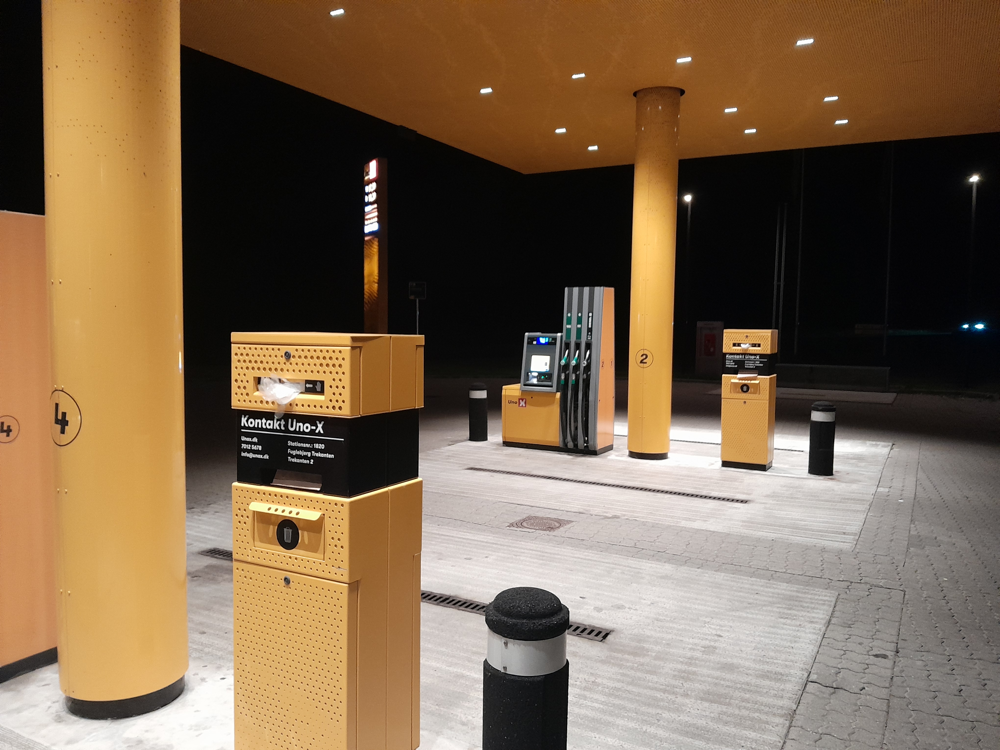
Billede. Den tankstation, jeg plejede at tanke på om natten på vej til arbejde.
Vi gik sammen hen til killingen. Den lå i en lille pøl af urin. Nu var den død. Jeg blev meget ked af det. Jeg syntes at den var blevet svigtet. Jeg spurgte anklagende Landmanden hvorfor hun ikke havde fået en dyrlæge til at se på den og eventuelt aflive den, men hun sagde, at det var for dyrt. Killingen var blevet dårligt behandlet af os. Jeg skulle have taget den med hjem i går og plejet den, uanset om den alligevel ville dø.
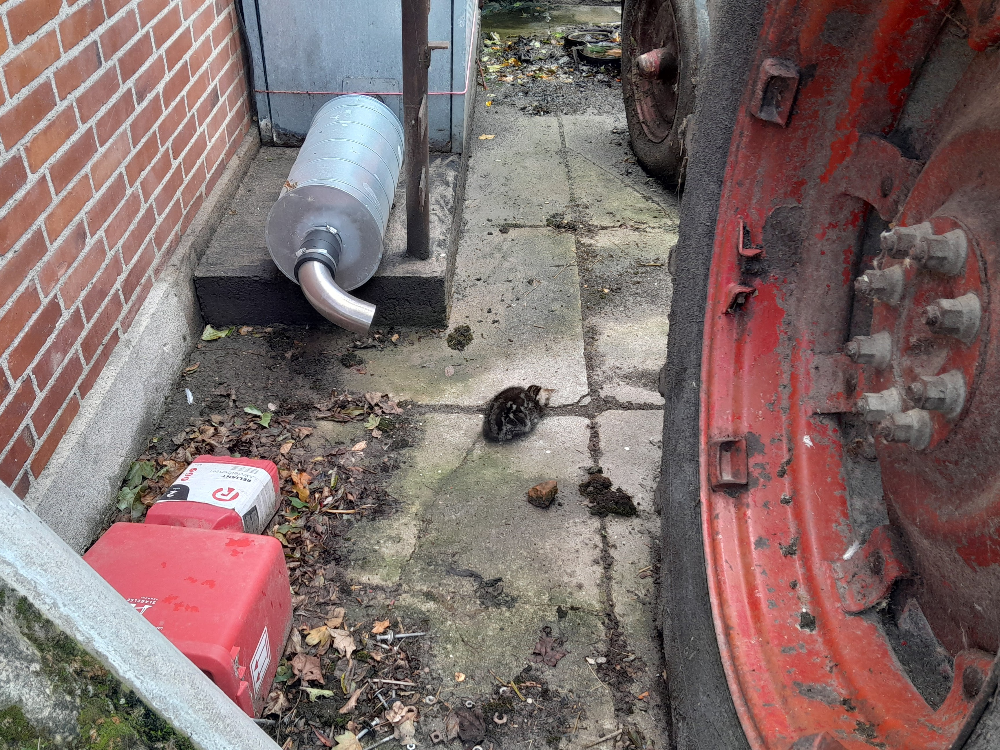
Billede. Den stakkels syge killing varmeed sig ved udluftningen.
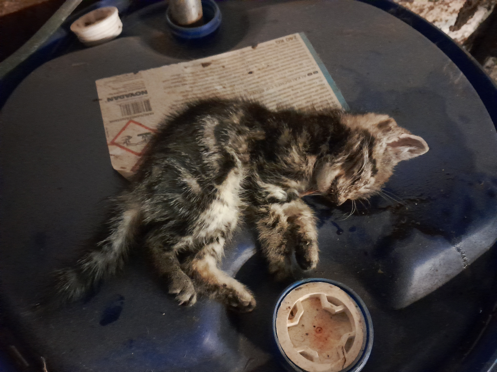
Billede. Killingen klarede det ikke.
Stoppet af politiet
Da jeg kørte ind i rundkørslen ved provinsbyen, kørte en politibil ind bag mig og aktiverede blinket. Jeg holdt ind til siden, og en betjent kom hen til vinduet. Han lyste ind i bagagerummet og bad så om mit kørekort. Han fik det, tjekkede det på sin lille computer, gav mig det tilbage og bad mig så om at poste i et alkometer. Jeg havde ingen promille og det var åbenbart årsagen til at jeg blev standset. Han spurgte så hvor jeg var på vej hen og jeg sagde, at jeg skulle på arbejde og malke køer. Det svar accepterede han og ønskede mig en god aften og så var de videre. Det varede kort tid og jeg havde det fint med at blive tjekket, for jeg havde intet at skjule.
25 års jubilæum for 11. september
Det var 25 års jubilæum for terrorangrebet den 11. september 2001 og aviserne skrev en del om det. For mig var det både en hændelse, der lå langt væk og meget tæt på, men ellers var det ikke noget, jeg tænkte meget over.
Ny døgnrytme
Jeg havde morgenmalket i fire dage og forsøgte at komme ind i en ny døgnrytme, hvor jeg enten sov kort, når jeg kom hjem, efter at have gået tur med Musse, og igen om aftenen eller holdt mig vågen og først gik i seng tidligt om aftenen. Det var ikke lykkedes for mig endnu, nogen af delene, så jeg var utroligt træt hele dagen men uden at kunne sove. Fordi Landmanden nu hjalp med malkningen ca. halvdelen af tiden, blev vi hurtigere færdige. Det var faktisk ikke så godt, for når jeg så kun arbejdede mellem 3 og 3,5 timer modsat 4 timer tidligere, så virkede det næsten som om det ikke kunne betale sig at stå op om natten og køre så langt for så kort tid. Til gengæld fik jeg talt meget med Landmanden, hvilket var hyggeligt.
Kvaj Kvaj i brunst
Kvaj Kvaj var netop kommet i brunst, men skulle ikke insimineres, da hendes gamle krop ikke kunne holde til det længere. Det var dog også farligt for hende at være i brunst, for når hun sprang op på ryggen af de andre køer, så risikerede hendes ben at skride ud til siden og hun kom til skade. Derfor gjaldt det om at opdage når hun skulle til at springe og så forhindre det, hvilket skete med at sprøjte vand i hovedet på hende.
Efterår på gården
Det kunne mærkes på gården at efteråret var indtruffet. Det var mærkbart koldere og mørkt om morgenen og jeg var trukket i den blå keddeldragt. Næste skridt var handsker, hue og på et tidspunkt skiundertøj.
Forberedelse af journalistens interview
Jeg havde modtaget to sider med spørgsmål fra journalisten, som jeg sad og forberedte i dag. De omhandlede perioden 2018 og 2019, og det var ikke rart at genkalde sig alt det modbydelige, jeg havde oplevet dengang. Det var imidlertid bydende nødvendigt, og også rart at få overstået.
Fødselsdag
Jeg fyldte 45 år i dag og min fantastiske kæreste havde dækket morgenbord til mig, pyntet op med flag, købt en Leaterman Signal som gave og jeg modtog lykønskninger fra venner og familie i løbet af dagen. Til aften lavede min kæreste en lækker middag. Jeg var meget taknemmelig for det hele, men det blev overskygget af Overlægens mishandling af mig. Jeg hadede ham uendelig meget.
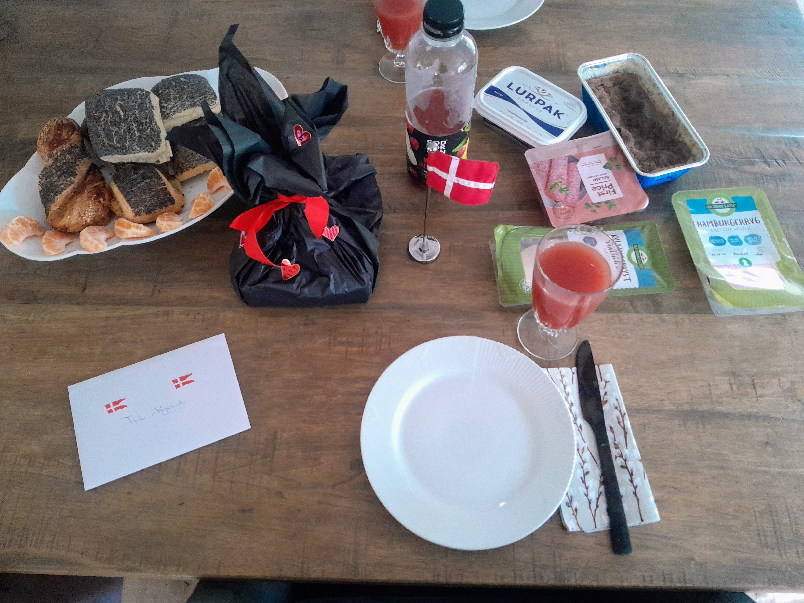
Billede. Min kæreste havde dækket morgenbord.
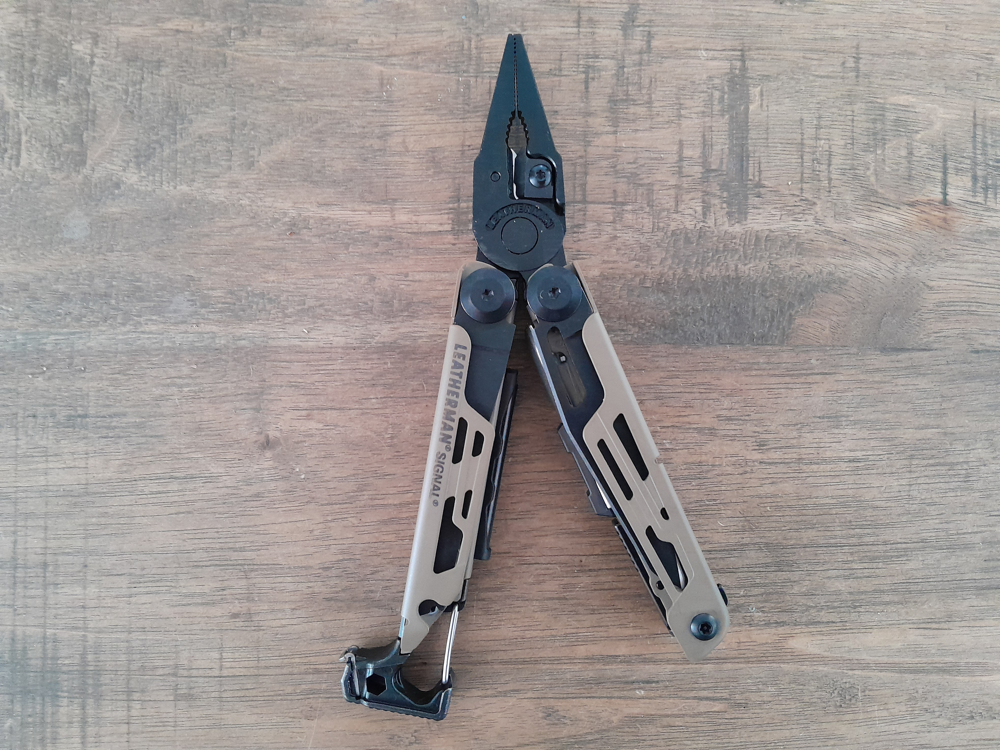
Billede. Gaven fra min kæreste.
På arbejde
Jeg var træt da jeg blev vækket af alarmen kl. 2.30 og kørte afsted. Kvaj Kvaj var ikke i brunst mere og ville gerne nusses. Der var født en ny kalv, men derudover var der ikke sket mere.
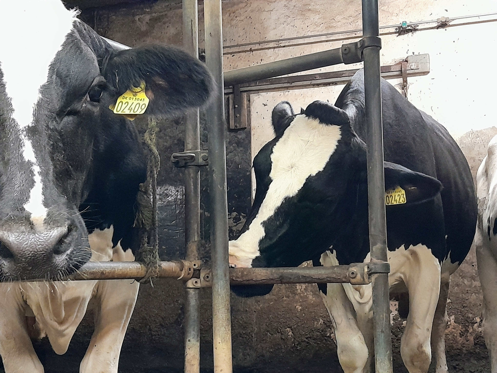
Billede. Koen Channe, der stå og hviler mulen.
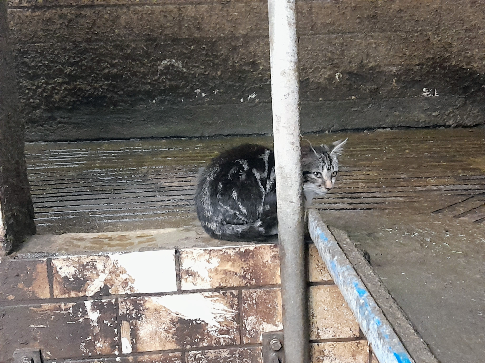
Billede. En af killingerne, der ikke var så sky. Den var også syg og hostede, og jeg håbede at den overlevede.
Besøg af journalisten
Jeg kørte forbi Daglig Brugsen efter arbejde, og heldigvis havde den åbent kl. 6.40. Jeg købte sodavand, slik, to pizzaer og to salatretter til når journalisten kom senere. Jeg forsøgte at sove da jeg var kommet hjem og havde gået tur med Musse, men jeg kunne ikke falde i søvn og jeg skulle op kl. 10.00 og gøre det sidste rent inden hun hun kom. Jeg havde klaret det meste rengøring i går, så det var til at overkomme.
Interviewet
Hun ankom kl. 12 og var smilende og behagelig som sidst. Jeg havde gjort klar på førstesalen og efter lidt smalltalk gik vi derop og begyndte. Hun havde taget slik og sodavand med. Hun tændte diktafonen og vi gik i gang. Efter en pause, hvor jeg viste hende haven, loggede vi ind i min E-boks og på sundhed.dk og hun downloadede relevant materiale og journalen. Så havde hun hvad hun skulle bruge og efter lidt mere smalltalk kørte hun hjem. Det varede lidt over tre timer i alt. Hun ville sende mig det, hun havde skrevet efterfølgende. Selvom det var traumatiserende at genkalde sig mishandlingen, var det en god oplevelse og journalisten var meget empatisk.
Mail til advokaten
Jeg sendte en mail til advokaten med oplysninger om forlagsaftalen, jeg havde indgået, samt adressen til denne webside.
Arbejde og træning
Jeg var efterhånden kommet ind i en døgnrytme, der fungerede nogenlunde; jeg gik tidligt i seng om aftenen, selvom jeg havde svært ved at falde i søvn og når jeg kom hjem fra arbejde gik jeg en tur med Musse og sov en times tid eller to. I dag var jeg taget til træning på vej hjem fra arbejde, hvilket fungerede udemærket, da jeg var opvarmet pga. arbejdet og så slap jeg for at tage afsted om eftermiddagen og spilde ekstra benzin og tid på det.
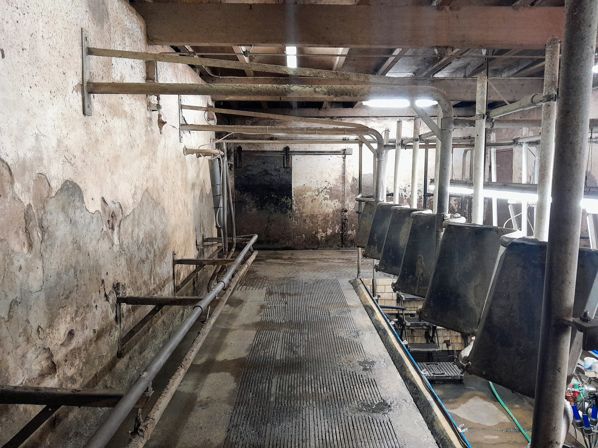
Billede. Den ene side af malkestalden, hvor der kunne stå seks køer og blive malket samtidig.
Udprint til Gårdejeren
Gårdejeren skulle udprinte, udfylde og underskrive nogle papirer til en myndighed, men hverken han eller Landmanden havde en printer. Jeg kørte derfor forbi det lokale bibliotek og printede papirerne ud til ham. Sådan hjalp vi hinanden. Jeg skulle også malke om eftermiddagen i dag og det var en smule hårdt.
Naboen til fitness
Jeg kunne ikke falde i søvn, da jeg kom hjem fra arbejde, men jeg var meget træt da jeg skulle afsted igen lidt i 10. Jeg skulle til Slagelse til min optiker for at hente kontaktlinser, da jeg endnu ikke havde fået tilsendt de nye og da jeg kun havde en enkelt tiilbage til det ene øje. Efter det kørte jeg forbi det lille fitnesslokale og trænede ben og skuldre. Jeg var alene indtil min nabo pludselig kom ind. Jeg anede ikke at han trænede der også, vi hilste på hinanden og talte kort sammen.
Lægesamtale
Det blæste kraftigt, men solen skinnede og det var et smukt efterårvejr på landet. Og så var der lægesamtale med Overlægen. Jeg havde frygtet den og tænkt på den konstant især i de sidste par dage og det åd mig op. Der var så meget jeg havde lyst til at fortælle ham, men det meste ville jeg blive straffet af ham for at sige. Det var fornedrende hver gang at tale med ham og jeg var altid bange for, at han ville begå nye overgreb mod mig. Heldigvis deltog min kæreste ikke i samtalen.
Overlægen:"Altså det var jo et lidt kort opfølgningsmøde det her. Fra min side egentlig for at sige, at så regner jeg med, hvis det stadigvæk går godt for dig derude, at så går der en måned og så kan du om en måned være på Oringe fra en tirsdag til torsdag. Bare lige at se, om det stadigvæk går. Og så kan du fortsætte de sædvanlige aktiviteter. Hvis du nu kan nikke genkendende til at det også går godt."
Mig:"Ja, det går fremragende. Som jeg også sagde sidst, så er det som at få livet tilbage igen. Som jeg også sagde sidst, så er den der uoverkommelighedsfølelse ikke til stede. Selvmordstankerne, de er væk, og ja, den der dybe nedtrykthed, den er der heller ikke mere. Ja, jeg synes, det går rigtig godt."
"Altså, det er jo ikke overraskende for mig, at det går godt. Jeg er bare normal, som jeg hele tiden har været, og det trives jeg rigtig godt med. Bortset fra det dér med min koncentration og uddannelse, som jeg ikke kan overkomme uden min vanlige ADD-medicin, så oplever jeg ikke nogen problemer."
"Jeg arbejder jo fast hver dag i øjeblikket, og det har jeg gjort i 14 dage nu. Det går også rigtig godt. Der er ikke nogen nedsat arbejdsevne på nogen måde. Det er da lidt hårdt at stå så tidligt op, men jeg er kommet ind i en meget god døgnrytme, synes jeg efterhånden. Arbejdet det er fysisk meget hårdt. Jeg kan mærke det i lænd, knæ og skuldre især. Så det er jo ikke et arbejde, der er nogen fremtid i for mig, men jeg er meget taknemmelig for, at jeg har det lige i øjeblikket."
"Fordi at jeg jo kronisk ikke har særlig mange penge og har været forhindret i at arbejde i flere år. Så det er ligesom status. Jeg går tur med hunden hver dag. Jeg spiser frugt og grøntsager hver dag. Det med træningen, det er jeg ikke rigtig kommet i gang med, men jeg får da cyklet på arbejde en gang imellem."
"Jeg har fortalt min arbejdsgiver omkring min situation. Vi går op og ned af hinanden hver dag, hende og jeg. Og jeg lagde kortene på bordet her forleden dag. Det var jeg rigtig glad for, at jeg gjorde. Jeg mødte rigtig meget forståelse fra hende og der er ikke noget, der er ændret imellem hende og jeg af den grund. Tværtimod så var hun meget glad for, at jeg åbnede op og fortalte om min situation og min baggrund. Så det var egentlig meget rørende i og for sig at at dele det med hende."
Overlægen:"Og det går godt med Venlafaxinen, eller hvad tænker du?"
Mig:"Ja, det tænker jeg. Det er ikke noget, jeg lige har bidt mærke i, at der skulle være nogen issues med. Og jeg har nok tabletter også. Altså grunden til jeg jeg steg i den antidepressive medicin, det var fordi, at den her Xeplion, den gik ind og direkte modvirkede min antidepressive medicin med serotonin og dopamin. Så det var årsagen til at jeg steg i Venlafaxinen. Jeg var egentlig meget godt tilfreds med at ligge på den dosis, jeg lå på, men jeg var nødt til at at øge dosis på grund af det. Og på et eller andet tidspunkt vil jeg jo meget gerne ned igen, men jeg oplever ikke nogen bivirkninger som sådan, så det er egentlig udmærket, at det er som det er i øjeblikket."
Lærkekogler og skovtur
Efter træning tog min kæreste, Musse og jeg en tur i den nærliggende skov. Det var nærmest sommerligt vejr og varmt nok til at jeg kunne nøjes med t-shirt. Musse syntes det var spændede med alle duftene og min kæreste samlede lærkekogler og andre grankogler til juledekorationer. Ved Daglig Brugsen mødte vi den ældre kvinde med rolatoren og det lille, hvide og rigtig søde gadekryds, der hed Sif. Jeg havde set dem i bussen på vej hjem fra træning og der så jeg dem ofte. Kvinden var noget reserveret og så altid ked ud af det, men Sif var omvendt nysgerrig og glad. Det var en rigtig hyggelig tur og jeg var træt, da vi kom hjem.
Arbejdet
Jeg holdt ikke så meget af malkearbejdet som tidligere. Det var kedeligt og monotomt, hårdt og jeg tjente ikke godt på det. Fordi Landmanden malkede med mig halvdelen af tiden, var vi hurtigere færdige, og det kunne næsten ikke betale sig at stå så tidligt op og være træt hele dagen for at arbejde så relativt kort tid. Jeg elskede dog stadig at nusse med køerne og opleve deres særegne personligheder.
Gårdejerens IT-supporter
Malkningen gik som smurt og jeg fik nusset en del med Kvaj Kvaj. Da vi var færdige, skulle Gårdejeren have hjælp til at indsende de papirer, han havde udfyldt til den offentlige myndighed. Jeg tog et billede af hver side og fik sendt dem som bilag via hans Borger.dk. Gårdejeren og Landmanden var ret oldschool. De var virkeligt dygtige til meget, også mekanik og håndværk, men IT var de ikke ørne til.
71 timer om ugen
Da jeg kom på arbejde, så jeg en post it seddel ligge i omklædningsrummet. På den havde Gårdejeren skrevet hvor mange timer Landmanden og jeg havde arbejdet denne måned. Landmanden havde i gnnemsnit arbejdet 71 timer om ugen den foregående måned. Det var helt vildt. Da jeg senere talte med hende, sagde hun at hun normalt "kun" arbejdede ca. 60 timer om ugen, men at det højere timetal nu skyldtes at Gårdejeren skulle komme sig efter operationen.